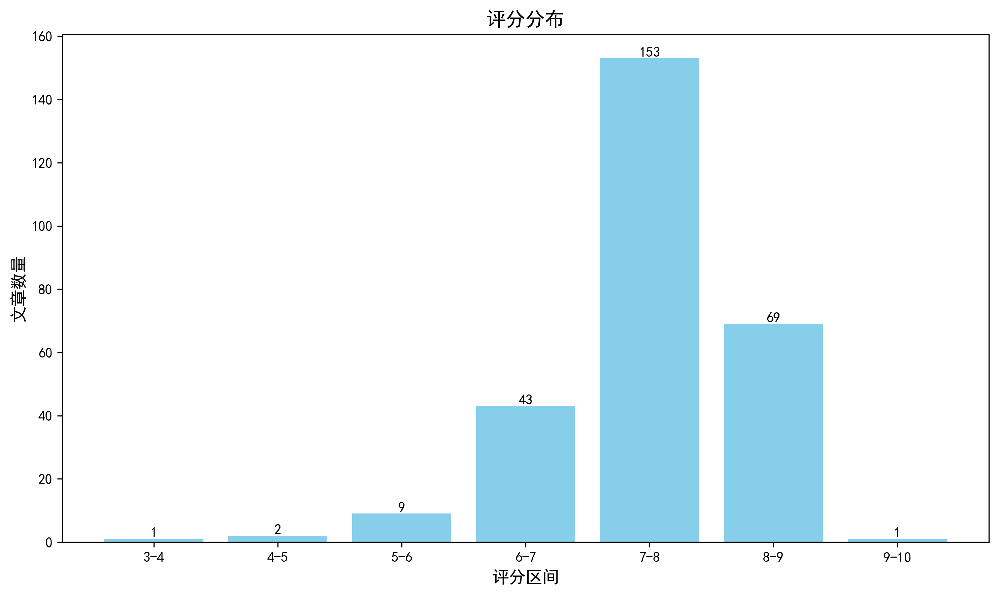

神经科学快讯·第024期 告别测序依赖：单分子分辨率全基因组空间转录组成像重塑脑图谱范式 (2026-08-23)
📊 本周概览
- 头条推荐: 1 篇
- 深度解读: 134 篇
- 简要提及: 120 篇
- 跨界启发: 0 篇
- 已过滤: 289 篇
🌏 环球视野

🌍 国家/地区分布 TOP 10
| 排名 | 国家 | 文章数量 |
|---|---|---|
| 1 | United States | 700 |
| 2 | China | 334 |
| 3 | United Kingdom | 174 |
| 4 | Germany | 129 |
| 5 | Canada | 71 |
| 6 | Switzerland | 70 |
| 7 | France | 55 |
| 8 | Japan | 44 |
| 9 | Australia | 41 |
| 10 | Korea | 39 |
总计: 1657 篇文章
🏢 研究机构 TOP 10
| 排名 | 机构 | 文章数量 |
|---|---|---|
| 1 | Chinese Academy of Sciences | 49 |
| 2 | Stanford University | 37 |
| 3 | University of Oxford | 29 |
| 4 | University of Pennsylvania | 28 |
| 5 | Fudan University | 28 |
| 6 | Tsinghua University | 25 |
| 7 | University of Cambridge | 25 |
| 8 | Peking University | 24 |
| 9 | Howard Hughes Medical Institute | 22 |
| 10 | University College London | 22 |
📊 评分分布
| 评分区间 | 文章数量 |
|---|---|
| 3-4 | 1 |
| 4-5 | 2 |
| 5-6 | 9 |
| 6-7 | 43 |
| 7-8 | 153 |
| 8-9 | 69 |
| 9-10 | 1 |
总计: 278 篇评分文章
📈 各领域文章分布
| 领域 | 深度解读 | 简要提及 | 总计 |
|---|---|---|---|
| 未知领域 | 0 | 86 | 86 |
| 系统与环路神经科学 | 39 | 4 | 43 |
| 认知神经科学 | 23 | 2 | 25 |
| 感觉与运动神经科学 | 17 | 7 | 24 |
| 临床与转化神经科学 | 12 | 8 | 20 |
| 计算与理论神经科学 | 11 | 7 | 18 |
| 分子与细胞神经科学 | 17 | 0 | 17 |
| 方法学 | 7 | 1 | 8 |
| 发育神经科学 | 7 | 1 | 8 |
| 社会与情感神经科学 | 1 | 4 | 5 |
合计: 深度解读 134 篇，简要提及 120 篇，共 254 篇
🥇 头条推荐（9.0+分）
中文标题: 无测序的全基因组空间转录组学，单分子分辨率
作者: Cheng Y, Dang S, Zhang Y et al.
关键词: 空间转录组, 单分子, 全基因组, 无测序, 原位成像
亮点: 免测序、全基因组、单分子分辨率的空间转录组技术，为神经科学提供前所未有的基因表达空间图谱解析能力
核心优势: 突破测序依赖，实现全基因组空间表达的直接成像，分辨率达到单分子水平，对理解细胞类型多样性和组织结构具有革命性意义。
研究局限: 摘要未提供具体技术实现细节和验证数据，实际稳健性、通量和可及性可能受限，且需要高端成像系统支持。
目标读者: 空间组学研究者、神经科学家、发育生物学与肿瘤微环境研究团队
推荐理由: 该技术无需测序即可在全基因组范围内实现单分子分辨率的空间转录组分析，彻底革新了空间组学工具库。对神经科学而言，这意味着可在脑组织原位直接观测海量基因表达的精细空间分布，为解析复杂脑区和疾病模型中的转录异质性提供了前所未有的分辨率和可及性。其高灵敏度和免测序特性将推动空间转录组学在普通实验室的普及，加速构建单细胞水平的空间脑图谱。
📚 精选文献（按领域分类）
临床与转化神经科学
中文标题: 超越临床表型重新思考多发性硬化症治疗
作者: Sormani MP, Wiendl H, Montalban X et al.
关键词: 多发性硬化, 生物标志物, 靶向治疗, 神经炎症, 个体化治疗, 人类
亮点: 超越临床表型，重新定义多发性硬化治疗策略的整合性视角
核心优势: 提出将生物标志物、影像学与临床表型融合的新框架，推动个体化治疗决策
研究局限: 作为观点性文章，缺乏原始临床数据支持，部分推论需前瞻性验证
目标读者: 多发性硬化临床研究者、神经免疫学家及转化医学科学家
推荐理由: 该研究倡导重新审视多发性硬化的治疗策略，主张超越传统的临床表型分类，转向基于免疫病理机制和分子生物标志物的精准分型。这为神经科学和临床转化领域提供了新的框架，有望推动更精准的干预方案和更有效的疾病管理。
中文标题: 皮层厚度变化先于高水平淀粉样蛋白至少7年
作者: James M. Roe, William J. Jagust, Yunpeng Wang
关键词: 阿尔茨海默病, 皮层厚度, 淀粉样蛋白, MRI, PET, 纵向队列
亮点: 皮层厚度变化早于淀粉样蛋白阳性7年，重新定义AD早期影像学标志物
核心优势: 多队列纵向研究首次证明皮层厚度改变可先于Aβ-PET阳性，支持AD结构变化早于淀粉样蛋白假说
研究局限: 样本具体规模未在摘要中披露，且Aβ独立效应仍需进一步验证；皮层厚度变化与Aβ因果方向未确定
目标读者: 神经退行性疾病研究者、神经影像学家、计算神经科学家、临床神经病学家
推荐理由: 这项研究结合纵向MRI与Aβ-PET数据，发现认知健康个体在淀粉样蛋白升高前至少7年即出现皮层厚度增厚和萎缩减缓的早期影像学特征。该发现挑战了对AD病理级联的传统时间顺序理解，为临床前阶段的早期识别和干预窗口提供了关键证据，也为影像生物标志物的纵向建模树立了新范式。
中文标题: 中和I型干扰素的自身抗体是三分之一的基孔肯雅病毒脑炎或脊髓炎病例的基础
作者: Tran VL, Gervais A, Champeaux MM et al.
关键词: 自身抗体, I型干扰素, 基孔肯雅病毒, 脑炎, 脊髓炎, 人类血清
亮点: 发现中和I型干扰素的自身抗体是基孔肯雅病毒脑炎的重要病因，为神经感染免疫提供新靶点。
核心优势: 首次系统揭示自身抗体在基孔肯雅病毒神经系统并发症中的高发生率，具有临床干预潜力。
研究局限: 具体分子机制和因果关系仍需前瞻性验证，样本背景可能限制普适性。
目标读者: 神经免疫学、病毒性神经感染、自身免疫病和临床神经病学研究人员
推荐理由: 该研究通过对基孔肯雅病毒脑炎/脊髓炎患者进行系统性自身抗体筛查，揭示约三分之一的病例由中和I型干扰素的自身抗体驱动。这一发现将病毒感染后的神经系统并发症从单纯病毒致病拓展至自身免疫机制，为临床诊断和免疫干预提供了直接靶点。对于神经科学研究者而言，理解抗I型干扰素自身抗体如何打破中枢神经系统抗病毒免疫屏障，也为其他病毒性脑炎及自身免疫性脑病的机制研究提供了重要范例。
中文标题: 慢性心理社会压力：大鼠和人类睡眠呼吸暂停发病的主要驱动因素
作者: Gagnon M, Fournier S, Gobeil É et al.
关键词: 慢性应激, 睡眠呼吸暂停, 跨物种比较, 大鼠, 人类, 呼吸控制
亮点: 跨物种证据揭示慢性心理社会压力是睡眠呼吸暂停发病的关键始动因素
核心优势: 结合大鼠模型与人类数据，提供了从因果关系到转化意义的双重验证。
研究局限: 摘要信息有限，无法评估方法学细节；人类数据的因果推断可能受限于观察性设计。
目标读者: 睡眠医学、应激神经科学、呼吸调控与转化医学研究者
推荐理由: 本研究通过跨物种实验，首次系统证明慢性心理社会压力是睡眠呼吸暂停发病的关键驱动因素而非单纯风险因子。研究整合大鼠模型与临床队列，揭示压力应激系统对呼吸中枢调控的直接作用，为理解压力相关呼吸障碍的神经机制提供了新视角，并为睡眠呼吸暂停的早期预警和干预策略提供了转化靶点。
中文标题: 基质应力松弛驱动胶质母细胞瘤在粘弹性生物材料中的细胞反应
作者: Sadegh Ghorbani, Michelle S. Huang, Daiyao Zhang et al.
单位: Department Of Materials Science And Engineering, Stanford University, Stanford, Ca 94305, Usa; Department Of Chemical Engineering, Stanford University, Stanford, Ca 94305, Usa
研究地区: United States
关键词: 胶质母细胞瘤, 水凝胶, 应力松弛, 细胞外基质, 透明质酸, 生物材料
亮点: 工程化粘弹性水凝胶揭示基质应力松弛驱动胶质母细胞瘤细胞状态转变的关键作用
核心优势: 利用动态共价化学实现配体与粘弹性的独立调控，首次系统揭示应力松弛对GBM细胞聚集、侵袭标志物和代谢表型的多层级影响。
研究局限: 研究主要基于体外水凝胶模型，缺乏体内验证及分子机制深层次探究。
目标读者: 肿瘤微环境、生物材料、力学生物学及胶质母细胞瘤研究者
推荐理由: 该研究通过设计可独立调控配体呈递和基质应力松弛的透明质酸-弹性蛋白样蛋白（HELP）水凝胶，系统揭示了细胞外基质粘弹性对胶质母细胞瘤（GBM）细胞行为的驱动作用。研究采用动态共价化学构建了刚度匹配但应力松弛不同的基质，精准分解了生化与力学信号的贡献，为理解GBM微环境中的力学转导机制提供了新工具，也为开发更接近体内病理状态的肿瘤模型和靶向力学信号的治疗策略奠定了基础。
中文标题: TLR4信号驱动新生期脑膜炎小鼠模型中的组织炎症、Claudin-5内化和血管屏障破坏
作者: Seegren PV, Rattner A, Smallwood PM et al.
关键词: TLR4信号, Claudin-5, 血脑屏障, 神经炎症, 新生儿脑膜炎, 小鼠模型
亮点: 揭示TLR4信号通过调控Claudin-5内化直接破坏血管屏障的机制，为新生儿脑膜炎治疗提供新靶点
核心优势: 在体内模型中清晰证明TLR4激活与血管屏障破坏之间的直接因果关系，并识别关键分子事件Claudin-5内化，连接炎症信号与屏障功能障碍。
研究局限: 基于小鼠模型，缺乏人体组织样本验证，且未评估长期神经发育影响，临床转化距离较远。
目标读者: 神经免疫学、血脑屏障研究、儿科感染与神经炎症领域的研究人员
推荐理由: 该研究系统揭示了TLR4信号在新生儿脑膜炎小鼠模型中驱动组织炎症并破坏血脑屏障的分子通路，特别是Claudin-5的内化机制。这一发现加深了对细菌性脑膜炎病理过程的理解，并提出了以TLR4为靶点或稳定紧密连接蛋白来保护血脑屏障的潜在干预策略。对神经感染、神经免疫和血脑屏障研究领域的学者具有重要参考价值。
Genetic screening identifies glial adenosine as a therapeutic target in alpha-synucleinopathy
深度解读 7.7/10中文标题: 遗传筛选鉴定胶质腺苷作为α-突触核蛋白病的治疗靶点
作者: Sodders, M. J., Avila-Pacheco, J., Okorie, E. C. et al.
关键词: 果蝇, 胶质细胞, α-突触核蛋白, 帕金森病, 腺苷代谢, RNAi筛选
亮点: 胶质细胞腺苷代谢成为α-突触核蛋白病治疗新靶点的首个体内筛选证据
核心优势: 通过系统性体内胶质激酶组筛选，发现腺苷代谢通路为治疗靶点，并揭示通过神经元AdoR介导的保护机制。
研究局限: 仅在果蝇模型中验证，缺乏哺乳动物体内数据，且筛选限于激酶组，可能遗漏非激酶靶点。
目标读者: 神经退行性疾病研究者、胶质细胞生物学和神经药理学领域学者
推荐理由: 本研究通过果蝇模型进行胶质细胞激酶组RNAi筛选，发现腺苷代谢通路中的多个基因（Ak1、Ak6、Adk1、Adk2、awd）是α-突触核蛋白病（如帕金森病、路易体痴呆）的潜在治疗靶点。该研究不仅提供了胶质细胞参与神经退行性病变的新机制，还展示了从基因筛选到靶点验证的完整转化路径，为开发神经保护疗法提供了重要候选药物靶点。
中文标题: 阿尔茨海默病连续谱上疾病位置的纵向贝叶斯学习
作者: Yingying Zhang, Kun Zhao, Guodong Liu et al.
资深研究者: Yingying Zhang (h指数=89)
关键词: 阿尔茨海默病, 纵向建模, 贝叶斯学习, 弥散张量成像, 疾病进展, 潜在变量
亮点: 将疾病进展建模为连续贝叶斯潜变量，提供个体化AD严重程度的定量指标及不确定性评估。
核心优势: 首次将纵向DTI与贝叶斯潜变量建模相结合，实现了AD连续轨迹的个体化定位和置信度量化，超越传统离散标签。
研究局限: 仅在ADNI单一队列验证，缺乏外部多中心复现；且未充分展示与现有连续疾病模型（如DPM）的详细对比和计算效率。
目标读者: 计算神经科学、神经影像学、AD临床研究者和机器学习研究者。
推荐理由: 该研究提出一种纵向贝叶斯学习框架，将阿尔茨海默病的疾病严重程度建模为连续潜在变量，突破传统离散诊断与横断面预测的局限。通过整合纵向弥散张量成像数据和弱临床标签，该方法能够更精细地刻画疾病连续进展轨迹，为早期诊断和动态监测提供新工具。对神经影像分析与临床转化研究具有重要方法学价值。
Early sodium channel blocker initiation is associated with better outcomes in KCNQ2 disorders.
深度解读 7.6/10中文标题: KCNQ2相关疾病中早期钠通道阻滞剂启动与更好预后的关联
作者: Millevert C, Hairabedian M, Dahan S et al.
关键词: KCNQ2突变, 钠通道阻滞剂, 早期治疗, 临床结局, 队列研究
亮点: 早期钠通道阻滞剂治疗与KCNQ2相关疾病患儿更好的临床结局显著相关，为精准治疗时机提供关键证据。
核心优势: 利用多中心患者队列，首次系统评估早期干预时机对KCNQ2相关疾病结局的影响，提供临床可操作的实用信息。
研究局限: 基于观察性队列，可能存在指征混杂和回顾性偏倚，且机制分析相对有限。
目标读者: 儿科神经病学、癫痫及神经发育障碍领域的临床医生和转化研究者
推荐理由: 该研究利用临床队列数据，系统评估了钠通道阻滞剂启动时机对KCNQ2相关疾病预后的影响。结果显示早期治疗与显著改善的癫痫控制及神经发育结局相关，为临床决策提供了重要的时间窗证据，并提示钠通道阻滞剂的神经保护机制可能具有时间依赖性。这一发现不仅直接指导KCNQ2突变患者的临床管理，也为研究离子通道病发育窗与干预敏感性提供了新视角。
中文标题: 活神经元细胞整合的生物力学全身替代模型的头部冲击特性与细胞响应
作者: Raisa Akhtaruzzaman, Mohammad Ibrahim Hossain, Rahid Zaman et al.
关键词: 生物力学模型, 细胞培养, 头部冲击, 创伤性脑损伤, 加速度测量, 神经细胞系
亮点: 将活神经元细胞整合进全身生物力学模型，实现撞击动力学与细胞损伤响应的多尺度关联
核心优势: 创新性地在同一实验中耦合机械冲击测量与活细胞生物反应，并辅以OpenSim模拟验证，为脑损伤机制提供跨尺度视角。
研究局限: SH-SY5Y细胞在Petri dish中的培养环境与真实脑组织差异显著，且样本量较小、统计分析和模型验证细节不足，预印本未经同行评议。
目标读者: 脑损伤生物力学、细胞力学、计算建模和神经创伤研究者
推荐理由: 该研究创新性地将活神经元细胞整合进生物力学全身替代模型，通过不同跌落角度同时记录头部冲击动力学与细胞损伤响应，搭建了从宏观力学刺激到微观细胞信号的联系桥梁。该平台为创伤性脑损伤的机制研究、防护装备评估及损伤生物标志物开发提供了可转化的体外实验载体，兼具生物力学与细胞生物学研究价值。
中文标题: 经皮双侧耳廓迷走神经刺激通过促进M2巨噬细胞极化治疗功能性消化不良的机制
作者: Yang D, Liu Y, Ou S et al.
关键词: 迷走神经刺激, 功能性消化不良, 巨噬细胞极化, 神经免疫, 肠-脑轴, 动物模型
亮点: 揭示经皮耳迷走神经刺激通过促进M2巨噬细胞极化改善功能性消化不良的新机制
核心优势: 首次将耳迷走神经刺激的免疫调节作用与功能性消化不良的治疗机制联系起来，提出M2巨噬细胞极化的关键通路。
研究局限: 仅依据摘要，缺乏实验细节和多模态验证，证据强度有待评估；机制深度和临床转化价值尚需进一步证实。
目标读者: 神经胃肠病学、自主神经调节、免疫学和针灸/电刺激临床研究者
推荐理由: 本文系统揭示经皮耳迷走神经刺激（taVNS）改善功能性消化不良的关键免疫机制——通过驱动M2型巨噬细胞极化实现抗炎效应。研究将无创神经调控的作用机制从神经回路层面延伸到免疫细胞表型层面，为神经-免疫对话在消化系统疾病中的治疗价值提供了直接证据。对临床神经科学和神经免疫学研究者而言，该工作不仅是taVNS疗法的机制性突破，也为基于外周神经调控治疗内脏疾病提供了新视角。
中文标题: 幼年期AAV介导的MEF2C基因替代改善Mef2c单倍剂量不足小鼠的特定表型
作者: Jiao, Z., Yu, C., Li, T. et al.
关键词: AAV基因治疗, 小鼠模型, MEF2C, 神经发育障碍, 转录组分析, 行为学
亮点: 青少年期AAV介导的MEF2C基因替代能够部分恢复社交新颖性和睡眠表型，为MEF2C单倍剂量不足综合征提供概念验证性治疗策略。
核心优势: 采用系统性的多模态表型评估（社会行为、睡眠/EEG、全脑细胞计数），并区分脑/肌肉异构体差异，揭示青少年期治疗窗仍有可干预性。
研究局限: 治疗效果局限于部分表型，细胞层面的拯救证据仅见于次级运动皮层，且缺乏长期随访和功能验证，转化潜力有待加强。
目标读者: 神经发育障碍、基因治疗、行为神经科学及睡眠研究领域的科研人员
推荐理由: 该研究针对MEF2C单倍剂量不足综合征这一尚无有效治疗的神经发育障碍，在青少年期小鼠中通过AAV递送功能性MEF2C亚型，成功改善了多种疾病相关表型。研究不仅厘清了脑富集与肌肉富集亚型的差异，还提供了基于病毒载体的基因替代治疗在神经发育疾病中的可行性证据。对于关注神经发育障碍机制与转化策略的研究者，这项工作具有重要的概念验证意义和临床前价值。
中文标题: 通过任务无关压缩在BELT贝叶斯边缘云架构中改善运动想象脑机接口性能
作者: Danayi A, Soltanian-Zadeh H
摘要: 结合边缘-云架构与任务无关压缩，为运动想象BCI提供低延迟、高性能的贝叶斯通信新方案。
优势: 引入任务无关压缩与BELT贝叶斯边缘-云架构，平衡了BCI系统在资源受限边缘设备上的计算负载与通信开销，展现出实际应用潜力。 局限: 摘要未提供详细实验验证（如被试数量、在线/离线对比、与其他方法的统计比较），且任务无关压缩可能牺牲个体特异性特征，其泛化性和鲁棒性有待实证。 受众: 脑机接口、神经工程、边缘计算与信号处理领域的研究者
Jean Bancaud (1921-93): clinician, thinker and pioneer of epileptology at Sainte-Anne Hospital.
简要提及 6.7/10中文标题: 让·邦科（1921-93）：圣安娜医院的临床医生、思想家和癫痫学先驱
作者: Zanello M, Carron R, Landre E et al.
摘要: 回顾Jean Bancaud对立体定向脑电图技术的开创性贡献及其对现代癫痫学的深远影响
优势: 作为历史回顾，全面梳理了Bancaud的临床思想与技术革新，为理解SEEG发展提供重要背景 局限: 内容为人物传记而非系统综述，缺乏对当前研究进展的量化分析，时效性和批判性相对有限 受众: 癫痫学、功能神经外科和神经科学史学研究者
中文标题: 普萘洛尔通过STAT3/MMP2通路改善创伤性脑损伤后认知功能与类淋巴系统恢复
作者: Gao D, Huang G, Li L et al.
摘要: 揭示普萘洛尔通过STAT3/MMP2通路改善TBI后认知与类淋巴系统恢复的新机制
优势: 首次将β受体阻滞剂与类淋巴系统功能及STAT3/MMP2通路联系起来，为TBI治疗提供新靶点。 局限: 摘要未提供具体实验数据、统计结果及方法细节，证据强度难以充分评估。 受众: 神经科学、创伤性脑损伤研究、脑血管病及神经药理学研究者
中文标题: 早期发作的脑性视觉障碍成年人高级视觉功能缺陷的持续性：一项比较研究
作者: Chandna A, Veitzman S, Kim C et al.
摘要: 长期追踪显示早发性脑性视觉损伤的成年患者仍存在高级视觉功能缺陷，为终身康复支持提供依据
优势: 首次针对早发性CVI成年患者进行多维度高级视觉功能比较，揭示缺陷的持续存在 局限: 横断面设计及缺乏神经影像支持，限制了对缺陷机制和随时间变化的推断 受众: 神经发育、视觉认知、康复医学与儿科神经病学交叉领域
中文标题: 腹侧颈硬膜外电刺激未能增加麻醉人类阿片类药物诱导的呼吸抑制期间的呼吸活动
作者: Huang R, Zhou Y, Peyer J et al.
摘要: 阴性结果挑战了硬膜外电刺激增强呼吸活动的假说，提示刺激位点与参数选择的重要性
优势: 在麻醉人体上使用临床相关模型（阿片诱导呼吸抑制）直接评估EES的疗效，实验设计严谨 局限: 样本量和统计功效信息不足，单一刺激方案可能难以覆盖EES的潜在效应空间 受众: 神经调控、呼吸神经科学与麻醉学研究者和临床医生
中文标题: 评估手机通信感知在酒精使用障碍早期恢复中复发风险预测中的应用：一项纵向观察研究
作者: Wyant K, Yu J, Curtin JJ
摘要: 利用手机通信感知数据构建酒精使用障碍早期恢复期复发风险预测模型
优势: 纵向观察设计结合生态数据，聚焦真实世界复发预测的临床应用。 局限: 观察性研究缺乏因果推断，预测性能与外部验证尚不充分。 受众: 成瘾精神病学、数字健康、移动感知与临床预测建模研究者
中文标题: 中文版全球睡眠评估问卷在成人睡眠障碍患者中的信度与效度
作者: Sun M, Peng M, Gu J et al.
摘要: 中文版全球睡眠评估问卷的跨文化信效度验证，为中文临床睡眠评估提供实证支持
优势: 针对中文人群进行系统的信效度检验，填补了该量表在中国使用的验证空白，临床应用价值明确。 局限: 属于量表验证研究，未见方法论创新或机制性深入，影响力和突破性有限。 受众: 睡眠医学临床研究者、流行病学家、心理测量学和跨文化研究学者
中文标题: 在乌干达Buikwe和Mukono地区社区癫痫诊所就诊的癫痫患者对抗癫痫药物的依从性：一项混合方法研究。
作者: Kibirige R, Nyangire MA, Kaddumukasa M et al.
摘要: 乌干达社区癫痫患者抗癫痫药物依从性的混合方法研究，揭示中低收入国家真实世界挑战
优势: 采用混合方法（定量与定性结合），在资源有限地区提供真实临床环境下的依从性数据，对中低收入国家癫痫管理具有实际参考价值。 局限: 研究设计为横断面观察，样本来源单一（社区诊所），缺乏长期随访和因果推断能力；突破性有限，方法学常规，证据强度一般。 受众: 全球健康研究者、癫痫临床医生、公共卫生政策制定者、中低收入国家医疗服务提供者
分子与细胞神经科学
中文标题: 颅骨淋巴结构在中枢神经系统免疫监视中的功能作用
作者: Jang Hyun Park, Daviti Abramishvili, Jonathan Kipnis
资深研究者: Jonathan Kipnis (h指数=88)
关键词: 神经免疫, 颅骨骨髓, 硬脑膜, 脑脊液, 免疫监视, 小鼠
亮点: 颅骨骨髓中的淋巴结构是中枢神经系统免疫监视的关键枢纽，通过适应性免疫应答参与抗肿瘤反应。
核心优势: 首次揭示颅骨骨髓中存在具有生发中心样结构的淋巴样组织，明确其通过CD40L、IL-21和IFNγ信号驱动B细胞介导的CNS抗原特异性免疫应答，并证实其在脑肿瘤模型中的抗肿瘤功能，为神经免疫学开辟了全新研究方向。
研究局限: 主要基于小鼠模型，人类颅骨是否具有同等结构和功能尚未证实，且不同神经系统疾病中的泛化性需要更多研究。
目标读者: 神经免疫学、免疫学、神经肿瘤学、系统神经科学及临床神经病学研究者
推荐理由: 这项研究聚焦于颅骨淋巴结构在中枢神经系统免疫监视中的功能角色，揭示了头骨骨髓与硬脑膜之间通道介导的脑脊液和免疫细胞交换如何参与CNS的适应性免疫应答。通过在小鼠模型中的实验验证，研究为理解神经免疫交互提供了新的解剖和细胞机制，对神经炎症和神经退行性疾病的免疫干预策略具有潜在启示。其意义在于重塑了我们对中枢神经系统“免疫豁免”的传统观念，将颅骨骨髓视为CNS免疫监视的关键枢纽。
中文标题: 成年猕猴寿命周期内多模态脑细胞图谱
作者: Zhang X, Lai G, Guo X et al.
资深研究者: Li Y (h指数=60)
关键词: 单细胞转录组, scATAC-seq, 食蟹猕猴, 八脑区, 脑衰老, 细胞亚型
亮点: 跨越猕猴成年寿命的多区域多模态单细胞图谱，揭示脑干白质老化脆弱性的新热点
核心优势: 整合大规模转录组和染色质可及性数据，涵盖极端老年龄组，系统揭示灵长类脑老化的细胞和调控机制，并连接人类疾病
研究局限: 仅使用雌性个体，缺乏性别差异分析；以描述性为主，未进行功能验证或因果干预
目标读者: 神经科学家、衰老生物学家、单细胞基因组学与计算生物学家
推荐理由: 该研究构建了跨越成年猕猴生命周期、覆盖多个脑区的单细胞转录组与染色质可及性联合图谱，包含近300万个细胞核，并纳入罕见高龄个体。通过整合多模态数据，揭示了突触通讯和轴突髓鞘化在特定细胞亚型中的年龄依赖性变化，并定位了脑桥和延髓中的多细胞调控网络。作为非人灵长类脑衰老的高分辨率参考资源，为转化研究提供了重要基础。
中文标题: κ阿片受体通过多巴胺转运体苏氨酸53位点磷酸化调节可卡因对伏隔核多巴胺的作用
作者: Lopes, E. F., Estave, P. M., Curry, A. M. et al.
关键词: FSCV, 大鼠, 伏隔核, 多巴胺转运体, κ阿片受体, 磷酸化
亮点: 揭示KOR通过DAT Thr53磷酸化介导可卡因耐受的分子机制，并在多物种中验证因果性
核心优势: 从行为到分子水平跨越多个尺度，利用磷酸化缺陷小鼠明确因果链，并扩展到非人灵长类验证保守性
研究局限: 缺乏在体慢性模型和人类数据，未直接量化DAT Thr53磷酸化水平，机制细节仍有待深挖
目标读者: 成瘾神经科学、多巴胺信号转导、药物滥用药理学家
推荐理由: 该研究通过快速扫描循环伏安法结合大鼠可卡因自我给药模型，发现κ阿片受体（KOR）通过调控多巴胺转运体（DAT）第53位苏氨酸的磷酸化，调节可卡因对伏隔核多巴胺释放的作用，并参与可卡因摄入升级的耐受过程。这一发现从分子水平将阿片受体信号与多巴胺转运体功能直接联系起来，为可卡因成瘾的耐受机制提供了新见解，并提示KOR拮抗剂或DAT磷酸化干预可能成为药物成瘾治疗的潜在靶点。
中文标题: δ阿片受体的结构引导变构调节
作者: Jesse I. Mobbs, M. Deborah Nguyen, David M. Thal
关键词: δ阿片受体, 变构调节, 结构生物学, GPCR, 镇痛, 药物开发
亮点: 首次揭示δ阿片受体变构调节的结构基础，为更安全的镇痛药设计提供蓝图。
核心优势: 首次解析δOR-激动剂-PAM三元复合物结构，发现新型脂质面向变构位点，并通过多模态验证建立分子机制。
研究局限: 变构位点位于膜脂界面，体内相关性和系统性药效仍需验证；仅报道一个PAM，缺乏体内数据。
目标读者: 结构生物学、药理学、阿片受体药物研发领域的研究者。
推荐理由: 这项研究通过结构指导的变构调节策略，深入揭示了δ-阿片受体的调控机制，为开发更安全的镇痛药物提供了全新思路。相比传统μ受体激动剂，δOR正向变构调节剂能增强内源性阿片信号，同时保留其自然时空激活模式，有望减少耐受性和依赖性。该工作将高分辨率结构信息与药理学功能验证紧密结合，不仅增进了对GPCR变构调控的理解，也为神经精神疾病的药物设计提供了可借鉴的范式，具有重要的转化医学价值。
中文标题: 内源性逆转录病毒去抑制激活小胶质细胞驱动炎症与细胞衰老
作者: Xin Yan, Christina Georgopoulou, Paolo Salomoni
关键词: 小胶质细胞, 衰老, 逆转录病毒, 染色质, 神经炎症, 表观遗传
亮点: 揭示DAXX下调通过内源性逆转录病毒去抑制驱动小胶质细胞衰老的新机制，为脑衰老和神经炎症提供表观遗传干预靶点
核心优势: 将异染色质维持、内源性逆转录病毒激活与小胶质细胞活化和细胞衰老联系起来，证据链完整，包含行为学和多组学验证
研究局限: 主要基于小鼠模型，人类小胶质细胞中DAXX/逆转录转座子机制的直接证据和长期行为后果仍需进一步探索
目标读者: 神经免疫学、衰老生物学、表观遗传学、小胶质细胞生物学和神经退行性疾病研究者
推荐理由: 该研究揭示了DAXX随年龄下调导致内源性逆转录病毒去抑制，进而驱动小胶质细胞活化、炎症和细胞衰老的崭新机制，为理解脑老化相关神经炎症提供了关键分子环节。通过年轻成年小鼠的条件性敲除和人类组织验证，作者将染色质解压缩与固有免疫反应直接联系，并展示了行为学层面的影响。这项工作不仅深化了对小胶质细胞稳态调控的认识，也为靶向表观遗传和逆转录元件的抗衰老干预提供了理论依据，值得神经科学和衰老研究领域密切关注。
YTHDC1 functions as a molecular chaperone to suppress ALS-linked hnRNPA1 mutants from aggregation
深度解读 7.8/10中文标题: YTHDC1作为分子伴侣抑制ALS相关hnRNPA1突变体的聚集
作者: Kang Ren, Mingjie Cheng, Liangqian Huang
关键词: 蛋白质聚集, 分子伴侣, ALS, RNA结合蛋白, m6A修饰, 细胞模型
亮点: 揭示m6A阅读器YTHDC1作为分子伴侣抑制ALS相关hnRNPA1突变体聚集的新机制
核心优势: 首次发现YTHDC1的非经典分子伴侣功能，直接靶向ALS相关蛋白聚集，为神经退行性疾病提供潜在治疗靶点。
研究局限: 摘要信息有限，无法评估方法学细节和体内证据强度；机制可能局限于特定突变体，缺乏广义验证。
目标读者: 神经退行性疾病、RNA生物学、蛋白质稳态和ALS研究领域的科研人员
推荐理由: 该研究揭示了m6A阅读蛋白YTHDC1作为分子伴侣的新功能，能够特异性地抑制ALS相关hnRNPA1突变体的异常聚集。这一发现不仅拓展了YTHDC1在RNA代谢之外的功能，也为理解ALS中蛋白质稳态失衡的分子机制提供了新视角，并为开发针对蛋白聚集的神经保护策略提供了潜在靶点。
中文标题: 肌张力障碍相关的TorsinA-ΔE突变通过其N端疏水片段诱导与XPO1的功能获得性相互作用
作者: Cui, H., Duan, Y., Islam, M. K. et al.
关键词: 肌张力障碍, 核质转运, TorsinA, XPO1, 患者神经元, 蛋白质组学
亮点: 揭示TorsinA-ΔE突变与XPO1异常互作导致核质运输障碍的致病新机制
核心优势: 融合患者神经元、蛋白质组学与AlphaFold结构预测，多维度验证了HS介导的ΔE-XPO1异常互作，并证明其可作为治疗靶点。
研究局限: 预印本未经同行评审，且主要依赖体外细胞模型，动物体内和临床验证不足。
目标读者: 神经退行性疾病、核质运输、AAA+ ATP酶功能与神经发育障碍研究者
推荐理由: 本研究揭示DYT1肌张力障碍相关TorsinA-ΔE突变通过其N端疏水片段与XPO1形成功能获得性互作，从而破坏核质运输。利用患者来源运动神经元和蛋白质组学，作者精确定位了突变特异性相互作用，为理解该神经发育疾病的细胞病理机制提供了新靶点，也提示核质转运失调可能是肌张力障碍的共同通路。
中文标题: 神经退行性变作为神经免疫对话异常的失调
作者: Bennett FC, Hong S, Jiang N et al.
关键词: 神经炎症, 小胶质细胞, 神经退行性变, 免疫对话, 全脑, 多组学
亮点: 将神经退行性病变重新定义为神经免疫对话的失调，提供治疗新视角
核心优势: 提出整合框架，将免疫系统视为大脑健康的传感器和驱动器，强调恢复免疫稳态的治疗潜力
研究局限: 缺少原始实验数据，且观点偏重概念框架，实证支持依赖他人研究
目标读者: 神经科学、免疫学及神经退化疾病研究者
推荐理由: 该研究将神经退行性疾病重新定义为神经-免疫系统对话失调的结果，系统梳理了免疫细胞与炎症信号在神经元稳态、损伤和修复中的双向作用。作者提出免疫系统不仅是神经损伤的被动响应者，更是神经元可塑性与脆弱性的主动调控者，为理解小胶质细胞、细胞因子及外周免疫信号如何影响多种神经退行性疾病提供了整合框架，并指出了神经免疫调节作为治疗干预窗口的新方向。
中文标题: 星形胶质细胞-线粒体穿梭介导的静止期胶质母细胞瘤激活与免疫逃逸的代谢许可
作者: Hongrui Zhu, Li Wang, Qingsong Hu
资深研究者: Li Wang (h指数=101)
关键词: 胶质母细胞瘤, 星形胶质细胞, 线粒体穿梭, 代谢重编程, 免疫逃逸, 肿瘤微环境
亮点: 星形胶质细胞-线粒体穿梭代谢重编程驱动静止胶质母细胞瘤活化和免疫逃逸的新机制
核心优势: 发现肿瘤-星形胶质细胞代谢互作作为治疗靶点，为胶质母细胞瘤的代谢-免疫联合治疗提供新思路
研究局限: 未提供摘要细节，难以全面评估实验证据的充分性和方法创新程度；当前评分基于标题和作者背景推断
目标读者: 神经肿瘤学、肿瘤代谢、免疫微环境和星形胶质细胞生物学研究者
推荐理由: 本研究揭示了静止态胶质母细胞瘤细胞通过星形胶质细胞-线粒体穿梭获得代谢支持，进而激活并逃避免疫监视的机制。这一发现将肿瘤代谢生态位与免疫抑制联系起来，为理解脑肿瘤微环境中细胞间代谢互作提供了新视角，也为靶向代谢-免疫交叉点的治疗策略开辟了潜在方向。
中文标题: 原位胶质细胞表面蛋白质组学鉴定果蝇的促长寿因子
作者: Marques MP, Sun B, Park YJ et al.
关键词: 果蝇, 胶质细胞, 表面蛋白质组学, 长寿, 原位标记, 细胞表面蛋白
亮点: 利用原位胶质细胞表面蛋白质组学在果蝇中发现新的延寿因子，揭示胶质细胞调控衰老的新机制。
核心优势: 发展并应用原位细胞表面蛋白质组学技术，直接鉴定体内胶质细胞相关延寿因子，为衰老干预提供新靶点。
研究局限: 研究仅在果蝇模型中进行，且具体机制与人类保守性需进一步验证；技术细节和统计学信息有限，难以全面评估证据强度。
目标读者: 衰老生物学、神经科学、胶质细胞生物学、蛋白质组学和果蝇遗传学研究者。
推荐理由: 该研究通过原位胶质细胞表面蛋白质组学技术，系统性鉴定果蝇胶质细胞膜蛋白，发现并验证了多个促长寿因子。这一方法突破了传统蛋白质组学难以精准捕获原位细胞表面蛋白的瓶颈，为神经胶质生物学和衰老机制研究提供了高价值数据资源。对理解非神经元细胞如何系统性调控神经稳态与寿命具有重要意义。
中文标题: 通过K+选择性通道视紫红质的单通道电流揭示激活态复合物内的多种电导状态
作者: Benndorf K, Schmauder R, Hegemann P
关键词: 离子通道, 视蛋白, 膜片钳, 单通道记录, 钾离子, 电导状态
亮点: 揭示钾离子通道视紫红质激活态复合体中的多电导状态，为光遗传学工具优化提供单通道层面的新机制。
核心优势: 首次在单通道水平解析钾离子通道视紫红质的多种电导状态，精准表征激活态复合体的构象动态。
研究局限: 研究集中于特定KCR变体，生理相关性及在完整组织中的验证仍需进一步研究。
目标读者: 离子通道神经科学、光遗传学、生物物理和结构生物学研究者
推荐理由: 该研究通过单通道电流记录技术，揭示钾离子选择性通道视蛋白在激活态复合物中存在多个电导状态，为理解光遗传学工具的分子机制提供了关键电生理证据。其发现的多种亚电导状态可能影响通道的门控模型和动力学特征，对优化光遗传工具、设计新型离子通道具有直接价值，也为离子通道构象变化研究提供了新思路。
中文标题: 人类多能干细胞三培养平台，用以阐明神经炎症中小胶质细胞对视网膜神经节细胞的调控
作者: Harkin J, Gomes C, Afify R et al.
关键词: 人多能干细胞, 三培养平台, 小胶质细胞, 视网膜神经节细胞, 神经炎症, 体外模型
亮点: 人源三培养平台在神经炎症条件下实时解析小胶质细胞-视网膜神经节细胞互作
核心优势: 构建包含小胶质细胞的人类干细胞三培养模型，可在神经炎症背景下观察和操纵小胶质细胞对视网膜神经节细胞的功能调节，具有高转化相关性和机制研究潜力。
研究局限: 体外三培养系统无法完全复制体内复杂免疫微环境，且缺乏体内或临床验证，其结论的外推性受限；同时摘要内容有限，难以全面评估实验严谨性。
目标读者: 神经炎症、视网膜神经节细胞退变（青光眼）、干细胞分化及器官芯片领域的研究者
推荐理由: 本研究构建了人源多能干细胞来源的三维三培养体系，将小胶质细胞、视网膜神经节细胞及支持细胞整合于同一微环境，模拟神经炎症条件下的细胞互作。该平台在体外重现了小胶质细胞介导的神经炎症对RGC存活和功能的影响，为研究视网膜神经炎症机制及筛选神经保护药物提供了可复制的实验工具。其方法学创新在于实现多种人源细胞类型的可控共培养，具有较高的转化潜力，适合神经炎症与细胞互作领域研究者参考。
中文标题: 含有α/β水解酶结构域的蛋白6（ABHD6）加速含有TARP γ-2的AMPA受体的脱敏和失活
作者: Cong R, Li H, Yang H et al.
关键词: AMPA受体, ABHD6, 受体脱敏, 电生理, TARP γ-2
亮点: 揭示ABHD6调节TARP γ-2依赖性AMPA受体动力学，为治疗性干预提供新靶点
核心优势: 首次鉴定ABHD6为AMPA受体脱敏和失活的关键加速因子，关联脂质代谢与谷氨酸能突触传递
研究局限: 由于信息有限，无法评价实验设计的全面性；可能缺乏行为学或疾病模型验证
目标读者: 突触神经生物学、脂质信号转导、受体药理学领域研究者
推荐理由: 该研究揭示ABHD6作为AMPA受体复合物的新型负向调控因子，能够加速TARP γ-2相关受体的脱敏和失活，从而精细调节兴奋性突触传递的动态特性。这一发现为理解AMPA受体在突触可塑性和神经系统疾病中的功能调控提供了关键分子机制，并可能为相关治疗策略提供新靶点。
中文标题: 在A53T α-突触核蛋白小鼠中神经元过表达Kcnn1可抑制磷酸化丝氨酸129 α-突触核蛋白的形成并使存活时间加倍
作者: Nagy M, Fenton WA, Horwich AL
关键词: 小鼠, 钾通道, α-突触核蛋白, 磷酸化, 帕金森病模型, 生存分析
亮点: 神经元Kcnn1过表达通过抑制pS129 α-synuclein积累使帕金森病模型小鼠生存期倍增
核心优势: 生存时间翻倍的强表型，直接关联Kcnn1与α-synuclein病理
研究局限: 机制尚不明确，且仅在单一转基因小鼠模型验证，缺乏非神经元或人类细胞验证
目标读者: 帕金森病研究者、神经退行性疾病模型专家、钾通道药理学研究者
推荐理由: 该研究发现神经元过表达钾通道Kcnn1可显著抑制A53T α-突触核蛋白小鼠中磷酸化Ser129 α-突触核蛋白的形成，并将生存时间延长一倍。这一结果揭示Kcnn1可能作为α-突触核蛋白毒性的重要调节因子，为帕金森病及其他突触核蛋白病提供了新的治疗靶点。通过转基因小鼠模型结合生化与生存分析，作者建立了Kcnn1表达与疾病病理之间的直接联系，既拓展了对α-突触核蛋白毒性机制的理解，也为后续药物开发和干预策略提供了实验基础。对于研究神经退行性疾病和蛋白稳态调控的读者，这一发现具有重要的转化意义和机制启示。
An upstream open reading frame represses translation of the neuronal potassium channel KCNQ2.
深度解读 7.4/10中文标题: 一个上游开放阅读框抑制神经元钾通道KCNQ2的翻译
作者: Huey DJ, Guadarrama E, DeKeyser JM et al.
关键词: uORF, KCNQ2, 钾通道, 翻译调控, 神经元兴奋性, 定点突变
亮点: 上游开放阅读框揭示KCNQ2钾通道翻译调控新机制
核心优势: 首次揭示神经元钾通道KCNQ2受上游开放阅读框调控的翻译抑制机制，为理解其表达调控提供了新视角。
研究局限: 目前证据可能主要基于体外实验，生理条件下及疾病突变背景下的功能意义需进一步验证。
目标读者: 神经离子通道研究者、翻译调控领域科学家、癫痫与神经系统疾病研究人员
推荐理由: 本研究揭示了KCNQ2钾通道mRNA上游开放阅读框（uORF）对其翻译的抑制机制，为理解神经元兴奋性的转录后调控提供了新视角。uORF介导的翻译调控在离子通道表达中罕见报道，该发现可能对神经发育和癫痫等疾病中KCNQ2功能异常的研究具有重要意义。对于关注基因表达精细调控与神经功能关系的读者，这是一项值得读的机制性工作。
Brain pericytes exhibit spatially organized and dynamically regulated molecular heterogeneity
深度解读 7.3/10中文标题: 脑周细胞表现出空间组织和动态调控的分子异质性
作者: Huang, S.-F., Glandorf, L., Sauvageot, S. et al.
关键词: 单细胞转录组, 空间成像, 周细胞, 小鼠, 神经血管单元
亮点: 揭示脑周细胞分子异质性在空间与时间维度上的动态组织，确立昼夜节律作为关键调节轴
核心优势: 整合空间成像与单细胞转录组重分析，系统刻画周细胞分子异质性及其与老龄化、缺血和昼夜节律的关联
研究局限: 依赖数据重分析，缺乏体内功能验证；周细胞亚型的功能意义尚未直接证明
目标读者: 神经血管生物学、单细胞组学、胶质细胞研究者
推荐理由: 这项研究结合空间成像与单细胞转录组数据的重新分析，系统揭示了成年小鼠脑周细胞在解剖区域和血管网络位置上的分子异质性，并发现ACE2、Igf2等标志物的规律性差异。研究将周细胞从'均一'的血管组分转变为具有空间组织与动态调控特征的细胞群体，为理解神经血管单元的局部功能分工和脑区特异性病理过程提供了重要基础。
中文标题: 星形胶质细胞4R-tau病理导致小鼠水通道蛋白4（AQP4）错误定位、类淋巴功能障碍和神经递质失调
作者: Lu M, Tian H, Wang J et al.
关键词: 星形胶质细胞, tau蛋白, AQP4, 类淋巴系统, 神经递质, 转基因小鼠
亮点: 揭示星形胶质细胞4R-tau病理通过AQP4错误定位驱动类淋巴功能障碍，为tau蛋白病提供新机制视角
核心优势: 首次将星形胶质细胞4R-tau病理与AQP4错误定位及类淋巴功能障碍直接联系起来，发现了神经递质失调的新上游机制，具有潜在的转化价值。
研究局限: 摘要缺乏关键实验细节和量化数据，证据强度需依赖正文验证；且主要基于小鼠模型，人体相关性未明确。
目标读者: 神经科学、神经退行性疾病、胶质细胞生物学及血管神经科学研究者
推荐理由: 该研究通过转基因小鼠模型明确展示星形胶质细胞中4R-tau病理如何驱动AQP4错误定位及类淋巴功能障碍，并导致神经递质失调。这一发现将胶质细胞tau病变与脑内清除系统损伤直接联系起来，为理解神经退行性疾病的早期星形胶质细胞介导机制提供了新视角，同时提示AQP4可能是潜在治疗靶点，具有重要的转化意义。
发育神经科学
中文标题: 人脑类器官记录多年时间流逝
作者: Irene Faravelli, Noelia Antón-Bolaños, Paola Arlotta
关键词: 类脑器官, 人类, 长期培养, 兴奋性神经元, 发育成熟, 转录组学
亮点: 首次实现类器官长达五年的体外成熟，揭示其以细胞类型特异的方式记录时间并在祖细胞中保留时间记忆
核心优势: 长期培养系统与多组学、嵌合体实验相结合，突出展示了人类脑类器官在多年尺度上的成熟和衰老过程，为研究人类大脑发育后期和老化提供了开创性模型
研究局限: 长期培养可能引入组织异质性和结构漂移，且缺乏对功能成熟度（如电生理特性）的直接验证
目标读者: 神经发育生物学、类器官工程、表观遗传学及衰老研究领域的研究者
推荐理由: 该研究通过优化培养条件，将人脑类器官的体外培养时间延长至5年，突破了以往类器官仅能模拟早期发育的瓶颈，实现了对兴奋性神经元长期存活和成熟的追踪。利用转录组成熟模块解析了人类大脑发育中时序性变化，为研究人类特有的漫长发育过程以及相关神经发育疾病提供了极具价值的体外模型。
中文标题: H5N1流感病毒通过胎盘和乳腺途径的孕程依赖性垂直传播损害子代发育
作者: Brittany A. Seibert, Maclaine A. Parish, Sabra L. Klein
关键词: H5N1流感, 孕期感染, 垂直传播, 神经发育, 小鼠模型, 行为学
亮点: 孕期感染H5N1通过胎盘和乳腺垂直传播，导致后代神经发育和行为的持续性损伤。
核心优势: 多模态证据链完整，将孕期不同阶段感染差异与传播途径及后代发育障碍直接关联。
研究局限: 小鼠模型外推至人类需谨慎，行为学评估细节未充分展现。
目标读者: 病毒学、产科传染病、免疫学及神经发育生物学研究者
推荐理由: 本研究利用孕鼠模型探讨H5N1流感病毒在孕早期和孕晚期通过胎盘及乳腺途径的垂直传播，并系统评估对后代神经发育和行为的影响。研究不仅揭示了妊娠期病毒感染对胎儿脑发育的潜在风险，还提供了评估疫情中孕妇和新生儿保护的实验平台。对神经发育领域而言，该工作强调了母体免疫和病毒暴露作为后天神经发育障碍的环境因素，具有重要的基础和临床转化意义。
中文标题: 发育：胶质时钟协调Hedgehog梯度与Notch活性
作者: Formicola N, Pinto-Teixeira F
关键词: 胶质细胞, Hedgehog信号, Notch信号, 细胞命运决定, 模式形成, 时空梯度
亮点: 胶质细胞作为发育计时器，协调Hedgehog梯度与Notch活性，以单细胞精度决定细胞命运。
核心优势: 以精炼的评论揭示了胶质细胞在协调形态发生素梯度和Notch信号中的新角色，链接了胶质生物学与模式形成。
研究局限: 由于是评论文章，依赖于原始研究的证据强度，自身未提供新数据，且篇幅限制了深入的方法学评价。
目标读者: 发育生物学、神经科学、细胞信号传导和单细胞组学研究者
推荐理由: 这项研究揭示了胶质细胞如何作为发育时钟，协调Hedgehog和Notch信号的时空调控，从而在单细胞水平上精准划分神经组织边界。它连接了胶质细胞生物学、形态发生素梯度与细胞命运决定，为理解神经发育的时空协调机制提供了全新视角，也为研究其他组织的模式形成提供了可借鉴的框架。
中文标题: 胎儿小胶质细胞在产前母体应激反应中表现出区域特异性和形态依赖的性别差异
作者: Lawson, A., Rosin, M., Rosin, J. M.
关键词: 小胶质细胞, 产前应激, 性别差异, 形态学, 小鼠模型, 免疫组化
亮点: 揭示产前应激通过小胶质细胞形态特异性重塑雄性胎儿下丘脑室旁核的神经免疫交互，为性别差异的神经发育缺陷提供细胞学基础。
核心优势: 采用多方法学（形态学量化、细胞互作分析、pHrodo吞噬功能检测）系统揭示了产前应激诱导的雄性胎儿PVN小胶质细胞形态向分支型转变及其形态依赖的吞噬行为增强。
研究局限: 作为预印本未经同行评审；仅针对单一冷应激模型和特定脑区（PVN），且未直接验证其对行为表型的因果作用。
目标读者: 发育神经生物学、小胶质细胞生物学、神经免疫学及产前应激相关神经发育障碍研究者
推荐理由: 该研究聚焦产前母体应激对胎儿小胶质细胞的影响，揭示了区域特异性和形态依赖性的性别差异。通过小鼠冷应激模型，系统分析了小胶质细胞形态、细胞间相互作用及吞噬行为，为理解神经发育障碍的性别易感性提供了重要的细胞机制证据。对发育神经科学和神经免疫交互领域具有显著参考价值。
中文标题: 皮层边缘系统结构-功能耦合对童年逆境敏感并在发育过程中缓冲与逆境相关的症状
作者: Sisk LM, Keding TJ, Drew A et al.
关键词: 童年逆境, 结构-功能耦合, fMRI, 人类, 边缘系统, 前额叶
亮点: 首次在发展阶段将皮层-边缘结构-功能耦合与童年逆境缓冲机制直接关联，揭示神经表型与症状的动态关系。
核心优势: 采用结构-功能耦合指标，将发育阶段、早期逆境和心理健康结局整合为一套纵向研究框架，具有重要理论整合意义。
研究局限: 摘要未报告具体样本量、效应量或相关性检验细节，因果推断强度有限；且该指标可能受扫描参数和头动等非神经因素影响。
目标读者: 发展神经科学、儿童精神病理学、神经影像学及计算神经科学研究者。
推荐理由: 该研究聚焦发展关键期童年逆境对皮质边缘结构-功能耦合的影响，发现逆境可改变前额叶与杏仁核等区域的形态-功能关联，并进一步揭示这种耦合对逆境相关症状具有缓冲效应。研究采用纵向设计结合神经影像指标，为理解逆境影响神经发育的机制提供了新证据，也为早期干预和症状预防提供了潜在靶点。
中文标题: 果蝇视觉系统中神经元分化的调控逻辑
作者: Treese M, Chen YC, Tyree A et al.
关键词: 果蝇, 视觉系统, 神经分化, 基因调控, 转录因子
亮点: 解析果蝇视觉系统神经元分化的调控逻辑，为发育神经生物学提供新见解
核心优势: 聚焦特定神经系统的分化调控，结合遗传学与发育生物学方法，具有领域针对性
研究局限: 摘要信息有限，具体实验设计与证据强度需全文评估；面向非专业人士的普适性可能不足
目标读者: 发育神经生物学、果蝇遗传学、视觉系统研究领域的科研人员
推荐理由: 本研究聚焦果蝇视觉系统中的神经元分化，通过整合发育生物学和遗传学工具，揭示了不同神经元亚型建立的调控逻辑。它可能阐明转录因子组合如何以差异方式激活和抑制分化程序，从而产生神经元多样性。对于理解复杂的神经发育过程，这类机制性洞察具有重要价值。
Sculpting functional brain drainage.
深度解读 7.1/10中文标题: 塑造功能性脑引流
作者: Persaud A, Tischfield MA
关键词: 脑膜淋巴管, 巨噬细胞, 脑脊液引流, 神经发育障碍, 小鼠
亮点: 聚焦巨噬细胞介导的脑淋巴管发育雕塑，揭示CSF引流通路形成新机制
核心优势: 以凝练视角解读新发现，将淋巴发育与神经发育障碍联系起来，提供了及时且有价值的点评。
研究局限: 作为评论文章，仅围绕单一研究，缺乏系统性和深入机制分析。
目标读者: 神经发育生物学、神经免疫学和脑淋巴系统研究人员
推荐理由: 该研究首次揭示巨噬细胞介导的‘塑形’过程是脑膜淋巴管成熟和脑脊液引流通路建立的关键发育程序。这一发现将巨噬细胞的功能从免疫监视拓展到结构塑造，为理解神经发育障碍中淋巴系统异常提供了新视角，也为探索胶质-免疫-淋巴互作在脑发育中的作用奠定了基础。
中文标题: 将内分泌信号置于神经发育图谱上
作者: Kaspar L, Binder EB
摘要: 以内分泌信号为焦点，整合多组学类器官研究，为理解神经发育的激素调控提供及时评论
优势: 紧扣最新研究，多组学视角，短小精悍，适合快速了解领域前沿 局限: 基于单篇研究品评，全面性和批判深度受限于篇幅，未能提供系统综述或独立证据 受众: 神经发育、内分泌学、类器官建模、系统生物学研究人员
感觉与运动神经科学
Molecular logic of pheromone recognition enables rational design of insect behavior modulators
深度解读 8.8/10中文标题: 信息素识别的分子逻辑使昆虫行为调节剂的理性设计成为可能
作者: Jang, S. S., McDowell, S. A. T., KC, P. et al.
关键词: 冷冻电镜, 昆虫, 嗅觉受体, 信息素, 结构生物学, 行为调控
亮点: 破解昆虫信息素受体的分子识别机制，并基于结构理性设计可干扰交配行为的化学调控分子
核心优势: 通过冷冻电镜和功能突变揭示了受体-配体间新型共价键驱动的超高选择性识别，并成功转化为体内行为干扰器
研究局限: 作为预印本未经同行评审，且该机制及设计策略在更广泛物种中的普适性和长期生态效应尚未充分验证
目标读者: 结构生物学、化学生态学、昆虫神经生物学、GPCR信号转导及农业害虫防治研究者
推荐理由: 这项研究利用冷冻电镜技术首次解析了昆虫信息素受体的精细结构，揭示了仅差一个官能团氧化状态的相似信息素分子如何被特异性识别并引发截然不同的行为。通过结构导向的突变与分子设计，作者实现了对昆虫行为调节剂的理性设计，为农业害虫防治和嗅觉信号传导机制研究提供了全新工具。对神经科学而言，这项工作不仅阐明了化学感觉识别的分子逻辑，也展示了从原子结构到行为输出的完整链条，是结构生物学与行为神经科学交叉的典范。
中文标题: 人类中央凹视觉中快速精细的感觉-运动可塑性
作者: Moon B, Prahalad KS, Clark AM et al.
关键词: AOSLO, 视网膜成像, 中央凹, 视觉可塑性, 注视行为, 人类
亮点: 首次在人类中央凹揭示极小暗点引发的精细视运动重映射，为早期视网膜病变提供眼动生物标志物
核心优势: 利用AOSLO实现亚度级视网膜特异性刺激，发现约5弧分的注视代偿位移与锥体密度解耦，挑战经典采样效率驱动假说
研究局限: 样本量可能有限，且无行为觉知报告与神经影像关联，代偿的长期可塑性及个体差异未充分探讨
目标读者: 视觉神经科学、视网膜成像、眼动控制与计算模型研究者
推荐理由: 本研究利用自适应光学扫描激光检眼镜（AOSLO）在人类受试者中央凹区域制造微小暗点，首次在如此精细的空间尺度上揭示感觉运动系统在无意识情况下快速重建注视策略的能力。研究不仅量化了暗点引起的知觉缺陷，还展示了偏好视网膜位点的快速位移，为理解视觉系统损伤后的可塑性提供了新范式，也为视网膜修复和视觉康复提供了重要启示。
Tox regulates hair cell stereocilia development and Cdh23 expression in mice and zebrafish.
深度解读 7.9/10中文标题: Tox调控小鼠和斑马鱼毛细胞静纤毛发育及Cdh23表达
作者: Zhang J, Gong J, Zhou J et al.
关键词: 毛细胞, 静纤毛, Cdh23, 斑马鱼, 小鼠, 基因调控
亮点: 揭示Tox作为毛细胞静纤毛发育和Cdh23表达的关键上游调控因子，跨物种验证
核心优势: 首次报道Tox在听觉毛细胞发育中的功能，并通过小鼠和斑马鱼双模型验证，为耳聋机制提供新靶点
研究局限: 缺乏人类样本或患者突变验证，机制细节（如Tox直接结合Cdh23增强子）可能未完全阐明
目标读者: 听觉神经科学、发育生物学、耳鼻喉科和遗传学研究者
推荐理由: 该研究揭示了转录因子Tox在小鼠和斑马鱼毛细胞静纤毛发育中的保守调控作用，并鉴定其直接调控Cdh23表达。Cdh23编码的钙粘蛋白是静纤毛尖端连接的关键组分，其异常与遗传性耳聋相关。这一发现不仅为听觉毛细胞分化和纤毛极性提供了新的分子机制，也为跨物种研究感觉毛细胞发育缺陷及听力损伤干预提供了重要靶点。对关注感觉系统发育和耳聋机制的神经科学研究者具有明确意义。
中文标题: 蟋蟀通过嗅觉超越听觉线索躲避蝙蝠
作者: Li Y, Zhang W, Wei J et al.
资深研究者: Li Y (h指数=60)
关键词: 嗅觉, 蟋蟀, 蝙蝠, 逃避行为, 多感觉整合, 行为学
亮点: 揭示蟋蟀嗅觉在逃避蝙蝠捕食中的关键作用，突破传统听觉主导观点
核心优势: 提出并验证嗅觉在蝙蝠捕食逃避中的新功能，拓展了猎物反捕食感官整合的认知。
研究局限: 缺乏摘要细节，方法学与神经机制验证的深度未知，可能仅基于行为学证据。
目标读者: 行为生态学、神经ethology、进化神经科学和化学生态学研究者
推荐理由: 这项研究突破性地发现蟋蟀在逃避蝙蝠捕食时，不仅依赖经典的听觉超声探测，还通过嗅觉识别蝙蝠气味。行为学实验与神经生理记录相结合，证实嗅觉线索能够独立驱动或增强逃避反应，为多感觉整合在捕食者-猎物互动中的作用提供了新的昆虫模型。该工作挑战了以往以听觉为核心的单一模态观点，对理解先天恐惧行为的跨模态编码具有重要意义，也是感觉神经科学与生态行为交叉的典型范例。
中文标题: 微重力下的选择性球囊可塑性将外周转录组重塑与飞行后前庭功能障碍联系起来
作者: Abe C, Fujita SI, Shiba D et al.
关键词: 微重力, 前庭系统, 转录组, 球囊, 可塑性, 航天医学
亮点: 揭示微重力下前庭囊斑选择性可塑性及其与外周转录组重塑的关联，解释飞行后前庭功能障碍的新机制。
核心优势: 首次将微重力导致的囊斑结构可塑性与外周基因表达变化直接联系，为太空飞行相关前庭损伤提供了分子层面的见解。
研究局限: 仅基于标题和摘要信息，具体实验设计和证据强度未知；可能局限于特定物种或模拟条件，泛化性有待验证。
目标读者: 太空医学、前庭神经科学、感官神经生物学及转录组学研究者
推荐理由: 这项研究通过分析微重力环境下内耳球囊的选择性可塑性变化，将外周转录组重塑与飞行后前庭功能障碍直接关联，为理解航天诱发的感觉运动适应机制提供了新视角。研究不仅揭示了微重力影响的分子靶点，还为开发宇航员前庭功能防护策略提供了可能的干预方向，对感觉神经科学和航天医学均有重要意义。
中文标题: 自由移动人类受试者枕叶皮层上的视觉运动失配EEG反应
作者: Solyga M, Zelechowski M, Keller GB
关键词: EEG, 人类, 枕叶皮层, 视觉运动整合, 自由活动, 预测编码
亮点: 在自由移动人类受试者中揭示视运动不匹配的枕叶皮层EEG反应，为自然情境下的预测编码研究提供新证据
核心优势: 结合移动EEG与自由行为范式，提高了神经系统研究的生态效度，并直接捕捉到视觉运动不匹配的神经信号
研究局限: 头皮EEG空间分辨率有限，且自由移动条件下可能残留运动伪影，影响源定位的准确性
目标读者: 认知神经科学、预测编码理论、移动脑成像技术及视觉运动控制领域的研究者
推荐理由: 本研究在自由移动人类受试者中记录枕叶EEG，揭示视运动不匹配诱发的神经反应。通过结合移动脑电技术和自然行为范式，验证了预测误差信号在真实环境中的表达，为感觉运动整合研究提供了生态效度更高的方法学框架，也为便携式脑机接口在运动场景中的应用提供理论支持。
中文标题: 遗传靶向和基于电导的建模揭示小鼠II型螺旋神经节神经元内的新多样性
作者: Nowak N, Kalluri R
关键词: 小鼠, 听觉系统, 螺旋神经节, 遗传靶向, 电导建模, 神经元多样性
亮点: 遗传靶向与电导建模联袂揭示II型螺旋神经节神经元的亚型异质性
核心优势: 整合遗传标记和生物物理建模，首次系统阐明小鼠II型螺旋神经节神经元的分子-功能多样性
研究局限: 尚缺乏在体功能验证及各亚型在听觉加工中独特作用的直接证据
目标读者: 听觉神经科学、神经元分类学、计算神经科学研究者
推荐理由: 该研究通过遗传靶向和基于电导的计算建模，系统揭示了小鼠II型螺旋神经节神经元中此前未识别的功能亚型多样性。作者将分子标记与生物物理特性相结合，为理解听觉外周编码的异质性提供了新的细胞学基础。其模型框架同样适用于其他感觉神经元类型的分类与功能解析，对感觉神经科学和计算神经科学均具有重要参考价值。
中文标题: 初级运动皮层和辅助运动皮层在塑造肌肉神经驱动中的可分离作用
作者: Escalante YR, Beck ON, Lei Y
关键词: 人类, 经颅磁刺激, 高密度肌电, 单运动单位, 初级运动皮层, 辅助运动区
亮点: 通过低频TMS与高密度EMG单运动单位分析，在人类中揭示M1与SMA对肌肉驱动的不同因果作用。
核心优势: 首次直接分离了M1和SMA在运动输出中的不同角色：M1调控力量大小，SMA调控运动单位组成和时序结构。
研究局限: 仅涉及等长收缩，样本为健康人群，未评估动态任务及长期可塑性，且TMS空间分辨率可能限制对SMA的精确分离。
目标读者: 运动系统神经科学、运动生理学、神经调控临床研究者
推荐理由: 这项研究利用低频重复经颅磁刺激（rTMS）选择性干扰M1或SMA，并结合高密度肌电记录和单运动单位追踪，从神经生理层面揭示了两者在塑造肌肉神经驱动中的可分离作用。结果不仅深化了对运动皮层功能分工的理解，也为非侵入性脑刺激在运动康复中的靶向应用提供了实验依据。方法上，高密度肌电与运动单位分解技术的结合展示了在体研究人类运动控制回路的精细手段，具有重要方法学参考价值。
中文标题: 一条脊髓网状通路介导对有害机械刺激的伤害性反应
作者: Liu Y, Li Q, Lin JK et al.
关键词: 小鼠, 脊髓, 脑干, 机械痛, 神经环路, 光遗传学
亮点: 揭示脊髓-网状结构通路对机械性疼痛的特异性调控，开辟慢性痛干预全新视角
核心优势: 该研究精准锁定一条此前未直接与机械性伤害感受关联的通路，提出机械痛特异编码的可能
研究局限: 仅从标题难以评估验证的广度与深度，且无法确认该通路是否独立于其他传递路径
目标读者: 疼痛生物学、脊髓上行通路与躯体感觉系统研究者
推荐理由: 这项研究揭示了一条从脊髓投射至脑干网状结构的特异通路，负责介导有害机械刺激引发的防御行为。通过精细的神经环路解析，研究将机械性疼痛的感知与运动反应在回路水平上联系起来，为慢性机械性疼痛的机制理解和潜在干预提供了新的靶点。对感觉运动整合和疼痛神经科学具有重要价值。
中文标题: 转录共抑制因子Panky和Panky-Like调节神经节苷脂水平并对视网膜视锥光感受器的结构和存活至关重要
作者: Tu HY, Gyoten D, Sumihiro H et al.
关键词: 视网膜, 视锥细胞, 转录调控, 神经节苷脂, 基因敲除, 细胞存活
亮点: 揭示Panky家族共抑制子调控神经节苷脂水平以维持视锥光感受器存活的新机制
核心优势: 首次将转录共抑制因子Panky/Panky-Like与神经节苷脂代谢在视锥细胞中的作用连接，为视网膜变性提供潜在靶点
研究局限: 缺少对下游分子通路和人类疾病遗传学关联的明确验证
目标读者: 视网膜生物学、神经变性、脂质代谢及转录调控研究者
推荐理由: 该研究首次揭示转录共抑制因子Panky与Panky-Like通过调控神经节苷脂代谢，对视网膜视锥细胞的结构维持和存活至关重要。研究结合遗传学与脂质组学方法，阐明了视锥细胞特异性存活的转录调控新机制，为视网膜变性疾病提供了潜在的分子靶点，具有重要的转化意义。
中文标题: 练习依赖的运动执行细化可保留且广泛迁移，但受运动方向约束
作者: Gastrock RQ, Nezakatiolfati S, Henriques DYP
关键词: 运动学习, 行为学, 技能泛化, 人类, 运动皮层, 运动执行
亮点: 运动执行练习产生的敏锐度提升可保留并广泛迁移，但固有运动方向偏差限制泛化
核心优势: 系统的行为实验设计，通过两项研究重复验证了运动方向对泛化的影响，填补运动执行学习研究的空白
研究局限: 仅基于行为表现，缺乏神经机制层面的解释；任务为特定轨道赛车范式，生态效度有限
目标读者: 运动学习、运动控制、行为神经科学研究者和康复相关领域
推荐理由: 该研究通过游戏化二维追踪任务，系统考察运动执行的实践依赖性改善，揭示运动技能学习中速度、准确性与效率的分离规律。研究发现运动精度的提升能够保留并广泛迁移，但受运动方向约束，为解析运动学习的内在机制提供了新证据。对理解运动皮层可塑性及康复训练设计具有参考价值。
中文标题: 间充质干细胞细胞外囊泡递送MicroRNAs防止神经生长因子诱导的感觉神经元敏化
作者: Qiu L, Rois PM, Muslu-Ufuk T et al.
关键词: 细胞外囊泡, microRNA, 感觉神经元, 间充质干细胞, NGF, 疼痛机制
亮点: 揭示MSC-EVs通过miRNA抑制NGF介导的感觉神经元敏化，为神经病理性疼痛提供新型无细胞疗法策略
核心优势: 首次将MSC-EVs递送miRNA与NGF信号调控直接关联，为慢性疼痛治疗提供新机制和转化思路
研究局限: 若实验仅限于体外模型，则缺乏体内行为学验证及临床证据支撑，且EV异质性和miRNA递送效率可能影响结论推广
目标读者: 疼痛机制、神经免疫、细胞外囊泡与miRNA治疗领域的研究者
推荐理由: 该研究揭示了间充质干细胞来源的细胞外囊泡通过递送特定microRNAs，靶向NGF信号通路从而抑制感觉神经元敏化的机制。这一发现不仅为神经病理性疼痛的病理生理提供了新的分子解释，也提示细胞外囊泡作为一种天然纳米载体在疼痛治疗中的潜在应用价值。研究方法严谨，从功能性表型到分子机制层层递进，为感觉神经科学领域提供了重要的干预靶点和转化思路。
Vestibular contributions adapt to the balance strategies adopted during incline and decline walking.
深度解读 7.4/10中文标题: 前庭贡献适应上坡和下坡行走时采用的平衡策略
作者: Abdulrabba S, Chen A, Selinger JC et al.
关键词: 前庭系统, 电刺激, 步态分析, 人类, 平衡控制, 斜坡行走
亮点: 首次系统揭示斜坡行走中前庭贡献随平衡策略的动态调节，上坡增强而下坡减弱
核心优势: 结合随机前庭电刺激与全身及多肌肉相干性分析，发现了地形依赖的前庭贡献可塑性，并指向近端肌肉的调控策略。
研究局限: 样本量未明确、行走速度单一，且未直接测量运动学，对策略推断的支撑有限。
目标读者: 运动神经科学、前庭系统研究、生物力学及康复医学研究者
推荐理由: 该研究通过随机电刺激干扰前庭输入，系统比较了平地与不同坡度（±3°、±6°）行走时前庭对步态和平衡控制的贡献。结果揭示了前庭系统并非固定增益，而是根据运动情境和平衡需求动态调整其作用，为理解感觉运动整合的适应性机制提供了关键证据，也对康复训练和神经工程中前庭功能评估具有参考价值。
Location-specific and location-invariant neural representations of visual summary statistics.
深度解读 7.3/10中文标题: 视觉汇总统计的特定位置与位置不变神经表征
作者: Kong Q, Zhao Y, Fang F et al.
关键词: 视觉皮层, fMRI, 人类, 群体编码, 空间不变性, 统计摘要
亮点: 揭示视觉统计摘要的神经表征如何同时处理位置特异与不变信息
核心优势: 直接对比位置特异与不变表征，为视觉场景摘要加工提供新视角
研究局限: 基于标题判断，缺乏具体实验细节，且可能局限于特定统计特征或脑区
目标读者: 视觉认知神经科学家、计算视觉研究者
推荐理由: 本研究从视觉统计摘要的角度切入，探讨视觉系统如何同时编码位置特异性和位置不变性的信息。其核心贡献在于将高级视觉表征的层级性与不变性特征联系起来，为理解视觉感知的鲁棒性和抽象化提供了新的实验证据。对视觉神经科学和认知计算建模均有启发意义。
中文标题: AAV介导的Prdm12在膝关节神经传入中的过表达可减轻雌性小鼠的炎性关节疼痛和神经元过度兴奋性
作者: Dannawi M, Pattison LA, Cloake A et al.
关键词: AAV基因递送, Prdm12, 炎性疼痛, 背根神经节, 电生理, 雌性小鼠
亮点: 靶向膝关节感觉神经元的Prdm12过表达为炎症性关节痛提供新的基因治疗策略。
核心优势: 结合行为学与电生理学证据，在病理性关节疼痛模型中揭示Prdm12的镇痛作用。
研究局限: 仅使用雌性小鼠，缺乏性别对照，且分子机制未深入解析。
目标读者: 疼痛神经科学、基因治疗和风湿病转化研究者
推荐理由: 该研究利用AAV在膝关节传入神经元中过表达Prdm12，显著缓解雌性小鼠的炎性关节疼痛并抑制神经元高兴奋性。Prdm12作为神经发育相关转录因子，其在外周伤害性感受中的新作用令人关注。研究不仅揭示了Prdm12在关节痛调控中的潜在机制，还为外周神经靶向的基因治疗提供了新思路，具有向慢性疼痛临床转化的潜力。
中文标题: 异色亮度光度测量的感知和神经约束
作者: Guan S, Chen J, Ennis R et al.
关键词: 视觉, 心理物理学, 亮度知觉, 人类, 光度测量, 神经约束
亮点: 揭示异色亮度感知中的神经与感知约束，为光度测量标准提供新视角
核心优势: 结合心理物理学与神经科学方法，重新审视异色亮度测量的理论基础
研究局限: 研究范围可能局限于特定实验条件和刺激参数，对真实环境中的广义亮度测量适用性有待验证
目标读者: 视觉科学家、颜色科学研究者、神经科学家、心理物理学家
推荐理由: 本研究系统考察了异色亮度感知中的知觉与神经约束，揭示了传统光度测量指标在反映主观亮度时的局限性。通过整合心理物理学与神经机制分析，为视觉亮度的神经编码提供了新的约束条件，也对显示技术和照明工程中的亮度度量标准具有直接参考价值。值得视觉科学和计算神经科学研究者关注。
中文标题: 主动运动准备驱动拦截计划中的皮质脊髓易化
作者: McCurdy JR, Jarvis B, Whitman E et al.
关键词: TMS, 人类, 初级运动皮层, 运动准备, 视觉运动整合, 拦截规划
亮点: 主动运动准备而非注视策略是拦截计划中皮质脊髓易化的主要驱动因素，为运动控制与视觉整合提供新见解。
核心优势: 通过2x2实验设计分离运动准备和注视策略，结合TMS与行为指标，直接证明主动运动准备主导皮质脊髓兴奋性增强，而眼动仅调节知觉表现。
研究局限: 仅使用单脉冲TMS测量皮质脊髓兴奋性，缺乏多模态神经生理验证，且样本量和被试数量可能受限，影响结论的普遍性。
目标读者: 运动神经科学、TMS-EMG研究、视觉运动控制、眼动行为与神经机制研究者
推荐理由: 本研究采用单脉冲TMS探测人类受试者在拦截移动目标过程中的皮层脊髓兴奋性变化，发现主动运动准备能够显著增强皮层脊髓易化，且该效应受目标速度调节。研究揭示了运动准备与视觉运动信息在初级运动皮层层面的交互机制，为理解拦截类动作的运动控制提供了直接的神经生理证据，对运动神经科学和脑机接口设计具有重要参考价值。
中文标题: 仰卧位足跟压力降低胫骨前肌持续内向电流的估计值
作者: Weller RW, Sharma T, Bent LR et al.
摘要: 姿势依赖性皮肤压力下调胫骨前肌运动神经元PIC活性，为皮肤-脊髓运动控制提供新证据
优势: 通过配对运动单位记录揭示脚跟压力仅在仰卧位显著降低PIC估计值，凸显姿势对传入调节的影响 局限: ΔF为间接指标，未直接测量PIC；电刺激无效应且效应仅见于单一姿势，结论推广需谨慎 受众: 脊髓运动控制、运动生理学和康复科学研究者
中文标题: 在跑步机和地面运动不同速度下完整成年猫前肢和后肢运动的比较
作者: Audet J, Tonleu Dongmo G, Lecomte CG et al.
摘要: 跑步机与地面运动在四足动物中引发不同的神经机械策略，该研究以猫为模型揭示了前后肢运动学和肌电的关键差异。
优势: 同时记录前、后肢的运动学和肌电活动，在多个匹配速度下系统比较跑步机与地面运动，揭示了支撑模式与伸屈肌活动差异背后的神经控制机制。 局限: 速度范围较窄（0.5-0.8 m/s），且仅使用成年猫，可能无法代表更广的速度范围或不同年龄/体型动物；未进行深层动力学分析（如地面反作用力）。 受众: 运动神经科学、比较生物力学、神经控制与康复研究者
中文标题: 人体皮肤局部暴露于毫米波诱发的疼痛阈值
作者: Yuasa A, Uehara S, Ushizawa K et al.
摘要: 系统量化毫米波皮肤暴露的痛觉阈值，并揭示个体物理特征的作用
优势: 聚焦毫米波痛觉阈值的空白，结合多种感觉阈值与个体特征进行有意义的关联分析 局限: 研究局限于特定频率、部位和健康人群，且缺乏深层机制探讨 受众: 神经生理学、疼痛感知、电磁防护标准研究者
中文标题: 经皮脊髓刺激诱发的比目鱼肌后根反射兴奋性不同于H反射：脉冲持续时间研究
作者: Krenn MJ, Gordineer EA, Stokic DS
摘要: 首次系统对比经皮脊髓刺激诱发的后根反射与H反射在不同脉冲宽度下的强度-持续时间特性，为参数选择提供依据
优势: 采用系统脉冲宽度扫描和强度-持续时间曲线分析，首次明确PRR与H反射在兴奋性特征（基强度和时值）上的显著差异 局限: 仅纳入健康受试者和单一肌肉（比目鱼肌），缺乏神经损伤患者数据，且未评估不同电极配置的临床适用性 受众: 脊髓损伤康复、神经生理学、经皮电刺激技术研究人员
中文标题: 疲劳引起的最大运动单位放电率下降与恢复在男性和女性的股四头肌两块肌肉中无差异
作者: Fanous J, Zero AM, Rice CL
摘要: 最大强度持续收缩中，性别和肌肉间运动单位放电率下调与恢复无差异，提示神经驱动力调控的共性。
优势: 首次在股四头肌深部和浅部肌肉中同时比较性别差异，并使用最大强度任务，填补了深层肌肉运动单位记录空白。 局限: 样本量较小、阴性结果统计效力有限，且未直接测量皮质脊髓驱动或神经递质机制。 受众: 运动生理学、神经肌肉控制、性别差异研究和运动单位电生理学研究者
中文标题: 熟练手语者与学生手语者手语动作表达的一致性
作者: Harbour, E., Krebs, J., Martetschlaeger, J. et al.
摘要: 手语运动学一致性定量评估，为手语研究和翻译员健康提供初步基线
优势: 首次系统量化不同熟练程度手语者的运动学特征可靠性，并识别出对经验差异敏感的特征 局限: 受试者人数过少（仅3人），统计功效不足，无法推广至广泛人群 受众: 手语语言学、运动控制、人因工程及康复医学研究者
中文标题: 跑步机行走的脊髓猫中远端胫骨/内侧足底神经电刺激的反射和功能反应
作者: Krasnisky BJ, Kowalski DP, Ollivier-Lanvin K et al.
摘要: 系统评估慢性脊髓猫模型中胫神经刺激的强度依赖性步态和反射效应，揭示为何低强度刺激未能增强伸肌活动
优势: 全面比较了不同刺激强度对运动功能和反射的影响，提供了负性结果并提出了基于脊髓可塑性的合理解释 局限: 阴性结果为主，缺乏机制验证，样本量和统计细节未在摘要中体现 受众: 脊髓损伤研究、神经调控、运动生理学研究者
方法学
中文标题: 触觉与疼痛塑造脑成像所见
作者: Rakymzhan A, Lewis LD
关键词: 脑成像, 血管网络, 触觉, 疼痛, 神经血管耦合, fMRI
亮点: 揭示触觉和疼痛对脑成像信号的干扰机制，为提升神经影像精准度提供关键视角
核心优势: 敏锐指出感觉输入通过血管网络影响脑成像读，对神经影像信号解释提出重要警醒
研究局限: 作为观点文章，缺乏直接实证数据，其观点需更多实验验证
目标读者: 神经影像学、系统神经科学及转化医学研究人员
推荐理由: 感觉输入不仅塑造神经活动，还直接调节不同血管网络，从而干扰脑成像信号的解读。本文揭示了触觉和疼痛刺激对血管动力学的影响，提示研究者需重新审视脑成像数据中感觉输入可能引入的系统性偏差。对于依赖fMRI或光学成像的神经科学团队，这是一项重要的方法学提醒，也为开发更精确的成像校正策略提供了依据。
中文标题: 试验级表征相似性分析
作者: Huang, S., Howard, C. M., Bogdan, P. C. et al.
关键词: fMRI, 表征相似性, 单试次分析, 计算建模, 认知神经科学
亮点: 首次提出试验级表征相似性分析，实现对单次试验表征强度的估计和多级模型检验
核心优势: 将RSA拓展到试验水平，能够探测传统方法无法捕捉的试次间表征动态，并通过多层模型提高统计敏感性
研究局限: 主要基于fMRI数据验证，多层模型的复杂度和假设可能限制其适用性，跨模态与跨物种的泛化性尚待检验
目标读者: 认知神经科学家、神经影像学研究者、计算神经科学以及关注表征动态分析的方法学研究者
推荐理由: 该研究对经典表征相似性分析（RSA）进行关键升级，提出试次级RSA框架，能够在单次试验水平解析神经表征的动态结构，避免传统方法中跨试次平均带来的信息丢失。这项工作为连接行为与神经活动提供了更精细的度量工具，尤其适用于考察快速变化的认知状态，具有重要的方法学价值。
中文标题: 神经刺激电极直流偏移测量中的系统性误差及其缓解：原因、影响与解决方案
作者: Gholston, A. K., Sanchez, R. A., Bigger, T. B. et al.
关键词: 直流偏移, 神经刺激, 铂电极, 薄膜微电极阵列, 电化学表征, 误差分析
亮点: 揭示测量配置和泄漏电流如何系统性扭曲神经刺激电极安全限值，并提供量化修正框架
核心优势: 系统量化了输入阻抗和泄漏电流对Pt电极DC偏移及Qinj测量的影响，纠正了历史保守限值，为TFMEA评估提供了更可靠方案
研究局限: 研究仅聚焦于铂电极体外电化学测量，未涉及体内复杂环境或长期植入失效，实际临床转化需更多验证
目标读者: 神经刺激装置开发者、电化学专家、神经工程和医疗器械安全性评估人员
推荐理由: 这项研究系统揭示了神经刺激电极直流偏移测量中的常见误差来源，并提出标准化缓解策略，对神经调控设备的电化学安全评估与寿命预测具有直接方法学意义。作者结合铂电极和薄膜微电极阵列的实证数据，指出了不同研究间结果变异的关键因素，为下一代小型化电极的可靠性测试提供了可操作的解决方案。对从事神经调控、植入式器械和电极材料研究的读者而言，这是一份重要且实用的方法学参考。
中文标题: 时间整合功能脑网络的谱投影算子
作者: Sorkin, V., Menahem, Y., Patashov, D. et al.
关键词: 谱投影, 功能连接, fMRI, 全脑, 时间整合, 矩阵分析
亮点: 光谱投影框架破解功能网络时域积分与谱投影的交叉纠缠
核心优势: 提出秩-k投影矩阵作为功能网络表示，清晰分离'积分-投影'顺序与谱载体的互补信息。
研究局限: 仅基于单一fNIRS数据集，且方法复杂，可能需要更多独立验证和推广。
目标读者: 计算神经科学家、网络神经科学、脑功能成像方法学研究者
推荐理由: 这项研究针对功能连接矩阵中信号混合的问题，提出利用秩-k正交投影矩阵作为功能网络的表示，将特征空间方向与特征值权重分离，并系统比较了两种时间整合构造方式。该方法能更稳定地刻画跨时间或跨个体的网络组织，为识别功能性脑网络的可靠生物标记提供了新的谱几何工具，尤其适用于fMRI静息态数据的网络分析。
中文标题: PROBE：一种神经生理学信息化的贝叶斯优化框架，用于自适应TMS运动热点映射，算法设计与蒙特卡洛评估
作者: Namdar, N., Arias, I., Texter, O. et al.
关键词: TMS, 贝叶斯优化, 运动皮层, 热点映射, 计算建模, 神经调控
亮点: 通过神经生理学信息注入的贝叶斯优化，将TMS热点映射的刺激次数缩减41.5%、误差降低68.2%
核心优势: 系统性的蒙特卡洛模拟展示了多因素神经生理学建模（漂移、噪声、微阈值）对优化性能的叠加优势
研究局限: 纯模拟验证缺乏真实人类数据，且跨受试者GP先验可能依赖模拟分布，实际可用性未证
目标读者: TMS神经生理学、神经调控、计算神经科学和临床神经科研究者
推荐理由: 本研究提出PROBE框架，将神经生理学变异性纳入贝叶斯优化，用于TMS运动热点三参数高效映射。相比传统网格搜索和现有BO方法，PROBE在模拟中显著减少刺激次数并提升定位准确性，有望推动TMS个体化精准靶向的临床应用，为神经调控研究提供新的方法学工具。
中文标题: 虚拟现实头盔的几何形状对经颅磁刺激靶向背外侧前额叶皮层的约束
作者: Arden, F., Henneken, P., Turi, Z. et al.
关键词: 经颅磁刺激, 虚拟现实, 背外侧前额叶, 硬件兼容性, 闭环神经调控, 神经导航
亮点: 系统量化VR头显几何对TMS靶向的约束，为VR-TMS集成提供关键工程指标
核心优势: 利用3D打印头模和电场模拟，系统评估不同VR头显对线圈距离及补偿极限的影响，方法严谨且直接服务工程实践
研究局限: 缺乏活体实验验证，仅基于头模型和模拟，且未考虑个体解剖差异及TMS实际神经响应
目标读者: 神经调控、虚拟现实技术、神经工程和计算神经科学研究者
推荐理由: 该研究系统量化了虚拟现实头显几何结构对经颅磁刺激线圈在背外侧前额叶靶点放置的物理约束，给出了不同线圈方向和靶点位置下线圈-头皮距离的变化范围，并提出了可行的刺激强度补偿策略。这一工作填补了VR与TMS硬件兼容性研究的空白，为未来沉浸式VR环境下的闭环神经调控和临床脑刺激治疗提供了关键的方法学依据，对于推进VR辅助的神经康复和精准靶向干预具有直接参考价值。
中文标题: HIPPIE：一种跨物种、技术和模态的电生理学分析生成模型
作者: Jesus Gonzalez-Ferrer, Julian Lehrer, Mohammed A. Mostajo-Radji
关键词: 电生理, 生成模型, 跨物种, 多模态, 深度学习, 计算建模
亮点: 跨物种、技术、模态的电生理数据生成模型，旨在统一信号分析范式
核心优势: 提出HIPPIE生成模型，理论框架上具有跨数据类型整合的广泛适用潜力
研究局限: 缺乏具体实验验证与性能基准，实际效果和泛化能力尚不明确
目标读者: 计算神经科学、电生理学、生物信息学研究者
推荐理由: HIPPIE提出了一种统一的生成式模型，将不同物种、记录技术和数据模态的电生理信号整合到同一分析框架中。它突破传统方法对单一格式或物种的依赖，具备跨平台泛化能力，有望成为电生理数据标准化、整合与共享的重要工具。对依赖复杂神经信号分析的计算与实验神经科学家而言，该工作提供了高效的可迁移建模思路，并可能推动跨实验室数据比较和大脑功能比较研究。
中文标题: 为科学智能体分析带来严谨性：用于神经影像数据分析的Brain Researcher平台
作者: Zijiao Chen, Nicholas Lu, Xinhui Li et al.
摘要: 将分析严谨性内建于AI代理，提升神经影像数据分析的可信度与可辩护性。
优势: 首次提出将方法论规则和审查机制嵌入AI代理工作流的平台，显著改善工具选择与证据溯源。 局限: 依赖于自我报告的基准，缺乏独立验证与统计细节，且未经同行评审。 受众: 神经影像、计算神经科学及AI可信度研究的科研人员
社会与情感神经科学
中文标题: 前额叶皮层对领导者-跟随者动态的不对称表征
作者: Yuan Cheng, Yusi Chen, Herbert Zheng Wu
资深研究者: Yuan Cheng (h指数=45)
关键词: 小鼠, 内侧前额叶, 领导-追随, 合作行为, 光遗传学, 社会角色
亮点: 揭示前额叶皮层中领导-跟随非对称表征，构建社会价值图驱动合作决策
核心优势: 多模态方法整合，从行为、神经扰动、钙成像到计算模型，系统揭示了社会角色在mPFC中的编码机制。
研究局限: 研究基于小鼠模型和特定任务范式，向人类及自然社会情境的泛化需谨慎验证。
目标读者: 系统神经科学、社会认知、计算神经科学、决策科学研究者
推荐理由: 这项研究通过精巧的小鼠合作范式，发现稳定领导-追随角色在互动中涌现并预测学习速度，且mPFC在领导者和追随者中呈现不对称表征。抑制mPFC活动，尤其是追随者，会损害合作并改变对自我与伙伴线索的权衡。该工作为理解社会角色动态的神经基础提供了新范式与因果证据，对研究社会决策与额叶环路具有重要意义。
中文标题: 中老年正常听力者对环境声音的标准化情绪反应：来自Marcell数据库的刺激
作者: Lelic D, Marmel F
摘要: 为环境声音的情感感知提供中老年正常听力人群的规范性参考数据
优势: 系统性地建立环境声音情感反应的年龄相关规范数据集，填补中老年群体数据空白。 局限: 缺乏对个体差异及临床听觉障碍群体的延伸验证，刺激集仅限于Marcell数据库，生态效度有限。 受众: 听觉神经科学、情感研究、老年认知领域的研究者和临床听力学家
中文标题: 你能逃离烦恼吗？运动对雌性和雄性小鼠焦虑样行为及免疫信号的影响
作者: Maheu MG, Mazur J, Melekh E et al.
摘要: 揭示急性和慢性运动对焦虑行为及脑免疫信号的性别特异性影响，提示运动干预需考虑时间和性别因素。
优势: 系统比较不同运动时长、多脑区细胞因子谱和性别差异，发现急性运动增加雄性焦虑而慢性运动改善焦虑，与特定脑区炎症变化相关。 局限: 仅涉及健康年轻小鼠，未包含病理模型和因果机制验证；行为指标单一，统计细节未在摘要中呈现。 受众: 行为神经科学、运动生理学、神经免疫学及性别差异研究领域的研究者。
中文标题: 搭便车者检测问题：群体如何平衡公平与合作
作者: Gross J
摘要: 群体中搭便车者检测与公平-合作权衡的机制研究
优势: 关注公平与合作之间的动态平衡，为理解社会决策提供新视角 局限: 缺乏摘要和详细方法，无法验证实际结果和神经基础 受众: 行为经济学、社会心理学、神经经济学与演化生物学研究者
系统与环路神经科学
中文标题: 觉醒激活的神经元群体调控睡眠驱动力
作者: William Joo, Clare Diester, Alexander F. Schier
资深研究者: Alexander F. Schier (h指数=111)
关键词: 睡眠驱动, 全脑活动图谱, 前内侧视前区, 中缝核, 光遗传学, 小鼠
亮点: 首次精确定位编码睡眠债务并驱动睡眠稳态的神经元群体，揭示GABA能和5-HT能神经元的协同促眠机制。
核心优势: 通过全脑活动图谱、靶向操控和电生理多模态方法，系统鉴定出前内侧视前区和正中缝核的睡眠剥夺响应神经元，并证明其激活/抑制可双向调控睡眠，尤其是慢性抑制导致睡眠减少70%而小鼠仍存活，挑战了睡眠必须补偿的传统观点。
研究局限: 研究基于小鼠模型，人类对应神经环路及功能仍需验证；长期睡眠减少后未观察到的行为缺陷可能受实验条件限制，且对睡眠功能的认识仍不完整。
目标读者: 睡眠神经科学、系统神经科学、神经环路操控与行为学研究者，以及关注稳态调控机制的神经生物学家。
推荐理由: 该研究通过全脑活动图谱与靶向神经元操控，系统解析了睡眠稳态调控的神经环路机制。研究聚焦于觉醒激活的前内侧视前区与中缝核，揭示其编码睡眠压力的关键作用，为理解睡眠的稳态调节提供了重要的环路靶点。实验设计严谨，整合多技术手段，是睡眠神经科学领域的高质量工作。
中文标题: 可重用的模块化架构使小鼠大脑和人工递归网络能够进行灵活的认知操作
作者: Yuma Osako, Greggory R. Heller, Mriganka Sur
关键词: 小鼠, 行为学, 群体编码, 工作记忆, 计算建模, 模块化
亮点: 神经证据揭示大脑像人工网络一样重复使用模块化计算组件来构建复杂认知行为
核心优势: 首次在哺乳动物大脑中直接证明可重复使用的模块化神经元子空间，并通过人工网络约束和沉默实验验证其功能必要性。
研究局限: 仅基于单一任务范式（延迟匹配样本与延迟报告）和两个脑区，模块化的通用性以及在更广泛认知操作中的可重复使用性仍需进一步验证。
目标读者: 系统神经科学、计算神经科学、认知科学以及人工智能研究者
推荐理由: 该研究将小鼠行为学与人工递归网络相结合，揭示大脑在执行灵活认知任务时会复用特化的神经元子空间，与人工网络中的模块化架构惊人一致。这一发现为理解认知操作如何由简单成分组合而成提供了直接证据，并架起了系统神经科学与计算模型之间的桥梁。
中文标题: δ2-原钙黏蛋白组织平行的间接基底神经节回路
作者: Naosuke Hoshina, Joshua M. Boeckers, Erin M. Johnson-Venkatesh et al.
单位: Department Of Life Science And Medical Bioscience, Faculty Of Science And Engineering, Waseda University, Tokyo 162-8480, Japan; Kirby Neurobiology Center, Boston Children'S Hospital, Harvard Medical School, Boston, Ma 02115, Usa; Department Of Neurology, F
研究地区: United States, Japan
关键词: 基底节, 神经环路, 细胞粘附分子, 条件性基因敲除, 行为学, 小鼠
亮点: 揭示两个平行基底节间接环路的分子组织者，将细胞黏附分子与行为特异性联系起来。
核心优势: 首次鉴定PCDH17和PCDH10作为平行基底节间接环路的分子组织者，并建立分子—解剖—行为对应关系。
研究局限: 主要依赖小鼠条件性敲除模型，未进行双环路直接对比或相关疾病的转化研究。
目标读者: 基底节领域神经科学家、分子神经生物学、发育神经生物学和运动障碍研究者
推荐理由: 本研究揭示了δ2-原钙粘蛋白PCDH17与PCDH10以互补模式定义了基底节两条平行的间接通路，为理解基底节平行环路的分子逻辑提供了关键线索。通过条件性敲除和行为学实验，研究者证实不同PCDH分子可独立调控不同行为，这为基底节相关疾病（如帕金森病、强迫症）的靶向干预提供了新的分子切入点。
Population-level geometric filtering generates motion-coherence selectivity in the retina
深度解读 8.3/10中文标题: 视网膜中群体水平的几何过滤产生运动一致性选择性
作者: Pratyush Ramakrishna, Andrew Jo, Liam McCoy et al.
单位: Hardesty, Md Department Of Ophthalmology And Visual Sciences, Washington University In St; John F; Louis, St 等
研究地区: United States
关键词: 视网膜, 小鼠, 双光子成像, 电镜, 计算建模, 运动选择性
亮点: 单细胞形态多路复用实现视网膜运动相干性选择性过滤
核心优势: 结合多种前沿技术，从单细胞形态到群体几何结构的多尺度机制揭示，证据链完整且具有预测性。
研究局限: 研究主要基于小鼠视网膜，物种间保守性待验证；计算模型预测的生理相关性仍需更多在体实验支持。
目标读者: 视觉神经科学、视网膜回路、计算神经科学及系统神经科学研究者
推荐理由: 该研究揭示了小鼠视网膜如何通过TH2无长突细胞的几何形态与电生理特性，在群体水平实现运动相干性过滤，从而在忽略自运动的同时敏锐检测物体运动。结合相关光电镜、双光子成像与区室建模，研究展示了稀疏抑制与钠通道协同作用的核心机制，为理解感觉运动分离提供了新的环路原理，也为跨尺度神经机制研究树立了范式。
中文标题: 中枢神经元的性别控制肠道微环境信号以驱动干细胞活性和癌症易感性的性别差异
作者: Charlène Clot, Rénald Delanoue, Bruno Hudry
关键词: 性别差异, 肠道干细胞, 神经-肠轴, 微环境信号, 癌症易感性, 小鼠模型
亮点: 揭示中枢神经元性别决定肠道微环境信号，进而调控干细胞活性与癌症易感性的全新机制
核心优势: 首次将中枢神经元的性别差异与肠道干细胞活性及癌症易感性直接联系起来，提供了跨系统调控的新范式。
研究局限: 摘要信息有限，未明确展示实验技术细节及证据强度，需依赖全文验证其多模态支持。
目标读者: 神经科学、干细胞生物学、癌症生物学及性别差异医学研究者
推荐理由: 该研究突破性地发现，中枢神经元的性别本身即能调控肠道微环境信号，进而影响干细胞活性与癌症易感性。通过将神经系统的性别差异与外周组织稳态及肿瘤风险直接联系，这项工作为神经-肠轴研究开辟了新维度，也为性别特异性防治策略提供了潜在的神经靶点。
中文标题: 通过层内分离的小动脉网络实现模态特异性的神经血管耦合
作者: Malescot A, Malheiros-Lima MR, Zana L et al.
关键词: 神经血管耦合, 多尺度光学成像, 躯体感觉皮层, 层特异性, 小鼠, 血流动力学
亮点: 揭示模态特异性与层分离动脉网络如何协同塑造皮层血流空间分布
核心优势: 多尺度光学成像与计算模拟结合，首次表明不同感觉输入激活特定动脉类型，解耦神经活动与毛细血管血流。
研究局限: 基于小鼠模型，跨物种普适性及具体分子机制尚未充分阐明。
目标读者: 神经血管耦合、光学成像、系统神经科学和计算建模研究者
推荐理由: 这项研究通过多尺度光学成像揭示了脑血流调控的精细组织原则：不同感觉模态选择性地激活不同层别的动脉血管，浅层和深层动脉分别以模式特异性和整合性的方式响应神经活动。这一发现不仅深化了对神经血管耦合机制的理解，也为功能影像学中血流信号的层特异解读提供了重要的生物学基础，对神经影像与系统神经科学的交叉研究具有直接启示。
The Connectome and the Quest for the Functional Logic of the Drosophila Early Olfactory System
深度解读 8.2/10中文标题: 果蝇早期嗅觉系统的连接组及其功能逻辑探索
作者: Aurel A. Lazar, Yiyin Zhou
关键词: 连接组学, 果蝇, 嗅觉系统, 电子显微镜, 联想记忆, 计算建模
亮点: 整合连接组与计算框架，揭示果蝇早期嗅觉系统功能逻辑的新视角
核心优势: 系统回顾了果蝇早期嗅觉通路十五年的连接组数据，提出将前馈通路重置为局部反馈回路的观点，并强调自然气味语义建模的重要性。
研究局限: 作为综述，缺乏新实验证据；对反馈回路功能逻辑的提议尚待实验验证。
目标读者: 计算神经科学、果蝇嗅觉研究、连接组学与系统神经科学的研究者
推荐理由: 该研究以果蝇早期嗅觉系统为模型，整合完整连接组数据与已知功能证据，系统剖析了从感觉输入到记忆输出环路的布线规律与信息处理逻辑。作者并未止步于静态图谱，而是进一步探讨结构连接如何约束动态功能，为连接组学与神经功能之间的桥梁提供了重要框架。对于关注嗅觉编码、联想记忆和神经环路解析的读者，这是一篇兼具深度与前瞻性的综述。
Strong and localized recurrence controls the dimensionality of neural activity across brain areas
深度解读 8.2/10中文标题: 强且局部化的递归连接控制跨脑区神经活动的维度
作者: David Dahmen, Stefano Recanatesi, Eric Shea-Brown
资深研究者: David Dahmen (h指数=13)
关键词: Neuropixels, 小鼠, 跨脑区, 维度分析, 高密度电生理, 递归网络
亮点: 从局部网络 motif 角度揭示跨脑区神经活动维度调控的统一机制
核心优势: 结合大规模 Neuropixels 记录、动力学模型与突触生理数据，提出强局部复发网络作为维度控制的核心机制，并验证其在人和小鼠中的普遍性。
研究局限: 因果性证据仍偏弱，主要依赖相关性和建模推断；维度估计可能受记录神经元采样偏差影响。
目标读者: 计算神经科学、系统神经科学、网络动力学与神经生理学研究者
推荐理由: 这项研究通过Neuropixels高密度记录小鼠多个皮层区域，揭示了神经群体活动维度由强而局部的递归突触网络控制。作者发现皮层处于敏感动态区间，递归连接对活动维度的调节起主导作用，从而为解释跨脑区神经编码的灵活性和稳定性提供了统一框架。对系统神经科学和计算神经科学具有重要意义，也为高维神经数据的分析提供了新视角。
中文标题: μ阿片受体调控蓝斑疼痛发生器
作者: Kuo CC, Norris MR, Dunn SS et al.
关键词: 光遗传学, 小鼠, 蓝斑核, 前额叶, 慢性疼痛, 阿片受体
亮点: 揭示μ阿片受体通过门控蓝斑核-前额叶投射成为慢性疼痛的关键制动器
核心优势: 利用光遗传、投射特异性条件敲除与挽救等多技术手段，证明了LC-MOR双向调控疼痛，为阿片类镇痛机制提供了新的回路基础。
研究局限: 结果主要基于小鼠SNI模型，未提供人类数据验证；对LC-MOR在不同疼痛状态下的下游通路解析尚不充分。
目标读者: 疼痛神经科学、阿片药理学、系统和回路神经科学研究者
推荐理由: 该研究揭示了蓝斑核在慢性疼痛中的双重角色，通过光遗传学精细操控证实了LC-内侧前额叶通路在疼痛生成中的关键作用，并发现μ阿片受体是内源性调控这一疼痛发生器的闸门。这一发现不仅解释了LC从镇痛到致痛的转化机制，还为慢性疼痛的治疗提供了新的靶点，是环路水平解析疼痛机制的优秀范例。
中文标题: 小鼠大脑中央杏仁核的单神经元连接组
作者: Wang LH, Song W, Chen X et al.
关键词: 连接组学, 单神经元, 小鼠, 中央杏仁核, 全脑成像, 环路追踪
亮点: 以单细胞分辨率揭示中央杏仁核连接组，为深入理解恐惧与奖赏回路提供精细结构基础。
核心优势: 开创性地实现中央杏仁核的单神经元连接组解析，填补了微环路结构空白。
研究局限: 研究主要依赖形态学追踪，缺乏功能验证，且样本量可能有限。
目标读者: 情绪与学习记忆研究、神经解剖学、连接组学与计算科学研究者
推荐理由: 这项研究以单神经元分辨率绘制了小鼠中央杏仁核的全连接组，揭示了不同分子类型神经元之间的精确突触网络。通过对数千个神经元进行形态重建和突触预测，作者发现了中央杏仁核内部信息流串行与并行并存的层级结构，并整合了跨脑区的输入输出偏好。该工作为理解杏仁核在恐惧与奖赏加工中的环路基础提供了前所未有的结构框架，也为大规模单神经元连接组分析方法确立了新标准。
中文标题: 有偏的投射神经元-肯尼恩细胞连接塑造果蝇蘑菇体中的气味表征与学习
作者: MacKenzie, A. J., Beatty, L., Butts, A. R. et al.
关键词: 果蝇, 蘑菇体, 投射神经元, 气味表征, 学习记忆, 连接组
亮点: 果蝇蘑菇体通过投射神经元系统的连接偏差巧解编码容量与行为优先级的权衡。
核心优势: 多尺度整合（连接组学+功能成像+行为）证明连接偏差直接决定嗅觉表征的“学习价值”。
研究局限: 预印本未经同行评审，且VL1神经元门控机制背后的分子/环路机制尚不明确，行为测试的气味范围可能有限。
目标读者: 神经科学、计算神经科学、果蝇遗传学、学习记忆研究者
推荐理由: 该研究通过解析果蝇蘑菇体中投射神经元与Kenyon细胞的连接图谱，揭示连接并非随机而是具有显著偏置性。这种偏置结构在扩大气味表征空间的同时，优先编码与生存相关的信号，从而在编码容量和生物学重要性之间取得平衡。研究结合连接组学与行为学实验，为理解学习记忆中心的环路规则提供了新范式，对神经网络理论也有重要启示。
中文标题: 解除发放率适应使得群体编码保持不变性
作者: Sofia C. Brandão, Luisa Ramirez, Pascal Züfle et al.
单位: Institute Of Developmental Biology And Neurobiology, Johannes Gutenberg University, Mainz, Germany
研究地区: Germany
关键词: 果蝇, 嗅觉系统, 神经适应, 群体编码, 突触前抑制, 钙成像
亮点: 果蝇嗅觉通过突触前逆转外周适应，实现背景不变的群体编码策略
核心优势: 多层面（电生理、影像和建模）证据链清晰，揭示外周适应如何被下游突触机制补偿并维持群体表征的稳定性。
研究局限: 结论主要基于果蝇嗅觉系统，其普遍性及在更复杂脑区中的适用性仍需进一步检验。
目标读者: 系统神经科学、感觉编码、计算神经科学和神经成像研究者
推荐理由: 该研究揭示了果蝇嗅觉受体神经元在适应背景气味时，其放电率适应被轴突末梢的突触前抑制所补偿，从而在下游环路中维持背景不变的群体编码。这一机制为感觉系统如何兼顾编码效率与信号保真提供了新的环路层面解释，对理解自适应神经编码和群体解码的稳健性具有重要意义。
Voice perception reflects graded sensitivity to acoustic cues along the auditory hierarchy.
深度解读 8.1/10中文标题: 语音感知反映了听觉层次中声音线索的分级敏感性
作者: Hect JL, Rupp KM, Singh Ghuman A et al.
关键词: 计算建模, 行为学, 人类, 听觉通路, 声音感知, 声学特征
亮点: 听觉皮层沿等级层次对语音线索的连续敏感性为语音识别提供新视角
核心优势: 开发计算模型并利用颅内电生理揭示语音感知沿听觉层次的分级编码，将行为与神经响应直接联系
研究局限: 样本来自癫痫患者，神经覆盖有限；仅观察相关性，未进行因果干预
目标读者: 听觉神经科学、语音感知、计算神经科学及临床电生理研究者
推荐理由: 该研究通过计算建模与行为实验，系统解析了人声感知的声学基础。研究识别出人声特有的声学特征，并证明这些特征能够预测听众对自然及合成刺激的'类声音'评分，提示大脑沿听觉层次对声学线索采用分级敏感性策略。这一框架为理解听觉知觉机制提供了新视角，也为语音识别和声音处理的人工智能算法提供了神经科学依据。
中文标题: VIP（+）中间神经元对海马认知地图的控制
作者: Dhanerawala Z, Jiang B, Molina G et al.
关键词: 海马, 认知地图, 双光子钙成像, 虚拟现实, VIP中间神经元, 奖励编码
亮点: 揭示VIP+中间神经元特异性调控海马奖赏细胞而不影响空间地图的新机制
核心优势: 通过光遗传双向操控与双光子成像，证明VIP+神经元对奖赏细胞形成和任务行为的特异性控制，且对位置细胞无影响，阐明了认知地图中目标编码的环路基础。
研究局限: 实验仅限于虚拟现实任务，缺乏真实空间探索的验证；奖赏细胞与位置细胞的功能关系及VIP+调控的长期稳定性仍需深入探究。
目标读者: 海马认知地图、空间导航、学习记忆与神经环路研究者
推荐理由: 该研究通过虚拟现实任务结合双光子钙成像，系统刻画了海马中位置细胞与奖励细胞的编码特性，并揭示VIP+中间神经元对认知地图中奖励信息的关键调控作用。这一发现为理解海马如何整合空间与任务相关信息以指导目标导向行为提供了新的环路机制，是系统与认知神经科学交叉的重要进展。
中文标题: 多感觉整合：距离使感官汇聚
作者: Parker PRL
关键词: 小鼠, 视觉皮层, 多感觉整合, 自我中心距离, 环路机制, 跨模态映射
亮点: 以自我中心距离作为单一维度，统一视觉和触觉表征，揭示皮层多感觉整合的空间组织原则。
核心优势: 以简洁视角提炼最新发现，将感觉整合的组织逻辑归因于距离映射，为跨模态研究提供清晰框架。
研究局限: 作为评述文章，无新实验数据；其深度与广度受限于被评研究，可能未涵盖时间、运动等其他编码维度。
目标读者: 多感觉整合、皮层图谱与感觉神经科学研究者，以及空间表征和计算神经科学学者。
推荐理由: 这篇论文聚焦多感觉整合的核心问题：大脑如何将不同模态的感觉信息统一为单一行为表征。作者通过小鼠颅外侧视觉皮层RL的研究，揭示自我中心距离作为组织原则，将视觉与触觉信号整合到一张统一的拓扑地图上。这一发现不仅深化了我们对感觉皮层功能拓扑的理解，还为跨模态神经计算的神经机制提供了新视角，是系统与环路神经科学的突破性进展。
中文标题: 跨小鼠品系的攻击性下丘脑表征
作者: Xiuzhi Dai, Yifan Wang, Dayu Lin
资深研究者: Dayu Lin (h指数=41)
关键词: 下丘脑, 攻击性, 小鼠, 品系比较, 焦虑, 神经环路
亮点: 揭示VMHvl神经元兴奋性作为跨小鼠品系攻击性遗传差异的关键神经机制
核心优势: 多方法整合（行为学、药理学、化学遗传学、电生理）确证VMHvl兴奋性在攻击性遗传差异中的因果作用
研究局限: 仅使用雄性小鼠，且未深入解析VMHvl突触/细胞特性的具体分子机制及品系间遗传位点差异
目标读者: 攻击性神经生物学、下丘脑环路、行为遗传学及系统神经科学研究者
推荐理由: 这项研究通过系统比较七个近交系小鼠的攻击行为，揭示了攻击性与焦虑水平之间跨品系的强相关性，并进一步在下丘脑环路中定位了介导个体攻击性差异的神经表征。该方法将遗传背景、行为表型和神经活动数据相结合，为理解攻击行为的遗传调控和环路机制提供了新的框架，具有重要的跨物种参考价值。
Optogenetic activation of parabrachial tachykinin1 neurons drives nonphotic circadian entrainment
深度解读 7.9/10中文标题: 光遗传激活臂旁核速激肽1神经元驱动非光性昼夜节律夹带
作者: Zhang, V. Y., Park, S., Derderian, K. D. et al.
关键词: 光遗传学, 臂旁核, Tac1神经元, 昼夜节律, 非光授时, 恐惧诱发性
亮点: 揭示Tac1PBN-CeA通路通过CeA分子时钟驱动非光期昼夜节律重调
核心优势: 通过光遗传学与条件性基因敲除，因果性地证明特定PBN→CeA投射和CeA分子钟是非光期恐惧性昼夜节律重置的必要元件
研究局限: 预印本未经同行评审，且机制上CeA分子钟如何调控输出通路仍不清楚，未来需更多电生理和分子验证
目标读者: 昼夜节律生物学、应激神经回路和光遗传学研究者
推荐理由: 该研究通过光遗传学激活臂旁核中的速激肽1（Tac1）神经元，成功模拟了足底电击引起的非光授时效应，揭示了恐惧相关刺激重设昼夜节律行为的关键神经环路。这一发现填补了非光授时机制研究的空白，为理解昼夜节律与情绪回路的交互提供了直接证据，也为未来干预异常节律提供了潜在靶点。
中文标题: 背侧纹状体细胞类型特异性的编码稳定性与重组在目标导向行为和习惯中的作用
作者: Malvaez, M., Liang, A., Hall, B. S. et al.
关键词: 背内侧纹状体, D1神经元, D2神经元, 钙成像, 化学遗传学, 习惯形成
亮点: 揭示纹状体D1+与A2A+神经元在目标导向与习惯形成中稳定vs可重组的编码模式，及行为控制转换的细胞机制
核心优势: 结合纵向钙成像和化学遗传学，直接区分了D1+和A2A+神经元在行为控制中的动态作用
研究局限: 钙成像的时间窗口可能未覆盖习惯形成的完整晚期阶段，且个体差异可能影响结论的普适性
目标读者: 研究纹状体、基底节、奖励学习、决策和习惯形成的神经科学研究者
推荐理由: 该研究通过纵向钙成像和细胞类型特异性操控，揭示了背内侧纹状体D1+与D2/A2A+神经元在目标导向行为向习惯转化过程中的编码稳定性和重组织规律。D1+神经元稳定编码动作，而D2+神经元在习惯形成中发生动态重组。这一发现为纹状体功能分工和习惯形成的神经机制提供了直接证据，也为成瘾等习惯相关疾病的研究提供了新视角。
中文标题: 富集经验增强高级皮层中相互突触连接性和编码稀疏性
作者: Rajat Saxena, Justin L. Shobe, Aida M. Andujo et al.
单位: Department Of Neurological Surgery, University Of California Davis, Davis, Ca 95616, Usa; Department Of Neurobiology And Behavior, University Of California Irvine, Irvine, Ca 92697, Usa
研究地区: United States
关键词: 环境富集, 突触连接, 稀疏编码, 睡眠, 高级皮层, 小鼠
亮点: 环境富集塑造高阶皮层双向兴奋连接与稀疏编码，实证支持吸引子网络理论
核心优势: 首次通过环境富集模型揭示高阶皮层从单向到双向兴奋连接的转变及其与编码稀疏性的关联，为长期以来的理论预测提供了直接实验证据。
研究局限: 功能连接推断基于单单元活动，缺乏突触形态学直接证据；且海马与新皮层交互机制尚未深入剖析。
目标读者: 系统神经科学家、计算神经科学家、学习记忆与皮层可塑性研究者
推荐理由: 该研究以环境富集为模型，结合海马与新皮层单单位记录，揭示了知识积累如何重塑高级皮层回路：互惠兴奋性连接增强，而编码稀疏性提升。这一发现为自联想吸引子网络理论提供了直接证据，将突触结构可塑性与系统层面的表征动力学联系起来，对理解睡眠依赖的记忆整合与范畴知识形成具有重要价值。
中文标题: 内在时序而非时间预测是视觉和顶叶皮层被动行为中斜坡动态的基础
作者: Yicong Huang, Ali Shamsnia, Mengze Chen et al.
单位: Wallace H; School Of Biological Sciences, Georgia Institute Of Technology, Atlanta, Ga, 30332, Usa; Coulter Department Of Biomedical Engineering, Georgia Institute Of Technology And Emory University, Atlanta, Ga 30332, Usa
研究地区: United States
关键词: 双光子钙成像, 小鼠, 视觉皮层, 顶叶皮层, 斜坡动态, 视听刺激
亮点: 挑战斜坡活动作为时间预测的传统解读，揭示其内在时间编码本质
核心优势: 通过多组对照实验和群体分析，全面反驳了斜坡活动反映预测处理的解释。
研究局限: 基于被动条件下的双光子成像，缺乏行为任务和因果干预，对预测编码的否定仅限于该情境。
目标读者: 系统神经科学、计算神经科学、时间感知研究、皮层编码研究者
推荐理由: 本研究利用双光子钙成像在清醒小鼠被动接受视听刺激的条件下，系统分析了视觉与顶叶皮层中斜坡活动的细胞类型和时序特征。结果表明，斜坡动态主要源于神经元对刺激响应的内在时间常数，而非传统观点认为的预测编码信号。这一发现对'斜坡活动即预测'的普遍假设提出挑战，为理解皮层时间处理机制提供了新的细胞层面证据，并提示了跨脑区、多细胞类型的时间动态组织原则。
中文标题: 经颅磁刺激视觉运动区V5/MT调节视觉语音识别中的感觉丘脑反应
作者: Lisa Jeschke, Christa Mueller-Axt, Alejandro Tabas et al.
关键词: 经颅磁刺激, 人类, 外侧膝状体, 视觉运动区, 功能磁共振, 皮层-丘脑反馈
亮点: 人类首次因果证明视觉联想皮层V5/MT通过反馈调制丘脑LGN在言语识别中的反应
核心优势: 结合TMS与fMRI，采用主动对照（Vertex）和任务对照（颜色识别），提供了皮层-丘脑反馈的因果证据
研究局限: 预印本未经同行评审，样本量中等且仅针对视觉言语任务，泛化性有限
目标读者: 认知神经科学、系统神经科学、神经调控与感觉加工研究者
推荐理由: 本研究采用抑制性经颅磁刺激结合功能磁共振成像，在人类被试中检验了视觉运动区V5/MT对视觉言语识别过程中丘脑外侧膝状体反应调制的因果作用。结果表明，皮层-丘脑反馈是感知任务调制的必要环节，为非人灵长类动物实验推测的机制提供了人类因果证据。
A nose-to-brain circuit underlies anxiety regulation by nasal afferent frequency in mice.
深度解读 7.8/10中文标题: 小鼠中鼻至脑环路通过鼻传入频率调节焦虑
作者: Guo X, Liu M, Xiong Q et al.
关键词: 小鼠, 嗅球, 光遗传, 电生理, 焦虑行为, 神经环路
亮点: 揭示鼻至脑神经环路通过感觉传入频率调控焦虑的新机制
核心优势: 首次阐明鼻传入频率编码焦虑状态的神经环路机制，将嗅觉感知与情绪调控直接联系起来。
研究局限: 可能仅在小鼠模型验证，人类中的普适性和具体回路细节仍需进一步研究。
目标读者: 神经科学家、情绪障碍研究者、嗅觉系统研究者
推荐理由: 本研究揭示了一条从鼻黏膜到大脑的神经环路，通过鼻部传入神经元的放电频率编码来调节焦虑行为。研究综合运用光遗传、电生理和行为学手段，明确了感觉输入频率与情绪状态之间的因果关系，为理解和干预焦虑障碍提供了全新的外周-中枢调控靶点。该工作将嗅觉感觉编码与情绪调控联系起来，拓展了我们对感觉-情绪整合机制的认识。
中文标题: 内侧前额叶皮层对基底前脑的神经支配调节行为激活，前边缘与边缘下投射在大鼠中产生不同的情感功能
作者: Genc M, Sevinc C, Yuksel B et al.
关键词: 光遗传学, 大鼠, 内侧前额叶, 基底前脑, 情感行为, 环路示踪
亮点: 揭示mPFC-基底前脑环路中前边缘与边缘下投射对行为激活和情感功能的差异性调控
核心优势: 精细解剖区分两种皮层下投射路径，并结合行为学范式阐明其不同情感功能，具有环路特异性和因果证据。
研究局限: 主要基于大鼠模型和特定行为范式，对人类或其他物种的普适性及分子机制层面的深度解析仍有待扩展。
目标读者: 系统神经科学、行为神经科学、情感与动机环路研究者
推荐理由: 该研究精细解析了内侧前额叶（mPFC）至基底前脑投射在行为激活与情感调控中的双重作用，区分了prelimbic（PL）与infralimbic（IL）亚区的功能差异，为前额叶-基底前脑环路参与动机和情感提供了新证据。通过结合神经环路示踪和行为学干预，揭示了不同亚区投射在行为激活和情感效价中的特异性贡献，对理解精神疾病的环路机制具有重要参考价值。
中文标题: 主动搜索过程中中央凹与周边视野的神经计算
作者: Zhang J, Zhu X, Ma Z et al.
关键词: 视觉皮层, 主动搜索, 计算建模, 猕猴, 电生理, 中央凹视野
亮点: 揭示主动搜索过程中中央凹与周边视觉场神经计算的差异机制
核心优势: 结合主动行为范式与神经记录，直接比较foveal和peripheral视觉场的计算特性，为理解真实场景中的视觉搜索提供新视角。
研究局限: 缺乏摘要细节，难以评估实验设计的严谨性；可能受限于特定物种（如猕猴或人类）和特定搜索任务，跨场景泛化性有待验证。
目标读者: 视觉神经科学、系统神经科学、计算神经科学以及注意力与眼动控制研究者
推荐理由: 该研究通过记录猕猴在主动视觉搜索任务中视觉皮层神经元的群体活动，揭示了中央凹与外周视野在计算处理上的关键差异。结合计算建模，作者阐明了不同视野区域如何协同完成搜索目标。这项研究为理解视觉系统的功能特化与主动感知的神经机制提供了重要证据，对系统神经科学和视觉计算均有深刻意义。
中文标题: GABA能中间神经元上NMDA受体功能减退导致内侧前额叶皮层锥体神经元输入特异性的兴奋/抑制失衡
作者: Pretell Annan, C. A., Belforte, J. E., Pafundo, D. E.
关键词: 小鼠, 前额叶, NMDA受体, 中间神经元, E/I平衡, 光遗传学
亮点: 揭示mPFC锥体神经元E/I平衡的输入通路特异性调节机制，为理解精神疾病中的海马-前额叶失调提供新视角
核心优势: 通过多种实验手段（结构标记、光遗传、配对电生理、药理学）系统证明E/I失衡仅发生在vHPC输入通路，而非整体皮层失衡，具有高度的环路特异性
研究局限: 基于单一小鼠模型且为预印本，未提供行为学证据，对NMDAR功能减退影响的发育时间窗及下游分子机制探讨不足
目标读者: 系统神经科学、前额叶环路研究、精神疾病动物模型和计算神经科学研究者
推荐理由: 该研究挑战了皮层E/I平衡作为全局特性的传统观点，通过早期 postnatal 条件性敲除中间神经元NMDAR，结合通路特异性标记与光遗传学突触映射，揭示mPFC锥体神经元不同输入通路的E/I失衡模式并不一致。这一发现为理解精神疾病中抑制性功能障碍如何产生选择性回路缺陷提供了新框架，也为解析环路特异性E/I调控机制提供了重要方法学参考。
中文标题: 下丘脑外侧GABA能投射至背侧脑桥和外侧视前区在进食、捕食和强化中的作用
作者: Huang, Y., Fan, W., Knuth, O. et al.
关键词: 光遗传学, 小鼠, 下丘脑外侧区, 背侧脑桥, 外侧视前区, 摄食行为
亮点: 系统揭示下丘脑GABA能神经元经背侧脑桥和外侧视前区两条通路在摄食、捕食与奖赏中发挥高度重叠的动机功能
核心优势: 通过多行为学范式系统比较细胞体与投射末梢光遗传激活，发现LHAGABA→DP和LHAGABA→LPO产生广泛重叠的行为效应，为分布式下丘脑输出架构提供了直接功能证据。
研究局限: 主要依赖行为学和组织学证据，缺乏环路特异性操控或神经元活动记录以解析具体机制，且为预印本未经同行评审。
目标读者: 动机行为神经环路、下丘脑功能、光遗传学技术及应用神经科学研究者
推荐理由: 该研究通过精细解剖学与光遗传学结合，系统比较了外侧下丘脑GABA能神经元向背侧脑桥和外侧视前区的投射在摄食、捕食与奖赏中的不同功能，揭示了同一群神经元通过不同下游靶区协调不同动机行为的原则，为解析本能行为的神经环路基础提供了重要依据。
中文标题: 星形胶质细胞放大皮层多巴胺以编码雄性小鼠的获胜记忆
作者: Kyungchul Noh, Woo-Hyun Cho, Sung Joong Lee
关键词: 星形胶质细胞, 多巴胺, 皮层, 记忆, 小鼠, 光纤记录
亮点: 揭示星形胶质细胞通过放大皮层多巴胺信号来编码获胜记忆的全新机制
核心优势: 首次将星形胶质细胞的钙信号与多巴胺神经传递在记忆编码中的协同作用联系起来，提供了胶质细胞调控认知奖赏过程的新视角。
研究局限: 研究限于雄性小鼠和特定皮层区域，且摘要未提供详细方法，跨性别、脑区和不同记忆类型的普适性尚待验证。
目标读者: 神经胶质生物学、突触传递、多巴胺系统以及学习和记忆领域的神经科学家
推荐理由: 该研究揭示星形胶质细胞通过放大皮层多巴胺信号，特异性地编码雄性小鼠的获胜记忆。这一发现突破了星形胶质细胞作为“支持细胞”的传统认知，将其置于神经调质与记忆编码的环路核心。研究结合行为学、钙成像和分子工具，提供了胶质细胞-神经元相互作用的动态证据，对理解记忆形成的细胞-环路机制具有重要启示。
中文标题: 蓝斑核释放去甲肾上腺素和谷氨酸在多个时间尺度上对立控制呼吸脑干
作者: Varga AG, Reid BT, Maletz SN et al.
关键词: 小鼠, 蓝斑核, 延髓, 去甲肾上腺素, 谷氨酸, 光遗传学
亮点: 揭示蓝斑核去甲肾上腺素与谷氨酸释放对呼吸中枢的多时间尺度对立控制机制
核心优势: 首次明确蓝斑核通过不同神经递质在多个时间尺度上对立调控呼吸脑干活动，为呼吸功能调节提供新环路模型。
研究局限: 基于啮齿类动物模型，人类呼吸调控的跨物种外推需谨慎；具体下游受体通路和临床相关性未完全阐述。
目标读者: 呼吸神经科学、蓝斑核功能、神经化学调控和自主神经环路研究者
推荐理由: 该研究揭示蓝斑核通过同时释放去甲肾上腺素和谷氨酸，在多个时间尺度上对呼吸脑干产生相反调控，展现一种双递质共释放、时空分化编码的复杂神经调节机制。这一发现不仅深化了对呼吸中枢控制的理解，也为神经调质系统如何在单一神经元群体中整合多重功能提供了新范例。
Danionella cerebrum.
深度解读 7.5/10中文标题: 脑丹尼奥鱼
作者: Wang X, Baden T
关键词: 新型模式生物, 透明化, 双光子成像, 行为学, 神经环路, 脊椎动物
亮点: 丹尼奥拉鱼（Danionella cerebrum）作为透明微型脊椎动物模式动物，为活体神经成像提供新的可能性
核心优势: 以凝练生动的寓言式笔触，系统阐述了该模式动物的核心优势（透明、小型、可成像），兼具可读性与启发性。
研究局限: 作为Primer文章，缺乏对具体实证数据和详实方法论的支撑，论述以概念性推介为主，深度有限。
目标读者: 神经科学、发育生物学及光学成像领域的研究人员，尤其关注新型模式动物与活体成像技术的学者
推荐理由: Danionella cerebrum作为一种兼具极小小体积、透明身体和成年可及性的脊椎动物模型，为系统与环路神经科学提供了独特的光学窗口。其大脑和身体透明，使得全脑尺度的活动成像与行为学实验可在清醒状态下结合，有望揭示脊椎动物神经环路的实时运作机制。该模式的建立不仅丰富了模式生物资源，更可能推动高分辨率成像、连接组映射和计算建模的统一，为理解复杂行为背后的神经动力学提供全新实验范式。
中文标题: 经验依赖的功能连接组指纹变化
作者: Noga Yair, Asaf Madar, Ido Tavor
关键词: fMRI, 功能连接组, 个体指纹, 机器学习, 经验可塑性
亮点: 揭示经验依赖的可塑性如何动态影响个体功能连接组指纹的稳定性与识别精度
核心优势: 采用纵向设计直接追踪经验前后指纹变化，将可塑性研究与连接组指纹识别有效结合。
研究局限: 可能受限于特定任务范式、样本规模及单一数据源，跨人群与跨站点泛化性有待验证。
目标读者: 神经影像学、连接组学、计算神经科学与认知神经科学研究者
推荐理由: 该研究围绕功能连接组指纹的经验依赖性变化展开，突破了将指纹仅仅视为稳定个体标识的传统视角。通过引入学习或环境经验因素，研究同时考察了功能连接组指纹的稳定性和可塑性，并使用神经影像与机器学习方法量化特定经验如何重塑全脑功能网络。这项工作为提高个体化脑功能标签的可靠性、以及理解经验驱动的神经可塑性机制提供了重要的方法学与概念性进展，适合系统神经科学和计算神经科学研究者阅读。
中文标题: 大规模在体电生理学分析揭示小鼠孕晚期等效酒精暴露后丘脑和海马兴奋性的相反变化
作者: Morningstar MD, Acosta G, McKenzie SA et al.
关键词: 在体电生理, 小鼠, 丘脑, 海马, 产前酒精暴露, 行为学
亮点: 大规模行为态电生理记录揭示发育期酒精暴露对丘脑和海马兴奋性的差异性影响
核心优势: 首次对第三孕期酒精暴露模型进行大规模（>7000神经元）体系电生理采样，结合UMAP和分类算法揭示了解剖位置依赖的效应异质性。
研究局限: 研究主要依赖单模态电生理记录，缺少行为学、组织学或分子验证以强化因果机制；且分析中聚类与解剖位置的对应关系较薄弱。
目标读者: 神经科学家、胎儿酒精谱系障碍研究者、计算电生理学与数据驱动方法学者
推荐理由: 本研究利用大规模在体电生理记录，揭示了第三孕期等效酒精暴露后丘脑前核与海马在兴奋性上的相反变化，为产前酒精暴露导致的空间认知缺陷提供了环路层面的新机制。样本量宏大，分析方法严谨，对理解发育期神经环路损伤与功能重塑具有重要价值。
中文标题: 背景决定差异：时间解析的多巴胺能教学信号塑造果蝇幼虫的联想记忆
作者: Weber, D., Jürgensen, A.-M., Kinnigkeit, J. et al.
关键词: 果蝇幼虫, 多巴胺, 蘑菇体, 联想记忆, 时间分辨, 行为学
亮点: 用单细胞分辨率光遗传与计算建模解码记忆形成中的多巴胺教学信号
核心优势: 结合时间精确光遗传和行为学，在单神经元水平上揭示了DAN-f1/g1对记忆强度与效价的双向调控，并建立可预测的计算模型。
研究局限: 依赖于幼虫模型和单一高盐惩罚范式，下游整合机制尚未深入解析，且目前为预印本未经同行评审。
目标读者: 神经科学、行为学、计算建模和认知科学研究者
推荐理由: 这项研究利用果蝇幼虫的简易系统，揭示了多巴胺能教学信号的时间模式如何基于环境语境塑造联想记忆。通过对蘑菇体投射的多巴胺神经元进行时间分辨分析，作者将神经活动与行为学习紧密关联，为理解多巴胺系统在记忆形成中的保守功能提供了新视角，也为解析奖励与惩罚信号的动态编码奠定了基础。
中文标题: 发育塑造致密神经回路以增强记忆容量
作者: Ulmer T, Donato F
关键词: 海马CA3, 发育, 突触修剪, 稀疏编码, 联想记忆, 计算建模
亮点: 揭示发育如何重塑海马CA3网络以扩大记忆容量
核心优势: 及时点评最新研究表明发育从密集环路向稀疏结构转变并改变计算状态，提升记忆容量。
研究局限: 基于对单篇研究的解读，缺乏对领域进展的全面评述，指导性有限。
目标读者: 海马回路、神经发育和计算神经科学研究者
推荐理由: 这项研究揭示了海马CA3回路在发育过程中从密集突触网络向稀疏结构化架构的转变，并证明这一转变显著增强了联想记忆容量。通过将神经发育与计算功能结合起来，该工作为理解大脑如何通过经验优化回路结构提供了新范式，也为记忆相关的发育性疾病研究提供了理论基础。
中文标题: 早期生活压力个体中脑边缘-海马回路的功能完整性与快感缺失相关
作者: O'Brien KJ, Elliott BL, O'Shea I et al.
关键词: fMRI, 人类, 海马, 伏隔核, 奖赏环路, 快感缺失
亮点: 早期生活压力个体中中脑边缘-海马回路功能完整性与快感缺失的关联，提示潜在神经机制靶点
核心优势: 聚焦早期生活压力这一高风险群体，将中脑边缘-海马回路功能与快感缺失这一跨诊断症状直接关联，具有临床转化意义。
研究局限: 基于摘要信息有限，缺乏具体样本量、分析方法及效应量等细节；横断面设计难以推断因果关系，且未明确是否控制潜在混杂因素。
目标读者: 情感神经科学、精神疾病影像学、应激与奖赏回路研究者，以及关注早期生活压力后遗症的临床精神病学家
推荐理由: 该研究聚焦早期生活压力个体中中脑边缘-海马环路的功能完整性，并揭示其与快感缺失症状的显著关联。通过神经影像与行为学相结合的方法，作者发现该环路功能连接的个体差异可预测快感缺失的严重程度，为应激相关情感障碍提供了环路层面的机制证据。这一发现不仅加深了我们对压力与奖赏系统交互的理解，也为识别高危人群和开发靶向环路的干预策略提供了潜在影像学标志物，具有重要的临床转化意义。
Hunger that runs ahead of the body.
深度解读 7.3/10中文标题: 超前于身体的饥饿
作者: Lyu M, Williams KW
关键词: 下丘脑, AgRP神经元, 饥饿, 预测, 摄食行为
亮点: A timely expert preview highlighting a novel hypothalamic circuit that anticipates energy deficits ahead of the body's actual state.
核心优势: Provides immediate expert context for an exciting new finding, emphasizing the circuit's role in predictive feeding regulation.
研究局限: As a preview, it offers limited depth and does not systematically cover the broader field or controversial evidence.
目标读者: Neuroscientists studying hunger circuits, energy homeostasis, and anticipatory behavior.
推荐理由: 该研究揭示PVH^Sim2神经元可通过预测食物可得性快速激活ARC^AgRP饥饿神经元，使机体在能量缺乏实际发生前即启动饥饿信号。这一发现将稳态调控从“反应模式”提升至“预测模式”，为理解摄食决策、体重调节及代谢疾病的神经基础提供了全新切入点，也为开发针对肥胖或厌食的干预策略提供了潜在靶点。
Economic and social modulations of innate decision-making in mice exposed to visual threats.
深度解读 7.2/10中文标题: 小鼠暴露于视觉威胁时经济与社会调节对先天决策的影响
作者: Li Z, Wang J, Sun Y et al.
关键词: 小鼠, 视觉威胁, 先天决策, 经济权衡, 社会调节, 行为学
亮点: 将经济学与社会情境引入小鼠视觉威胁下的先天决策，揭示环境因素对行为选择的调节效应
核心优势: 跨学科整合行为经济学与社会变量，在受控实验条件下系统考察先天决策的可塑性
研究局限: 缺乏神经机制证据，且未提供详细实验设计，结论的普适性与因果解释力受限
目标读者: 行为神经科学、决策科学、社会神经科学以及计算建模研究者
推荐理由: 本研究揭示了经济成本与社会环境如何协同调节小鼠面对视觉威胁时的先天决策行为，将生态学意义上的经济权衡与神经环路的适应性调控衔接起来。通过行为学与神经活动记录，作者阐明了动物如何根据资源价值和社会线索灵活调整防御策略，为理解生存决策的神经机制提供了新视角，也对跨物种的决策理论具有启发意义。
中文标题: 齿状回中的抑制性张力通过调节敏感性-一致性连续体来动态权衡记忆的灵活性与稳定性
作者: Pérez-Montoyo E, Caramés JM, Garcia-Hernandez R et al.
关键词: 齿状回, 抑制性环路, 记忆灵活性, 记忆稳定, 行为学, 小鼠
亮点: 揭示齿状回抑制性张力如何动态调节记忆灵活性与稳定性之间的权衡
核心优势: 提出敏感度-一致性连续谱框架，将抑制性张力与记忆策略动态联系起来，可能为记忆机制提供新视角。
研究局限: 由于缺乏详细方法学和结果描述，无法全面评估证据强度；具体实验设计和结论需进一步核实。
目标读者: 记忆神经科学、海马体研究、计算神经科学领域研究者
推荐理由: 这项研究揭示了齿状回中抑制性张力如何通过调节敏感度-一致性轴动态权衡记忆的灵活性与稳定性。它不仅为海马环路中抑制性神经元的功能提供了新的视角，也为理解记忆如何在环境变化中保持适应性提供了关键的神经机制证据。对系统与认知神经科学研究者尤为重要。
中文标题: 调和丘脑底核对基底节β振荡贡献的矛盾模型
作者: Tse KN, Ermentrout GB, Rubin JE
关键词: 基底节, β振荡, 底丘脑核, 计算建模, 神经环路, 模型整合
亮点: 通过统一建模框架调和丘脑底核在基底节β振荡中相互矛盾的模型
核心优势: 整合了互斥的STN贡献模型，提出统一的动力学解释，兼具理论深度和数学严谨性。
研究局限: 主要基于计算建模与文献数据，缺乏直接实验验证或新记录的神经数据支撑。
目标读者: 计算神经科学、基底节生理与疾病建模、动力系统理论研究者
推荐理由: 该研究直面丘脑底核在基底节β振荡中作用的争议性模型，通过整合多尺度实验证据与理论框架，提出调和矛盾模型的统一解释。其对β振荡的产生与传播机制进行了精细解析，为理解帕金森病等运动障碍的异常节律提供了新的理论支点，也为计算与实验神经科学的交叉验证提供了范例。
中文标题: 内嗅皮层的因子化编码支持跨环境泛化
作者: Jin T, Su R
关键词: 内嗅皮层, 网格细胞, 空间导航, 计算建模, 电生理, 跨环境泛化
亮点: 内嗅皮层因子化编码如何支持认知地图的跨环境泛化
核心优势: 提出因子化编码与跨环境泛化之间的直接联系，为网格细胞计算功能提供新视角。
研究局限: 摘要信息有限，无法评估实验设计与证据强度；若为计算研究，缺乏生理数据可能限制其直接证据性。
目标读者: 系统神经科学、计算神经科学、空间认知与导航研究者
推荐理由: 该研究揭示了内嗅皮层通过因子化编码实现跨环境泛化的神经机制，为理解空间导航中记忆与推断的交互提供了新视角。结合电生理记录与计算建模，作者证明了环境特异与共享的编码维度如何协调，从而支持灵活的行为。这项工作不仅推进了系统环路层面的编码理论，也对构建更接近生物泛化能力的人工智能模型具有启示意义。
中文标题: 局部抑制动力学支撑小鼠桶状皮层中桶与隔膜之间的时间整合和功能分离
作者: Argunşah AÖ, Stachniak TJ, Yang JW et al.
摘要: 桶状皮层局部抑制性环路如何通过时间整合机制实现桶与间隔的功能隔离
优势: 聚焦抑制性亚群在皮层微电路中的具体贡献，将动态抑制过程与感觉加工的功能分离直接联系起来。 局限: 研究可能局限于特定脑区和细胞类型，跨区域和行为状态的普适性有待进一步验证。 受众: 皮层微环路、抑制性神经元、感觉神经科学及计算模型研究者
中文标题: 基于皮层表面积变化的大脑衰老图谱
作者: Chen X, Yan W, Su S et al.
摘要: 基于皮层表面积变化构建脑老化标准图谱，为年龄相关脑结构变化提供多维度基准参考。
优势: 可能基于大规模影像数据提供高分辨率的皮层表面积老化轨迹，作为领域内标准资源。 局限: 仅依赖单一的形态学指标，缺乏与其他结构/功能模态的整合及纵向验证，可能限制其对老化机制的深入解释。 受众: 神经影像学、老化生物学、计算神经科学和临床研究人员
中文标题: 猕猴前扣带回皮层锥体神经元的亚区和层状特化
作者: Zhou Y, Hsiung M, Capriglione AL et al.
摘要: 系统绘制猕猴前扣带回锥体神经元的亚区和层状特化图谱
优势: 在非人灵长类中提供了ACC锥体神经元异质性的高分辨率形态-电生理特征，填补了灵长类前扣带回细胞构筑研究的关键空白。 局限: 主要基于描述性特征，缺乏与行为或疾病模型的功能关联，临床转化和因果推断受限。 受众: 灵长类皮层细胞分型、前额叶功能、神经精神疾病及计算神经科学研究者
中文标题: HCN4通道调节外部丛状细胞的簇状放电
作者: Puche AC, Zhou FW
摘要: 聚焦HCN4通道对嗅球外部丛状细胞爆发性放电的调节，揭示嗅觉回路中内在膜特性的新角色。
优势: 首次揭示HCN4通道在外部丛状细胞爆发性放电中的调节作用，为嗅觉信息处理机制提供新视角。 局限: 摘要信息有限，方法学新颖性不足，且证据主要来自单一细胞类型和单一实验范式，缺乏在体整合验证。 受众: 嗅觉系统神经科学、离子通道功能研究者和电生理学家。
计算与理论神经科学
中文标题: 在证据积累建模中省略遗漏的危险
作者: Leng X, Fengler A, Shenhav A et al.
关键词: 计算建模, 证据积累, 决策机制, 漂移扩散模型, 模型比较
亮点: 揭示证据积累模型中系统性地遗漏『遗漏』所导致的模型误设与理论偏差，并提出修正路径。
核心优势: 以尖锐的批判视角整合了计算建模与神经决策文献，指出一个被广泛忽视但影响深远的方法学陷阱。
研究局限: 作为观点类文章，未提供直接的实证数据或新模型验证，严格性取决于既有文献的支撑强度。
目标读者: 计算神经科学家、决策理论研究者、从事证据积累建模的行为与神经影像学家
推荐理由: 该研究聚焦于证据积累模型中常见的'遗漏'问题——即在建模时忽略缺失试验或未观察到的状态，可能导致对决策过程和参数估计的系统性偏差。通过理论分析和模拟，作者揭示了这种简化的潜在风险，并提出了改进建模的策略。这对于依赖证据积累框架研究知觉、记忆与价值决策的神经科学家至关重要，尤其在使用分层贝叶斯或拟合反应时间分布时具有直接的方法学启示。
中文标题: 超越贝叶斯整合：意义如何塑造安慰剂效应
作者: Wiech K, Eippert F, Jensen K et al.
关键词: 计算建模, 贝叶斯推断, 期望机制, 安慰剂效应, 意义建构, 人类
亮点: 从意义建构与潜状态推断角度重新诠释安慰剂效应，拓展传统贝叶斯框架
核心优势: 提出将贝叶斯原则与潜状态推断及高阶信念结合的新框架，解释期望顽固性与个体差异，兼具整合性与启发性
研究局限: 作为观点文章缺乏直接实证数据，新框架的具体机制与预测仍需系统实验验证
目标读者: 安慰剂研究者、疼痛与预期神经科学、计算精神病学及临床转化研究人员
推荐理由: 这项研究对安慰剂效应的经典贝叶斯理论提出深刻反思，指出仅靠期望与感觉信息的统计整合不足以解释预期顽固维持和个体巨大差异。作者提出，真正驱动效应的是个体对症状的主动意义建构，即通过推断性解释将观察结果与疾病认知、自我模型相关联。这一视角为理解感知与信念的交互提供了理论框架，也提示临床干预应关注意义重塑而非简单信息更新。
Modelling Metacognition: A Joint Prediction-Confidence Model for Predictive Inference Task Data
深度解读 7.9/10中文标题: 建模元认知：用于预测推断任务数据的联合预测-置信度模型
作者: Martinez, E. F., Waade, P. T., Heinzle, J. et al.
关键词: 计算建模, 贝叶斯模型, 人类, 元认知, 信心评级, 预测推理
亮点: 联合建模预测与置信度的HGF模型，揭示元认知机制与强迫症关联
核心优势: 将预测与置信度联合建模，在大型开放数据集上稳健复制并扩展了强迫症相关元认知异常发现
研究局限: 模型置信度拟合中等，且元认知测量依赖主观报告，跨心理病理普适性仍需验证
目标读者: 计算精神病学、元认知建模、机器学习与临床神经科学研究者
推荐理由: 本研究通过扩展层级高斯滤波模型，将逐试次的预测与信心评级联合建模，为元认知过程提供个体化的计算刻画。在430名被试的大型数据集上表现出优异的拟合效果，有望揭示精神病理状态下元认知失调的潜在机制，为认知计算精神病学提供新工具。
A behavioral architecture for realistic simulations of Drosophila larva locomotion and foraging.
深度解读 7.8/10中文标题: 果蝇幼虫运动和觅食行为真实模拟的行为架构
作者: Sakagiannis PP, Jürgensen AM, Nawrot MP
关键词: 果蝇幼虫, 计算建模, 行为架构, 运动控制, 觅食行为, 仿真模拟
亮点: 用行为架构实现果蝇幼虫运动和觅食的逼真模拟，架起神经回路与行为之间的桥梁。
核心优势: 提出的行为架构既能复现幼虫运动特征，又能预测觅食决策，具有模块化和可扩展性。
研究局限: 模拟基于特定种系和实验室环境，真实个体间行为异质性未能充分覆盖。
目标读者: 计算神经科学、行为生物学、果蝇遗传学与仿生机器人研究群体。
推荐理由: 该研究为果蝇幼虫运动和觅食行为构建了逼真的行为架构，使模拟个体能够生成接近真实的行为序列。这一框架为神经环路模型与行为输出之间提供了关键的验证桥梁，有助于揭示神经系统如何协调运动与决策。对于计算神经科学和行为建模研究者而言，这是一个可扩展、可复用的重要工具。
中文标题: 通过脉冲刺激对兴奋-抑制网络中同步的相位和振幅依赖性控制
作者: Ehsan Ahmadi, Mojtaba Madadi Asl, Alireza Valizadeh
关键词: 兴奋-抑制网络, 同步控制, 脉冲刺激, 相响应曲线, 计算建模, EIF神经元
亮点: 联合网络相位与幅度响应曲线，揭示脉冲刺激对同步性的相位依赖三重调控窗口
核心优势: 首次系统性地将nPRC与nARC结合，提供相位、幅度与同步性三维度的网络刺激响应框架，并揭示重复刺激的累积效应
研究局限: 基于模拟的EIF网络模型，缺乏实验验证，且刺激参数空间和网络结构泛化性需进一步探索
目标读者: 计算神经科学、神经调控、脑刺激工程及振荡网络动力学研究者
推荐理由: 该研究通过精确调控外部脉冲的相位与幅度，系统探究了兴奋-抑制网络中同步活动的非线性响应机制。不同于传统仅依赖相响应曲线的分析，作者联合网络相位与幅度动力学，揭示了更完整的刺激-响应关系。这一工作为理解脑刺激技术（如深部脑刺激）如何通过时序参数调节病理振荡提供了理论框架，也为设计闭环刺激策略提供了可验证的模型基础。对从事计算神经科学和神经调控研究的读者具有重要参考价值。
中文标题: 基于组装的计算：树突情境门控可塑性
作者: Onasch S, Miehl C, Miȩkus MM et al.
关键词: 计算建模, 树突整合, 神经元集群, 可塑性调控, 抑制性环路, 多脑区网络
亮点: 利用树突门控可塑性实现重叠神经元组装的稳定组合与跨脑区计算
核心优势: 提供了生物学合理的框架，通过非线性树突和去抑制机制解决组装干扰问题，并支持多脑区组合计算，概念清晰且具有理论整合性。
研究局限: 纯计算建模研究，缺乏直接实验证据验证树突门控可塑性的生理机制，生理可解释性有待实验证实。
目标读者: 计算神经科学、系统神经科学、学习记忆与组装编码研究者
推荐理由: 该研究提出一个生物学合理的计算框架，将树突非线性分支与不同类型抑制性神经元相结合，解释了神经元集群如何在学习过程中形成、维持并组合为多脑区协同计算，且避免相互干扰。模型不仅统一了多个实验观察，还为理解皮层-海马等回路中的组装计算提供了新的理论视角，对计算神经科学与系统神经科学都具有启发意义。
中文标题: 全局工作空间理论的控制论公式化
作者: Ryota Kanai
资深研究者: Ryota Kanai (h指数=65)
关键词: 控制论, 计算建模, 全局工作空间, 意识, 网络动态
亮点: 以控制论中的中介器形式化全局工作空间，为意识访问提供可检验的神经机制量化框架
核心优势: 首次将Hankel算子等控制论工具引入全局工作空间理论，提出可操作的形式化标准并区分不同类型的网络角色。
研究局限: 初步ECoG证据仅来自少数猕猴和单一麻醉条件，非线性扩展和实际神经数据的验证仍较薄弱。
目标读者: 意识神经科学、计算神经科学、控制系统理论和网络动力学研究者
推荐理由: 这项研究将全局工作空间理论转化为一个可操作的控制论框架，为“意识访问如何实现”提供了形式化判据。通过定义中介子网络及其输入-输出关系，作者给出了一套可用于神经数据检验的机制性条件，有望弥合宏观意识理论与具体环路机制之间的鸿沟。对计算神经科学和意识研究者而言，该框架提供了从理论模型到实验验证的清晰路径。
中文标题: 基于相位的空间序数模式用于表征振荡动力学
作者: Robison J. Santos-Silva, Bruno R. R. Boaretto, Thiago L. Prado et al.
关键词: 相位分析, 序数模式, 振荡动力学, 时空模式, 符号化方法, 计算建模
亮点: 基于相位的空间序数模式与置换熵，区分同步水平相同但空间组织不同的动力学状态
核心优势: 提出全新的空间序数模式框架，直接作用于相位，能捕捉相位梯度和同步簇，为振荡系统的时空动态提供紧凑且敏感的符号化描述。
研究局限: 作为预印本未经同行评审，证据主要为合成数据演示和初步EEG应用，对真实神经信号的深度验证和统计严谨性尚待加强。
目标读者: 计算神经科学、非线性动力学、复杂系统与神经影像分析研究者
推荐理由: 该研究提出一种基于相位的空间序数模式框架，直接对振荡系统的相位信息进行符号化分析，巧妙处理近似相等相位情形，从而捕捉局部空间排序的瞬态动态。相比传统振幅分析方法，该方法在刻画神经振荡的时空组织方面更具鲁棒性和敏感性，尤其适用于复杂瞬态过程，为跨脑区同步、癫痫等异常振荡研究提供了新的计算工具。
中文标题: 持续学习规则塑造表征漂移
作者: Yikai Si, Shanshan Qin
关键词: 持续学习, 表征漂移, 计算建模, 神经网络, 机器学习, 群体编码
亮点: 将表征漂移的幅度与持续学习机制直接关联，揭示记忆保护与灵活学习之间的内在权衡
核心优势: 系统比较多种持续学习机制在不同架构和任务中的表现，首次提出漂移模式可作为学习约束的可观测标志，具有较强的理论整合性和计算说服力
研究局限: 仅为计算模型研究，缺乏实验数据验证；且未对比真实生物神经网络中的漂移动力学，结论向生物系统的外推需谨慎
目标读者: 计算神经科学家、机器学习与持续学习研究者、系统神经科学中关注表征动态的学者
推荐理由: 这项研究将机器学习中的持续学习机制与神经科学的表征漂移现象联系起来，系统比较了不同防遗忘策略对神经群体编码稳定性的影响。它表明持续学习规则不仅决定算法层面的记忆保持，还塑造了表征漂移的具体模式。对于理解大脑如何在长期学习和灵活编码之间取得平衡，以及设计更贴近生物机制的类脑持续学习算法，均有重要的理论指导价值。
Order-Sensitive Fast-Synapse Limits in Sparse Excitatory-Inhibitory Threshold-Reset Networks
深度解读 7.2/10中文标题: 稀疏兴奋-抑制阈值重置网络中顺序敏感的快速突触极限
作者: Tonic Song
关键词: 阈值重置, 突触动力学, 兴奋-抑制网络, 数学建模, 弱收敛, 极限分析
亮点: 揭示兴奋-抑制突触排序决定快速突触极限的响应方向，弱收敛的局限性
核心优势: 通过构造反例严谨证明弱收敛不足以确定阈值重置网络的快速突触极限，突显微观排序信息的关键作用。
研究局限: 纯理论研究，缺乏生物实验验证；结果依赖于特定模型假设（如平滑正时延、阈值重置），实际生物网络中的普适性未检验。
目标读者: 计算神经科学、随机网络理论、数学建模等领域的专业研究者
推荐理由: 该研究严格揭示了稀疏兴奋-抑制网络在快速突触极限下对微观事件顺序的高度敏感性：即使兴奋与抑制核的弱极限相同，不同到达顺序也会导致截然不同的放电结果。这一发现为理解突触时间常数极短时的网络动态不连续性提供了新颖的数学框架，也为精细刻画时空输入模式的计算建模提供了理论依据。
中文标题: 多特征黎曼超图用于运动想象脑-机接口的在线测试时自适应
作者: Siqi Li, Zhi Li, Tong Liu et al.
资深研究者: Zhi Li (h指数=72); Shuai Zhang (h指数=50)
关键词: 脑机接口, 运动想象, EEG, 黎曼几何, 超图学习, 测试时自适应
亮点: 结合黎曼几何与超图学习的在线跨天自适应框架，提升运动想象脑机接口解码稳定性
核心优势: 首次将黎曼几何与超图学习结合用于MI-BCI在线测试时适应，兼顾跨天分布对齐与高阶样本关系。
研究局限: 依赖私有ECoG数据集，在线模拟的实时性验证不足，且超图构建的计算复杂度可能限制实际应用。
目标读者: 脑机接口研究者、脑电图信号处理专家、机器学习与计算神经科学学者
推荐理由: 该研究针对运动想象脑机接口在跨日临床应用中的两大痛点——可迁移性与在线实时解码，提出多特征黎曼超图框架，通过高阶样本关系建模与几何感知特征融合，在测试阶段实现无需重校准的自适应。对神经工程与计算神经科学交叉领域具有重要方法学参考价值，为高维神经信号的在线鲁棒解码提供了新思路。
中文标题: 用于视觉皮层特征提取模型的对比学习微调
作者: Mulrooney A, Li Z, Brockmeier AJ
摘要: 用对比学习微调特征提取模型，以更好地拟合视觉皮层反应数据
优势: 将自监督对比学习应用于视觉皮层编码模型，提升了特征提取的生物合理性和泛化能力。 局限: 缺乏多模态或多物种验证，且方法学上的创新性有限，证据强度受限于仅标题信息。 受众: 计算神经科学、视觉编码模型和机器学习交叉领域的研究者
An in silico framework for dissecting the mechanistic origins of in vivo recorded neuronal activity.
简要提及 6.9/10中文标题: 一种解析体内记录的神经元活动机制起源的计算机模拟框架
作者: Meulemeester B, Bast A, Royo M et al.
摘要: 计算框架解析体内记录神经活动机制，桥接实验与建模
优势: 提出了一种in silico框架，有望从体内记录数据中解构神经活动的机制起源，提供可复现的计算工具。 局限: 摘要信息不足，缺乏对模型性能、验证方式及实际数据应用的详细说明，证据强度难以评估。 受众: 计算神经科学、系统神经科学和神经数据建模研究者
中文标题: 兴奋性反馈对神经群体中预期同步和相位双稳态的影响
作者: Julio N. Machado, Joana M. G. L. Silva, Katiele V. Brito et al.
摘要: 即使存在反馈，预期同步和相位双稳态仍然稳健，为皮层网络相位动态提供新解释。
优势: 系统展示了双向耦合下相位关系的丰富性，揭示了从预期同步到延迟同步的不同转换路径。 局限: 纯理论研究，缺乏实验验证；结果依赖于模型假设，泛化性有待检验。 受众: 计算神经科学、网络动力学、神经调控和皮层功能研究者。
中文标题: 网格细胞在减少海马位置表征中的空间混叠中的作用
作者: Alexander Johnson, Obadah Ghizawi, Ali A. Minai
摘要: 网格细胞周期性信号消除空间混叠，为海马体空间表征的稳健性提供新机制
优势: 将网格细胞与边界向量细胞整合，显著减少对称或重复环境中的空间混叠，展示互补信息的作用 局限: 仅基于计算模拟，缺乏神经生理实验验证；环境种类有限，模型假设可能简化了生物学实际 受众: 计算神经科学、空间导航和系统神经科学研究者
中文标题: 突触延迟调节振荡兴奋-抑制网络中的群体相位和幅度响应
作者: Parsa Shahab Rad, Mojtaba Madadi Asl, Alireza Valizadeh
摘要: 揭示突触延迟如何平衡振荡网络的相位重置与幅度调控
优势: 系统研究了突触延迟对网络PRC和ARC的影响，揭示了频率与同步性的权衡以及不同扰动目标的差异化响应模式 局限: 纯计算模型研究，缺乏实验验证，且结果可能依赖具体网络参数和PING regime 受众: 计算神经科学、神经动力学、网络振荡研究者和理论生物学家
中文标题: 基于张量稀疏编码的小脑启发监督学习神经网络用于多类分类
作者: Zhou R, Zhou D, Li S et al.
摘要: 小脑启发与张量稀疏编码结合，为多类分类提供新视角
优势: 将小脑学习机制与张量稀疏编码融合，具有生物合理性与计算创新性。 局限: 缺乏详细实验证据支撑，与传统分类器及神经生物学机制的对比不明确。 受众: 计算神经科学、机器学习和多类分类研究者
An information-theoretic perspective on feed-forward loop abundances in transcriptional networks
简要提及 6.2/10中文标题: 转录网络中前馈环丰度的信息论视角
作者: Mintu Nandi, Sudip Chattopadhyay, Suman K Banik
摘要: 用信息论分解揭示转录网络前馈环路丰度与干扰互信息之间的关系
优势: 提出一种将互信息分解为通路与干扰分量的新颖框架，为理解motif丰度提供了可量化的拓扑特征。 局限: 仅基于两个物种的转录网络计算分析，缺乏实验验证和更广泛物种/网络类型的检验；且未涉及神经科学网络。 受众: 计算系统生物学家、网络科学和信息论在生物学中的应用研究者
认知神经科学
中文标题: 迷幻药使大脑活动与情境对齐
作者: Devon Stoliker, Leonardo Novelli, Adeel Razi
关键词: fMRI, 人类, 脑网络, 意识状态, 迷幻药, 上下文依赖
亮点: 揭示迷幻药并非制造脑活动混乱，而是形成与情境对齐的潜在有序模式，并将神经动态与主观体验和持久行为改变联系起来。
核心优势: 规模大、多模态、自然刺激下的脑成像与机器学习结合，首次显示迷幻药大脑动态中隐藏的与情境相关的组织结构。
研究局限: 观察性关联而非因果，样本虽大但单站点，且自我报告可能受预期影响，未完全排除混淆因素。
目标读者: 神经科学、精神药理学、计算神经科学、意识研究及临床转化领域研究者
推荐理由: 该研究基于迄今最大规模的单站点迷幻药神经影像数据集，揭示迷幻药并非简单地‘去同步化’或‘熵增’，而是通过重新组织全脑功能连接，使大脑活动与当前情境（context）对齐。这种上下文依赖的动态重组织，为理解自我消解与边界消解体验背后的神经机制提供了新框架，也为意识状态的神经基础研究开辟了实证路径。
中文标题: 自主注意调节人类急性免疫反应
作者: Nofar Mizrachi, Menachem Rottem, Liron Rozenkrantz
关键词: 人类, 行为学, 免疫测定, 炎症模型, 注意力调控, 心理神经免疫
亮点: 首次在人类实验中证明自主性注意力可直接调节急性免疫反应的强度和动态。
核心优势: 预注册、跨队列重复验证的自有内设计，结合行为干预与生理机制探索，将认知、神经和免疫反应在因果层面联系起来。
研究局限: 主要基于皮肤炎症模型，尚未扩展至真实疾病状态；机制通路虽有初步证据，但神经影像或药理干预的深度有限。
目标读者: 神经免疫、认知神经科学、心理神经免疫学及躯体感觉研究的科研人员；对脑–体相互作用感兴趣的临床医生。
推荐理由: 本研究通过三组预注册的受试者内实验，以急性皮肤炎症为模型，证明注意力的主动调配能显著改变免疫应答的时序特征：注意力集中于身体感知时，炎症反应更受调节且动态更有序。这一发现将认知过程与宿主防御机制直接联系起来，为理解心身交互提供了可验证的神经免疫通路，也为非药物性免疫调控策略提供了认知层面的潜在靶点。
Resolving the Abstract-Concrete Paradox in the Angular Gyrus: A Multimethod Investigation
深度解读 8.1/10中文标题: 解决角回中抽象-具体悖论：一项多方法研究
作者: Chiou, R., Branzi, F. M., Jefferies, E.
关键词: 角回, 语义加工, 神经调控, 神经影像, 经验采样, 抽象概念
亮点: 多方法整合揭示角回抽象-具体悖论的统一解释
核心优势: 融合神经调控、功能连接和体验采样，提供因果与生态学效度互补的证据链
研究局限: 预印本证据未经同行评审，部分效应量可能有限，且五项研究间一致性评估有待进一步量化
目标读者: 认知神经科学、神经调控、语义记忆和失语症研究者
推荐理由: 该研究通过整合神经刺激、神经影像和经验采样，系统性地解析了角回在语义处理中的角色，直面'抽象-具体'悖论。其多方法设计为认知神经科学提供了方法论示范，并对理解角回的语义功能提出了新的视角，值得关注。
中文标题: 感知元不确定性揭示自闭症中感官信心的增强校准
作者: Laurina Fazioli, Bat-Sheva Hadad, Rachel N. Denison et al.
单位: The Department Of Special Education, Faculty Of Education, University Of Haifa, Haifa, Israel
研究地区: Israel
关键词: 人类, 自闭症, 元认知, 贝叶斯建模, 心理物理学, 行为学
亮点: 通过贝叶斯分离与过程模型，首次定量揭示自闭症个体在感官不确定性条件下的元认知校准增强，挑战普遍缺陷观。
核心优势: 独立操纵贝叶斯成分并拟合过程模型，提供了自闭症元认知增强的具体条件与量化证据。
研究局限: 样本量中等且仅基于行为实验，缺乏神经机制和多模态验证。
目标读者: 自闭症研究者、元认知与计算精神病学、贝叶斯建模与感知决策领域的科学家
推荐理由: 该研究通过三个行为实验，独立操纵感觉不确定性、先验和奖励，首次定量评估自闭症个体的元认知能力，发现其感觉信心的校准反而增强。这一发现挑战了以往认为自闭症伴随元认知缺陷的观点，提示自闭症中可能存在更为精确的自我监控机制。研究采用贝叶斯框架区分元噪声与认知偏差，为理解自闭症的感知与决策异常提供了新视角。
Two prefrontal-subcortical circuits estimate controllability and reflect its impact on learning.
深度解读 8.1/10中文标题: 两个前额叶-皮层下环路估计可控性并反映其对学习的影响
作者: Liu Y, Spiering L, Luo S et al.
关键词: fMRI, TMS, 人类, 前额叶, 控制感, 计算建模
亮点: 结合fMRI与TMS揭示前额叶-皮层下回路计算可控性并影响学习的机制
核心优势: 多模态证据（fMRI+TMS）确立了dmPFC-背侧中缝核回路在控制学习中的因果作用
研究局限: 深部脑干核团fMRI信号易受生理噪声干扰，且TMS仅作用于皮层起点，对皮层下回路的直接因果证据有限
目标读者: 认知神经科学、计算精神病学、决策与学习机制研究人员
推荐理由: 该研究通过fMRI和TMS的结合，提供了记录和因果干预双重证据，揭示背内侧前额叶（dmPFC）如何基于决策置信度估计环境可控性，并通过前额-皮层下环路调节后续学习。这一发现为控制感的神经计算机制提供了新框架，并深化了我们对动机与学习交互的理解。
中文标题: 人类大脑分钟时间尺度持续行为背后的神经动力学
作者: Hristos S. Courellis, Michael Kyzar, Ueli Rutishauser
关键词: 人类, 颅内电生理, 内侧前额叶, 海马, 情境表征, 时间动态
亮点: 揭示人类前额叶与海马在分钟级时间尺度上编码上下文的互补动态机制
核心优势: 首次在人类单神经元水平记录分钟级时间尺度上的上下文表征，发现内侧前额叶静态代码与海马动态代码的互补，并随任务需求灵活切换。
研究局限: 样本仅限神经外科患者且记录区域局限于内侧前额叶与海马，任务范式相对简化，自然行为下的普遍性有待验证。
目标读者: 系统神经科学、认知神经科学、颅内电生理记录与计算建模研究者
推荐理由: 这项研究通过神经外科患者的颅内单神经元记录，系统刻画了人类内侧前额叶与海马在分钟时间尺度上维持和切换任务情境的神经动态。研究发现明确提示下两个脑区均编码情境，并在任务边界快速重映射，揭示了大规模行为持久性的神经基础。该工作填补了人类认知控制研究中长时程动态的空白，对理解决策、目标维持及精神疾病中的认知僵化均有启示。
中文标题: 代理感中的领域通用计算整合
作者: Harduf, A., Netzer, O., Mashiah, O. et al.
关键词: 动作控制, 前瞻模型, 预测误差, 计算建模, 人类, 行为学
亮点: 揭示感知代理中多模态预测误差的乘法整合规则
核心优势: 通过预注册的模型比较和复制实验，明确了SoA中跨域预测误差的乘法整合逻辑。
研究局限: 依赖主观SoA报告，缺乏神经生理证据，且样本量相对有限。
目标读者: 计算神经科学、认知科学和虚拟现实范式研究者
推荐理由: 这项研究聚焦于Sense of Agency的领域一般性计算机制，挑战了传统比较器模型仅依赖单一预测误差的观点。通过整合多种前向模型的预测误差，揭示了代理感形成的统一计算逻辑，为理解主动动作中多特征预测整合提供了新框架。对认知神经科学和计算神经科学交叉领域具有重要理论价值。
Analog Cognition and Consciousness.
深度解读 7.7/10中文标题: 模拟认知与意识
作者: Miller EK, Brincat SL, Roy JE
关键词: 意识, 模拟表征, 认知模型, 神经动力学, 理论分析
亮点: 从模拟计算视角统一认知与意识的机制性观点
核心优势: 由领域顶尖学者提出，将模拟表征与意识研究整合，提供新框架。
研究局限: 缺乏具体实证支持，主要基于理论推断，证据力度有限。
目标读者: 认知神经科学和意识研究者
推荐理由: 该研究从“模拟认知”视角切入意识问题，主张认知与意识过程更依赖于连续的模拟表征而非离散符号计算。这一视角为弥合神经动力学与主观体验之间的解释鸿沟提供了新的理论框架，并为设计可检验的认知神经实验提供了概念工具。对关注意识机制、表征形式和计算神经科学的读者具有重要启发。
中文标题: 视觉和听觉深度学习模型捕捉颞上沟对自然社会交互的神经表征
作者: Peleg, I., Almog, S., Kadushin, M. et al.
关键词: fMRI, 深度学习, 颞上沟, 视听整合, 社交互动, 自然刺激
亮点: 自监督多模态深度学习模型揭示上颞沟在自然社交互动中的层级表征与模态整合
核心优势: 使用自监督视觉和听觉深度模型联合预测fMRI反应，并通过方差分解和权重PCA揭示STS内视觉-听觉梯度及社交交互主导维度，突破了传统人工特征限制。
研究局限: 仅基于单一自然刺激视频，样本规模和群体代表性有限，且未与更多SOTA计算模型全面比较；预印本未经同行评审。
目标读者: 系统神经科学、计算神经科学、神经影像学及多模态感知建模研究者
推荐理由: 该研究利用自监督视觉与听觉深度学习模型，在自然观影条件下预测人类颞上沟（STS）对社交互动的多模态神经反应，突破了以往使用简化刺激的局限。工作揭示了大模型表征与真实大脑处理社会信息之间的对应关系，为理解STS在复杂动态社会场景中的整合功能提供了新视角，并为神经影像分析与深度学习融合提供了范式参考。
中文标题: 阿尔法振荡对睁眼与闭眼状态下走神行为的相反影响
作者: Thielking E, Ramsey H, Samaha J et al.
关键词: EEG, 人类, alpha振荡, 走神, 默认网络, 静息态
亮点: 揭示α振荡在睁眼与闭眼状态下对走神频率的相反调节作用，挑战对α功能的统一解释。
核心优势: 巧妙利用眼开/闭状态切换，发现α功率与走神关系发生方向反转，提示α振荡功能具有状态依赖性。
研究局限: 信息不足：缺乏具体实验细节、样本量和效应量，且相关性设计难以确立因果关系。
目标读者: 认知神经科学、意识研究、EEG信号分析及注意与默认网络研究者
推荐理由: 这项研究通过头皮脑电记录，揭示了alpha振荡在睁眼和闭眼两种状态下对走神（mind-wandering）的相反调谐作用：闭眼时alpha功率与走神呈正相关，而睁眼时呈负相关。这一发现挑战了将alpha振荡简单视为皮层抑制指标的单一解释，提示其功能取决于感觉输入与内在意识的竞争状态。对理解静息态网络动态、意识内容切换以及神经振荡在认知控制中的作用具有重要理论价值，也为基于脑电的走神实时监测提供了新的特征维度。
中文标题: 注意力调控人类海马涟漪
作者: Domagała M, Chaieb L, Schroeder CE et al.
关键词: 海马, 尖波涟漪, 注意, 颅内EEG, 人类, 内嗅皮层
亮点: 人类颅内记录揭示注意力状态调节海马尖波涟漪及其与内嗅皮层的同步，扩展清醒ripple功能。
核心优势: 直接记录人类海马-内嗅网络，将注意力状态与ripple动态关联，补充了现有睡眠ripple研究。
研究局限: 样本为癫痫患者，可能受病理影响；观察性设计，无法确立因果关系。
目标读者: 认知神经科学、系统神经科学、癫痫与记忆研究者
推荐理由: 该研究利用颅内脑电记录，在清醒注意任务中揭示海马尖波涟漪的动态调节机制，突破了传统上将ripple局限于睡眠或静息态的研究范式。通过分析注意状态对ripple发生时机、与局部场电位相位对齐及海马-内嗅同步性的影响，提供了清醒状态下记忆相关神经活动受认知状态调控的直接证据，对理解注意与记忆巩固的交互机制具有重要价值。
Brain-Language Alignment During Naturalistic Reading and Its Disruption by Mind-Wandering
深度解读 7.6/10中文标题: 自然阅读过程中大脑-语言对齐及其被走神干扰
作者: Sun, H., Jangraw, D. C.
关键词: EEG, 眼动追踪, 自然阅读, 编码模型, 走神, 语言处理
亮点: 自然阅读中脑-语言对齐的检测及走神对它的干扰
核心优势: 首个结合EEG和眼动在自然阅读中揭示语言模型表征的神经编码，并量化走神对脑-语言对齐的破坏
研究局限: 预印本未经同行评审，样本为44人，结果可能受特定文本和嵌入模型影响
目标读者: 计算神经科学、心理语言学、注意力与走神研究、脑电信号处理研究者
推荐理由: 该研究利用同时记录的EEG与眼动追踪数据，在自然阅读情境下检验大脑-语言对齐，并揭示了走神状态如何破坏这一对齐。其价值在于将编码模型从严格字词呈现范式扩展到更接近日常的阅读场景，为理解注意力波动下的语言神经机制提供了新视角，也为自然主义神经影像分析提供了可借鉴的方法学框架。
中文标题: 从非侵入性脑电图中解码默读
作者: Ingo Marquardt, Anthilia Alchanat, Priyanka Jain
关键词: EEG解码, 默读, 开放词汇, 对比学习, 语义解码, 人类
亮点: 大规模密集采样结合对比学习，首次证明开源词汇信息可从头皮EEG默读中解码
核心优势: 无创记录+单被试海量数据+严格置换检验，将词汇解码证据推进到开放词汇水平且数据受限
研究局限: 仅单被试、行为学上无法保证真实‘默读’发生，且解码性能仍较低，实际应用有限
目标读者: 计算神经科学、脑机接口与神经语言学研究
推荐理由: 该研究将静默阅读作为内省言语的可扩展代理任务，利用约24万词级脑电数据训练对比解码器，首次实现了非侵入性、开放词汇的默读语义解码。其核心价值在于破解了内语解码缺乏金标准数据的根本瓶颈，并系统比较了词汇与语义信息的可分离性。这一工作为基于非侵入性脑电的语言解码、认知状态监测及神经语言学机制研究提供了新范式，也为脑机接口在自然语言情境中的应用奠定了实证基础。
中文标题: 工作记忆限制与多巴胺调节在概率推理中的作用
作者: Aghamohammadi, C., van Kempen, J., Stapleton, M. et al.
关键词: 工作记忆, 多巴胺, 概率推理, 猕猴, 行为学, 决策
亮点: 揭示工作记忆局限对概率推理的约束,并首次系统证明D1受体调节可改变记忆衰减和主观证据权重
核心优势: 结合精心设计的行为任务与系统药理学操纵,直接评估多巴胺D1受体对工作记忆和证据积累的影响,提供了因果性证据。
研究局限: 仅使用两只猴子的样本,个体差异较大,且缺乏神经生理学记录,未能阐明D1受体作用的神经回路机制。
目标读者: 决策神经科学、工作记忆、多巴胺系统以及计算精神病学研究者
推荐理由: 该研究通过训练猕猴执行序列证据采样的概率推理任务，系统揭示了工作记忆的衰减、首因/近因效应如何限制决策质量，并进一步探索了多巴胺系统对相关过程的调节作用。研究在认知神经科学与系统环路层面之间搭建了桥梁，为理解真实决策中工作记忆与神经调质交互提供了重要实验证据。
中文标题: 使用AI解码动物交流的挑战
作者: Taub M, Arnon I, Ilany A et al.
关键词: 机器学习, 声学分析, 语义映射, 感知空间, 跨物种比较, 人类幼儿
亮点: 用幼儿求救声揭示“声学相似≠感知相似”的关键盲区，为AI解码动物交流敲响警钟。
核心优势: 以幼儿为独特切入点，直接挑战“物理相似性可映射感知空间”的普遍假设。
研究局限: 小数据集，缺乏系统比较，且主要作为观点而非实证研究，样本规模有限。
目标读者: 动物行为学、计算神经科学、AI解码动物交流及语言演化研究者
推荐理由: 这项研究指出动物交流解码中一个常被忽视的关键问题：物理声学特征的聚类并不等于它们对接收者的感知意义。通过分析前语言人类幼儿的发声数据——一个我们能部分接近感知空间的系统——作者展示了纯数据驱动AI方法可能产生误导性结论。该工作为神经科学和行为学研究者提供了一种更严格地评估解码模型的方法，并推动了跨物种交流神经机制研究的范式反思。
中文标题: 二语处理中语言和控制网络随熟练度的重组：韩英双语者的fMRI研究
作者: Kim, J., Choi, J., Baik, Y. et al.
关键词: fMRI, 双语加工, 前额叶, 冲突监控, 脑网络重组, 行为学
亮点: 跨熟练度层次揭示第二语言加工中任务特异性神经重组与领域通用控制的动态平衡
核心优势: 通过三水平熟练度分组和双任务冲突设计，精细刻画了从拼写到押韵任务中不同神经系统的差异化参与模式。
研究局限: 预印本缺乏样本量、多重比较校正细节及纵向因果证据，横断面设计限制了对熟练度发展的机理解释。
目标读者: 神经语言学、双语认知、fMRI方法学和语言控制机制研究者
推荐理由: 该研究通过fMRI系统考察了不同熟练度韩英双语者在处理韵律与拼写冲突时的神经活动，揭示了语言网络与控制网络随二语水平提升的动态重组机制。实验设计巧妙地将语言任务与领域一般冲突监控相结合，为理解双语大脑的可塑性提供了多水平证据，对语言学习和认知控制交互研究具有重要参考价值。
中文标题: MEG研究中个体参与者语言响应传感器的功能性识别
作者: Huybrechts M, Bruffaerts R, Pongos A et al.
关键词: MEG, 人类, 语言系统, 个体差异, 功能定位, 神经影像
亮点: 将fMRI个体功能定位策略成功移植到MEG，为高时间分辨率语言研究开辟个体化分析路径
核心优势: 首次在MEG系统中验证个体水平语言定位的可行性，并量化其相比群体平均分析的敏感性优势，兼具方法学与实证贡献。
研究局限: 样本量相对有限（n=42），尚未涉及任务泛化与临床应用，且MEG源定位误差可能影响个体化结果的可靠性。
目标读者: 语言神经科学、脑磁图/脑电方法学、计算神经影像与认知神经科学研究者
推荐理由: 这项研究针对语言网络研究中因个体间解剖与功能变异导致的组平均分析局限性，提出在每位受试者的MEG数据中直接识别语言响应传感器。通过避免跨个体空间标准化，该方法有望提升语言功能定位的敏感性和分辨率，为认知神经科学中基于个体水平的神经解码提供新思路。
How monkeys carve up the visual world.
深度解读 7.2/10中文标题: 猴子如何划分视觉世界
作者: Wang B
关键词: 非人灵长类, 视觉皮层, 视觉分割, 场景理解, 行为学, 电生理
亮点: 整合猴视觉分割研究，提炼灵长类场景解析的核心策略与开放问题
核心优势: 以比较视角整合行为、电生理和神经影像证据，提出视觉分割的跨层级框架
研究局限: 缺乏对最新AI模型比较的深入讨论，部分争议性观点未充分展开
目标读者: 视觉神经科学、比较认知、计算建模研究者及心理学爱好者
推荐理由: 这项研究以猴子为模型，结合行为学与神经电生理记录，系统考察了视觉系统如何将复杂场景分割为有意义的物体单元。研究发现视觉皮层神经元的活动动态与主观的边界划分任务紧密耦合，提示视觉分割并非被动特征检测，而是主动的认知加工过程。该工作为神经层面的视觉组织机制提供了重要证据，对感知心理学与灵长类视觉环路研究均有深远价值。
中文标题: 黑猩猩中央前回形态与特定模态意图性交流之间的关联
作者: Foubet O, Sun ZY, Mangin JF et al.
关键词: 黑猩猩, 中央前回, 形态测量, 意图交流, 社会认知, 比较神经科学
亮点: 揭示黑猩猩运动皮层形态与模态特异性有意交流的关联，为语言进化提供比较神经解剖学证据
核心优势: 结合比较神经解剖学与行为学，运用现代形态测量方法考察灵长类交流的神经基础
研究局限: 样本量可能有限，且形态-行为关联属相关证据，难以直接确认因果或功能机制
目标读者: 演化神经科学、灵长类行为学、神经解剖学和语言进化研究者
推荐理由: 该研究聚焦黑猩猩中央前回形态与模态特异性意图交流的关联，为非人灵长类中运动皮层结构参与社会沟通提供了新证据。通过形态测量学方法，揭示运动前区灰质结构变异与交流行为特化之间的潜在映射，有助于理解人类沟通能力的进化起源。对比较认知神经科学和运动-社会交互领域的交叉研究具有参考价值。
中文标题: 大鼠主动采样与感知决策中的性别差异
作者: Palmer, J. A., Chavez Lopez, K., Laubach, M.
关键词: 主动采样, 知觉决策, 性别差异, 大鼠, 视觉检测, 行为学
亮点: 主动采样时长作为决策阈值的可测量指标，揭示性别差异如何与扩散模型参数关联
核心优势: 将主动采样作为独立的可测量行为维度，与DDM参数建立映射，并发现性别特异性的采样-漂移率关系
研究局限: 仅基于行为学数据，缺乏神经记录支持，样本量等信息不明确
目标读者: 知觉决策、计算神经科学、性别差异研究和行为学研究者
推荐理由: 该研究通过设计大鼠自由控制线索持续时间的视觉检测任务，将主动采样时长作为知觉决策的动态指标，发现相同奖励条件下雌性采样持续时间显著长于雄性。工作将证据积累模型与自由行为观察相结合，提示性别差异可能源于采样策略而非感官能力，为理解决策中主动信息获取机制提供了新的行为学范式。
Inducing lucid dreaming with multisensory stimulation: a preregistered multi-center study
深度解读 7.1/10中文标题: 用多感官刺激诱导清醒梦：一项预注册的多中心研究
作者: Picard-Deland, C., Jafarzadeh Esfahani, M., Anna Christina Salvesen, L. et al.
关键词: 人类, 睡眠实验室, 多感觉刺激, 清醒梦, 预注册
亮点: 多中心预注册研究揭示多感官提示不能显著提高清醒梦发生率，但可能延长清醒梦时长。
核心优势: 严谨的预注册多中心设计，使用信号验证清醒梦，提供高质量证据。
研究局限: 主要发现为阴性，感官提示对诱导无显著优势，效果有限。
目标读者: 睡眠研究者、意识研究者、心理学及神经科学中研究梦境与感知的学者。
推荐理由: 该研究以预注册多中心设计系统评估了多感觉刺激组合（SSILD+TLR）对清醒梦诱导的效果，样本包括不同清醒梦经验的参与者。通过在睡眠实验室中进行两次日间小睡，结合视觉、听觉与触觉线索，实验设计严谨且可重复性强。研究不仅验证了组合诱导方法的有效性，还提示感觉通道整合在意识状态调节中的潜在作用，为睡眠认知与意识研究提供了可靠的方法学范例。
中文标题: 视觉认知：物体中心空间注意的皮层节点
作者: Pestilli F
摘要: 及时聚焦视觉注意中物体中心空间表征的新研究，提出后颞下皮层作为关键节点的观点。
优势: 作为Current Biology的Primer，对最新研究进行了清晰且适时的介绍，为读者提供了良好的概念性理解。 局限: 属于评述性文章，不包含原始数据，深度和批判性受限于篇幅。 受众: 视觉认知、注意机制及颞叶功能研究者，以及对系统神经科学进展感兴趣的广大研究者。
中文标题: 360度增强虚拟教室环境中的短期事实回忆、存在感与视觉-前庭不适：一项可行性研究
作者: Carrasco KD, Escarzaga AM, Gonzalez M et al.
摘要: 在360°增强虚拟教室环境中同时评估记忆提取、存在感与视觉前庭不适，为沉浸式学习应用提供初步可行性证据。
优势: 首次将增强虚拟现实与短期事实回忆、存在感和不适感相结合进行小样本探索，具有跨学科应用价值。 局限: 可行性研究样本量和统计功效有限，缺乏对照组和生理指标，结论外推性受限。 受众: 教育技术研究者、虚拟现实应用开发人员、认知神经科学中的情境学习研究者
跨界
中文标题: 使用人工智能代理实现自主生物医学研究
作者: Huang K, Zhang S, Wang H et al.
关键词: AI4Science, 多智能体, 自动化发现, 计算建模, 科研工作流, 生物医学
摘要: 通用型生物医学AI代理Biomni能够自主执行跨领域科研任务，实现从文献挖掘到实验设计的自动化闭环
优势: 构建了覆盖25个领域的统一智能体环境，通过动态工作流组合实现异构任务零样本泛化，展现出通用科研自动化的巨大潜力。 局限: 摘要中缺乏对系统在真实复杂实验中的长期稳健性和错误恢复能力的详细评估，且可能受限于现有数据库和工具覆盖范围。 受众: AI for Science、计算神经科学、系统生物学、生物信息学及实验室自动化研究人员
An Icelandic pangenome reference
简要提及 8.9/10中文标题: 冰岛泛基因组参考
作者: Guillaume Holley, Hannes P. Eggertsson, Bjarni V. Halldorsson
关键词: 泛基因组, 参考偏差, 长读长测序, 单倍型组装, 人类基因组, 遗传变异
摘要: 冰岛泛基因组参考揭示低可映射区隐藏变异，并关联帕金森病与同型半胱氨酸尿症
优势: 构建了包含698个单倍型的人群特异性泛基因组，并通过大规模短读段重映射显著提升变异检出率，发现临床相关致病变异。 局限: 基于冰岛人群的泛基因组对其他人群的普适性有限，且方法仅针对短读段，对长读段或非SNP结构变异可能仍需优化。 受众: 基因组学、群体遗传学、计算生物学及神经遗传学研究者
中文标题: 生成式AI应用于细胞生物学的十五个挑战
作者: Dupire L, Khan AA, Karaletsos T et al.
关键词: 生成式AI, 细胞生物学, 计算建模, 机器学习, 多尺度整合, 数据稀缺
摘要: 借鉴希尔伯特23问，为生成式AI在细胞生物学中的落地提出15个重大挑战，指明未来方向。
优势: 系统性梳理了从分子到细胞层面的关键难题，为AI4Cell Biology研究提供了清晰的问题清单和赋能框架，尤其对跨学科迁移具有启发性。 局限: 作为观点文章，未给出具体的技术实现或验证路径，挑战的可行性和优先级需要实证检验。 受众: 计算生物学家、AI for Science研究者、细胞生物学和系统生物学领域的方法论开发者
中文标题: 医疗保健中大语言模型的安全性与安保性
作者: Jan Clusmann, Oscar Freyer, Jakob Nikolas Kather
资深研究者: Jakob Nikolas Kather (h指数=74)
关键词: 大语言模型, 医疗AI, 安全评估, 隐私保护, 临床转化, AI伦理
摘要: 系统化框架解析医疗大语言模型的安全与安保风险，为AI临床转化提供风险地图
优势: 构建了从开发阶段到安全层的系统映射，并明确各利益相关者责任，兼具全面性与可操作性。 局限: 作为综述，缺乏原始实验数据，部分缓解措施的实际效果仍需临床验证。 受众: 医疗AI开发者、医院信息化决策者、AI安全研究者及对AI临床应用感兴趣的计算神经科学家
中文标题: 通过结构域重组设计的合成转录因子增强CAR T细胞抗肿瘤功能
作者: Takacsi-Nagy O, Kasinathan S, Hartman A et al.
关键词: 合成生物学, 基因工程, 转录因子, CAR T细胞, 结构域重组, 细胞重编程
摘要: 利用进化域重组工程化合成转录因子，实现CAR T细胞功能增强
优势: 系统性地将蛋白质域重组应用于转录因子设计，产生超越自然演化的细胞状态，且可推广至多个蛋白家族，为合成生物学和细胞治疗提供新范式。 局限: 目前仅在T细胞和特定肿瘤模型中验证，临床转化和长期安全性仍需深入评估；分子机制多依赖已知AP-1调控元件，可能受限于现有调控网络。 受众: 免疫学、合成生物学、癌症研究以及计算生物学家
中文标题: T7噬菌体激酶介导的普遍磷酸化解除细菌防御
作者: Tara Bartolec, Karin Mitosch, Mikhail M. Savitski
关键词: 磷酸化组学, 激酶, 噬菌体, 细菌防御, 蛋白组学, 宿主-病原互作
摘要: 从"一激酶通杀"到"泛磷酸化免疫干扰"，重塑噬菌体-细菌互作认知
优势: 首次揭示单激酶介导的组学级广谱抗防御机制，颠覆了抗防御系统特异性范式 局限: 机制细节主要在E. coli中验证，其他物种和长期适应性代价未充分探讨 受众: 微生物学、噬菌体生物学、磷酸化组学和感染与免疫研究者
中文标题: 由摩擦纳米发电机供电的自维持无导线心内起搏器
作者: Pengfei Chen, Ruoxing Wang, Eric Schmuck et al.
单位: Department Of Materials Science And Engineering, University Of Wisconsin-Madison, Madison, Wi 53706, Usa; Division Of Cardiovascular Medicine, Department Of Medicine, University Of Wisconsin-Madison, Madison, Wi 53705, Usa; Center For Biomedical Swine Research And Innovation (Cbsri), University Of Wisconsin-Madison, Madison, Wi 53705, Usa 等
资深研究者: Ting Zhou (h指数=56)
研究地区: United States
关键词: 可植入设备, 自供电, 纳米发电机, 心脏起搏器, 能源技术, 生物相容性
摘要: 利用心跳摩擦纳发电机实现自供能无引线起搏，为神经刺激器提供可终身使用的能量解决方案
优势: 集成双振荡TENG以高体积功率密度从心跳获取能量，并与商用无引线起搏器架构兼容，在猪模型中实现了可靠的心率调控 局限: 长期体内稳定性和人体转化仍未验证，且当前能耗谱仅适用于起搏，高功耗神经调控设备可能得不到持续供电 受众: 心脏电生理学、可植入电子学、摩擦电能量采集研究者，以及关注神经刺激器永久供能的技术开发与神经科学专家
中文标题: 小小科学家：基于LLM智能体的科学方法驱动发现
作者: Travis Smith
关键词: LLM代理, 科学方法, 自动发现, 算法设计, 迭代实验, 科研自动化
摘要: LLM代理通过科学方法自动化算法发现，在蛋白质预测和DNA基序任务中超越现有方法
优势: 提出通用自动化发现框架，并在两个不同领域实证优于现有方法，展示范式和跨学科灵感机制。 局限: 预印本未经同行评审，验证场景有限（两个任务），且token消耗极大，可能难以在资源受限条件下复现。 受众: AI4Science、计算生物学、系统生物学、机器学习研究者及科研自动化开发者。
中文标题: 一种偏向性变构调节剂作为β2AR二聚化的分子胶
作者: Jiemin Shen, Teja Nikhil Peddada, Brian K. Kobilka
关键词: GPCR二聚化, 变构调节, 冷冻电镜, 分子胶, β2肾上腺素受体
摘要: 配体作为分子胶稳定GPCR二聚体并偏置信号，开辟受体调控新维度
优势: 通过冷冻电镜结构直接揭示小分子诱导GPCR二聚化的分子基础，并证明二聚化与信号偏置的因果关系，为GPCR变构调节提供新范式 局限: 研究局限于β2AR单一受体及一个化合物，缺乏体内药效证据，其广泛性和治疗可行性有待检验 受众: GPCR结构生物学、药理学、计算化学和神经科学研究者
中文标题: 细胞内蛋白结合物用于成像、调控及未来治疗
作者: Natalia V. Barykina, Vladislav V. Verkhusha
资深研究者: Vladislav V. Verkhusha (h指数=75)
关键词: 纳米抗体, 活细胞成像, 蛋白调控, 基因编码, 靶向治疗, 构象表位
摘要: 细胞内蛋白结合物作为可编程分子工具，为活细胞成像和蛋白质功能控制提供新范式
优势: 系统涵盖了从结合物发现、设计到成像、控制与治疗应用的完整链条，并聚焦计算辅助设计和临床转化前景 局限: 作为综述，缺乏具体实验数据支持，对关键技术的细节分析深度有限 受众: 化学生物学、合成生物学、药物开发及神经科学中需要分子工具的研究人员
中文标题: 面向流体动力学的HydroGym强化学习平台
作者: Christian Lagemann, Sajeda Mokbel, Steven L. Brunton
关键词: 强化学习, 流体控制, AI4Science, 仿真平台, 计算建模
摘要: 为流体动力学控制提供标准化强化学习基准，实现零样本迁移突破，启发复杂系统控制
优势: 首个大规模、开源、求解器无关的流体控制强化学习平台，验证了从廉价代理环境到真实三维机翼的零样本迁移，显著降低探索成本 局限: 零样本迁移的泛化范围仍受限于共享近壁物理，且平台基于模拟，真实世界效果有待进一步验证 受众: 流体力学、强化学习、AI for Science及复杂系统控制（含神经科学）研究者
中文标题: PathFinder：关联多模态数据集的联合分解
作者: Ying-Qiu Zheng, Alex Fung, Stephen M Smith et al.
关键词: 多模态整合, 矩阵分解, 联合分析, 计算建模, 数据融合, 跨模态关联
摘要: PathFinder通过路径连接实现无需全局维度对齐的多模态联合分解，为跨物种、跨尺度数据整合提供统一框架。
优势: 提出一种通用的联合矩阵分解框架，允许数据集间仅通过局部维度共享相连接，从而突破传统方法对所有数据共享维度的限制，并能预测缺失模态数据。 局限: 作为预印本尚未经同行评审，在超大规模数据上的计算效率和数值稳定性仍需验证；此外，路径的选择与构建可能影响分解结果的解释性。 受众: 计算神经科学、多模态数据分析、机器学习方法学研究者，以及需要在跨物种或跨尺度上整合数据的人群。
中文标题: 使用电荷改变的可释放转运体向角膜内皮递送RNA
作者: Sean K. Wang, Zhijian Li, Sahil H. Shah et al.
单位: Department Of Chemistry, Stanford University, Stanford, Ca, Usa; , New Haven, Ct, Usa; Virscio, Inc 等
资深研究者: Howard Y. Chang (h指数=162)
研究地区: United States
关键词: RNA递送, 基因治疗, 角膜内皮, 非病毒载体, CRISPR, 环状RNA
摘要: 非病毒CART平台实现角膜内皮高效RNA递送与基因编辑，为眼科遗传病治疗提供临床可转化的新工具
优势: 首次在非人灵长类体内和人类供体角膜内皮中验证CART介导的多种RNA递送及基因编辑，覆盖安全性和可重复给药，向临床转化迈出关键一步 局限: 目前递送范围局限于角膜内皮，对眼内其他深层组织或细胞类型的靶向性和长期安全性数据仍不充分 受众: 眼科基因治疗、非病毒载体、RNA疗法和基因编辑领域研究者，以及关注眼病临床转化的生物医学科学家
中文标题: DMT-Dens：用于生物数据的密度保持流形可视化
作者: Ruizhe Wang, Yixuan Dong, Bolin Yang et al.
资深研究者: Zelin Zang (h指数=13)
关键词: 流形学习, Transformer, 单细胞数据, 密度保持, 降维可视化
摘要: 基于Transformer的密度保持流形可视化，让生物高维数据的稀疏/致密区域对比更可靠
优势: 创新性地引入Pearson相关的kNN半径损失来显式保持密度，同时保持可扩展的Transformer架构。 局限: 仅为arXiv预印本，缺乏与更多主流方法的全面比较及在神经科学数据上的直接验证。 受众: 计算生物学家、单细胞分析开发者、生物信息学工具构建者、神经数据可视化研究者
中文标题: Geneformer引导的多组学整合鉴定Pbx1为造血干细胞衰老的网络枢纽
作者: Hiroshi Kobayashi, Shintaro Watanuki, Yusuke Shiozawa et al.
单位: Department Of Cell Fate Biology And Stem Cell Medicine, Tohoku University Graduate School Of Medicine, Sendai 980-8575, Japan; Division Of Stem Cell And Molecular Medicine, Center For Stem Cell Biology And Regenerative Medicine, The Institute Of Medical Science, The University Of Tokyo, Tokyo 108-8639, Japan; Laboratory Of Molecular Analysis, Nippon Medical School, Tokyo 113-8602, Japan 等
研究地区: Japan
关键词: 单细胞测序, 基因调控网络, 造血干细胞, 衰老, 多组学整合, 转录因子
摘要: 结合AI与多组学揭示HSC衰老中Pbx1的核心调控作用
优势: 利用Geneformer捕捉高维转录差异，结合表观组和转录因子筛选，揭示了Pbx1-Gata1调控轴，为理解造血干细胞衰老提供了新机制。 局限: 主要基于小鼠模型，人类验证不足；Geneformer的生物学解释性有限。 受众: 造血生物学、衰老研究、计算生物学及AI医学应用研究者
中文标题: 一种细菌酶增强线虫和小鼠整个生命周期的能量代谢和健康
作者: Yang Liu, Zhijuan Hu, Duo Duan et al.
单位: School Of Life Sciences, Westlake University, Hangzhou, Zhejiang, China; Center Of Synthetic Biology And Integrated Bioengineering, Westlake University, Hangzhou, Zhejiang, China; School Of Life Sciences, Fudan University, Shanghai, China
资深研究者: Yang Liu (h指数=101)
研究地区: China
关键词: LplA, 能量代谢, 氧化应激, 寿命, 线虫, 小鼠
摘要: 细菌酶LplA在两种模式生物中同时增强能量代谢与健康寿命，打破能量代谢与寿命的悖论
优势: 跨物种（线虫和小鼠）验证，以正交化分子工具LplA实现能量代谢增强与低氧化应激并存，提供衰老干预新策略。 局限: 未详细说明机制细节，如LplA如何具体调控代谢途径和氧化应激的分子机制；且最大寿命未延长，可能对'健康寿命'定义有依赖。 受众: 衰老生物学、代谢学、神经科学（特别是神经退行性疾病）、转化医学研究者
中文标题: 家庭遗传设计在MoBa中提供关于健康和功能的见解
作者: Elizabeth C. Corfield, Alexey A. Shadrin, Alexandra Karoline Havdahl
关键词: GWAS, 家庭遗传设计, 人群队列, 遗传混杂, 健康结局, 母体效应
摘要: 家族遗传设计揭示直接与间接遗传效应和结构混杂，为神经科学因果推断提供新工具
优势: 利用MoBa大型三人组样本，清晰展示了家庭设计在分解遗传影响和识别混淆方面的独特优势，为复杂性状研究提供方法学范式。 局限: 样本主要基于挪威人群，种族同质性强，跨人群普适性需验证；示例表型有限，方法推广至神经科学特有性状仍有待探索。 受众: 遗传流行病学、精神与认知遗传学、神经科学因果推断和计算系统生物学研究者
Large-scale outdoor 3D trajectory measurements enabled by drone-assisted multicamera tracking
简要提及 8.2/10中文标题: 无人机辅助多相机跟踪实现大规模室外三维轨迹测量
作者: Jungyeon Kim, Sangmin Lim, Pius Soh et al.
单位: Department Of Mechanical Engineering, Pohang University Of Science And Technology, Pohang 37673, Republic Of Korea
关键词: 无人机辅助, 多摄像头, 3D轨迹, 户外测量, 集体行为, 野外追踪
摘要: 无人机辅助多相机系统实现户外大规模三维轨迹的自动化地理配准测量
优势: 提出无需专用标定标记的无人机自主标定方法，结合RTK-GPS实现地理坐标系下的高精度三维轨迹重建，突破了户外大尺度运动测量的关键瓶颈。 局限: 验证场景的轨迹误差虽然低于2%，但复杂遮挡、恶劣天气和高速运动下的鲁棒性尚未充分测试。 受众: 运动分析、无人机导航、动物行为学、生态学和计算神经科学中需要户外三维轨迹数据的研究者
中文标题: RAD51稳定中性粒细胞胞外陷阱以分隔炎症
作者: Tsansizi LI, Guan SY, Aramburu IV et al.
关键词: NETs, RAD51, 染色质重构, 肺部炎症, 小鼠模型, 免疫细胞
摘要: DNA修复蛋白RAD51通过塑造NETs分支结构决定炎症的局部与全身性平衡
优势: 首次揭示DNA修复因子RAD51在NETs结构稳定性中的非经典功能，将DNA修复机制与炎症区室化直接联系，概念新颖且具有临床转化潜力。 局限: 主要基于小鼠模型和体外实验，人类炎症条件下RAD51对NETs的调控证据仍较间接，机制细节需进一步阐明。 受众: 免疫学、炎症生物学、DNA修复与感染性疾病研究者，以及关注中性粒细胞功能和肺损伤的临床转化科学家
中文标题: 蜘蛛网启发的电子导电吸湿粘合剂用于慢性生物电子接口
作者: Lingxuan Kong, Fulin Wang, Hanqi Wen et al.
单位: School Of Chemistry, Chemical Engineering And Biotechnology, Nanyang Technological University, Singapore 637457, Singapore; Department Of Biomedical Engineering (Bme), National University Of Singapore, Singapore 117583, Singapore
资深研究者: Yuxin Liu (h指数=32)
关键词: 生物电子接口, 导电聚合物, 慢性记录, 皮肤电极, 吸湿材料, 神经信号监测
摘要: 仿蜘蛛网吸湿导电粘合剂，实现超一年稳定慢性生物电记录
优势: 利用吸湿聚合物网络维持低界面阻抗和粘附性，突破干/湿电极寿命限制，阻抗降低82.4倍。 局限: 目前仅报道体外和短周期慢性记录，长期生物相容性、体内降解及深层组织适用性尚未充分验证。 受众: 生物电子学、可穿戴设备、神经接口与人机交互研究者
中文标题: 组合式神经符号表示实现高效主动探索
作者: P. Michael Furlong, Nicole S.-Y. Dumont, Chris Eliasmith
关键词: 计算建模, 机器学习, 主动探索, 神经符号, 组合表征, 强化学习
摘要: 组合性神经符号表示显著提升主动探索效率，为神经认知与AI的交叉提供新工具
优势: 提出可组合的神经符号框架，利用结构化先验有效压缩探索空间，在保持灵活性的同时减少样本复杂度。 局限: 验证环境可能较为抽象，缺少在真实生物神经数据或复杂物理世界的应用演示，影响一般性结论。 受众: 计算神经科学、认知科学、强化学习、神经符号AI研究者
中文标题: 羟甲基戊二酰辅酶A合酶1在驱动致病性TH17细胞免疫和自身免疫性疾病中的非常规作用
作者: Jie Sun, Yali Lei, Huanhuan Yang et al.
单位: Frontier Science Center For Immunology And Metabolism, Wuhan University, Wuhan 430071, China; Department Of Urology, State Key Laboratory Of Virology And Biosafety, Medical Research Institute, Zhongnan Hospital Of Wuhan University, Wuhan University, Wuhan 430071, China
资深研究者: Jie Sun (h指数=54)
研究地区: China
关键词: TH17细胞, 自身免疫, 胆固醇代谢, 神经免疫, 小鼠模型, 药物靶点
摘要: 代谢酶HMGCS1通过非经典功能驱动致病性TH17细胞，揭示自身免疫病中代谢-免疫-内质网应激的新调控轴
优势: 首次揭示HMGCS1独立于胆固醇代谢的免疫调控功能，阐明其稳定IRE1α并激活XBP1s-RORγt轴的分子机制，为自身免疫病提供潜在治疗靶点。 局限: 主要基于动物模型和体外细胞实验，人体证据有限；HMGCS1催化Cys129的具体下游底物或作用机制尚未完全明确。 受众: 免疫学家、自身免疫病研究者、细胞代谢与信号转导工作者，以及关注神经炎症和多发性硬化等疾病的神经免疫学者
中文标题: 病毒进入后核DNA被驱逐到细胞质：激活cGAS通路的一种机制
作者: Romero N, Oh HS, Mertens ME et al.
关键词: cGAS通路, 核DNA, 固有免疫, 病毒入侵, 细胞质DNA传感
摘要: 揭示病毒感染后核DNA释放至胞质激活cGAS免疫传感的新机制，为神经炎症与抗病毒免疫提供潜在靶点
优势: 发现了一种新的DNA出核激活cGAS的途径，可能解释病毒感染中DNA感知的触发机制 局限: 未提供实验细节和生理相关性验证，尚不清楚其在神经系统中的具体作用 受众: 免疫学、细胞生物学、神经免疫学、病毒学研究者
中文标题: 量子模拟器中共形场论光谱的观测
作者: Xiangkai Sun, Yuan Le, Manuel Endres
关键词: 量子模拟, 共形场论, 量子相变, 多体物理, 计算建模
摘要: 用可控量子模拟器直接观测共形场论能谱，为探索普适类提供全新工具
优势: 首次在量子模拟器中提取Ising和tricritical Ising CFT的有限尺寸能谱，并通过局域控制改变边界条件，为诊断未知普适类提供了创新实验平台。 局限: 系统规模和中程相互作用限制了对CFT精确预言的定量验证；对神经科学等生物系统而言，方法迁移需硬件和概念双重突破。 受众: 量子模拟、凝聚态物理、冷原子物理和共形场论研究者，以及关注临界现象普适类交叉科学家
AI-driven robotics for optics
简要提及 8.1/10中文标题: AI驱动的光学机器人技术
作者: Shiekh Zia Uddin, Sachin Vaidya, Shrish Choudhary et al.
单位: Department Of Physics, Mit, Cambridge, Ma 02139, Usa; Department Of Electrical Engineering And Computer Science, Mit, Cambridge, Ma 02139, Usa
研究地区: United States
关键词: 人工智能, 机器人, 计算机视觉, 实验自动化, 光学成像, 精密控制
摘要: AI与机器人协同实现光学实验的自动设计、组装与微米级校准，可重构实验流程
优势: 将生成式AI、计算机视觉与精密机器人集成，实现亚毫米组装和微米级校准，可能开启自适应光学实验新范式。 局限: 目前可能仅适用于特定类型的光学设置，对复杂动态环境下的鲁棒性和神经科学场景的适配性需进一步验证。 受众: 光学工程、AI4Science、自动化实验平台开发者及需要高重复性光学测量的神经科学实验室
中文标题: CORAL：利用相关图分析进行鲁棒生命体征速率估计的模态不变框架
作者: Jacob Trueb, Amey Kasbe, Aniruddh Srinivasan
关键词: 信号处理, 心率估计, 呼吸率, 可穿戴设备, 周期性分析, 传感融合
摘要: 一种可直接迁移到神经时间序列分析的模态无关周期估计框架，为脑-体信号集成提供新工具。
优势: 通过correloform变换实现了无需领域定制的高精度跨模态速率估计，并自带信号质量评估，实用性强。 局限: 当前主要验证于生命体征数据集，尚未在神经信号（如EEG、LFP）上展示，且作为预印本缺少同行评审的鲁棒性确认。 受众: 生物医学工程、可穿戴传感、计算神经科学及信号处理研究者
中文标题: 大肠杆菌大电导机械敏感通道门控机制的结构基础
作者: Katie Hardman, Joshua L. Wort, Christos Pliotas
关键词: 冷冻电镜, 结构生物学, MscL, 机械转导, 门控机制, 大肠杆菌
摘要: 高分辨率结构揭示机械敏感通道门控机制，为理解细胞机械力传感提供分子基础
优势: 首次在原子水平阐明大电导机械敏感通道的门控构象变化，对机械生物学领域具有重要贡献 局限: 研究基于大肠杆菌通道，其机制在不同物种间的保守性及在神经等复杂系统中的适用性尚不明确 受众: 结构生物学、生物物理学、机械力传导机制研究及神经科学中机械感知相关研究者
中文标题: KAT2/HDACⅡa-PGK-ALDO轴构成双重降解抑制级联，连接能量应激与糖酵解扩增
作者: Wang C, Du M, Liu Y et al.
关键词: 糖酵解, 能量应激, 乙酰化, 蛋白降解, 代谢重编程, 表观遗传
摘要: 揭示表观遗传调控代谢酶降解级联，为神经能量代谢调控提供新靶点
优势: 发现KAT2/HDACⅡa-PGK-ALDO双重降解抑制级联，连接能量应激与糖酵解放大，机制新颖且具有转化潜力。 局限: 目前证据可能主要来自细胞/动物模型，缺乏神经系统的直接验证；且机制细节尚需完整。 受众: 代谢神经科学、表观遗传学、细胞信号转导研究者
中文标题: 通过大规模概念增强的视觉-语言预训练实现可解释的生物医学基础模型
作者: Yuxiang Nie, Sunan He, Hao Chen
关键词: 医学影像, 多模态预训练, 可解释性, 概念学习, 基础模型, 神经影像
摘要: 将概念级可解释性与基础模型性能结合，为医学影像AI提供了透明且可验证的决策路径
优势: 构建了大规模图像-文本-概念三元组数据集MedConcept-23M，并通过区域-概念对齐实现诊断级可解释性 局限: 目前验证主要在医学影像，神经科学应用尚未直接展示，且概念注释的可扩展性可能受限于专家知识 受众: 医学影像AI研究者、计算神经科学（神经影像分析）、临床转化科学家、可解释AI开发者
中文标题: 一种用于闭塞血管中主动血流调节的微型血管内软体机器人
作者: Kaiwen Fang, Yibin Wang, Jiangfan Yu
关键词: 软体机器人, 血流调控, 血管介入, 磁导航, 纤毛驱动, 神经血管
摘要: 磁控软体机器人通过纤毛产生节律波主动调节血管内局部血流，实现溶栓加速与靶向药物递送，为闭塞血管治疗提供动态控制新范式。
优势: 导航与流量调节解耦的设计理念，能在靶向定位后主动增强局部血流，并在体内外实验中展示出加速血栓溶解和改善药物输送的潜力，具有较高的临床转化前景。 局限: 尚处于临床前阶段，长期体内生物相容性、安全性和在复杂血管环境中的可靠性仍需充分验证；摘要未提供具体尺寸、力学性能及定量疗效数据，证据强度受限。 受众: 介入医学、软体机器人学、血栓与溶栓治疗、神经血管外科、心血管生物医学工程及转化医学研究者。
中文标题: 基于CRISPR的“溃坝式引流”传感架构用于快速、低成本、超灵敏的病原体检测
作者: Kai Liu, Xiang Li, Zhengping Li
资深研究者: Kai Liu (h指数=67); Xiang Li (h指数=64)
关键词: CRISPR, 病原体检测, 生物传感, 快速诊断, 等温扩增, 床旁检测
摘要: CRISPR‘溃坝引流’传感架构实现快速、低成本、超灵敏病原体检测，为分子诊断提供新范式。
优势: 提出新颖的信号放大机制，在检测灵敏度、速度和成本上取得平衡，可能推动床旁即时检测（POCT）应用。 局限: 目前主要面向病原体检测，神经科学等领域的直接验证尚缺，且实际临床样本中的复杂基质表现需进一步评估。 受众: 分子诊断、生物传感、CRISPR技术开发及急需高灵敏核酸检测的神经科学和感染病研究者。
中文标题: Monroe：一种用于上下文概率推断的分子基础模型
作者: Blazej Banaszewski, Andrew W. Fitzgibbon
关键词: 机器学习, 基础模型, 分子表征, 药物发现, 预训练, 上下文学习
摘要: 利用prior-data-fitted模型进行上下文概率推理，为小样本分子发现提供新范式
优势: PFN下游适配策略的通用性，能显著提升现有MFM性能，且方法可迁移至其他数据稀缺领域 局限: 目前仅在分子域验证，对神经科学等领域的适用性需进一步实证；且为预印本，未经同行评审 受众: 计算化学、AI4Science、药物发现以及对小样本预测和基础模型迁移感兴趣的神经科学研究者
中文标题: 肠道微生物生成具有心脏代谢益处的二硝基铁配合物
作者: Kleschyov AL, Shimari M, Boeder AM et al.
关键词: 肠道菌群, 肠脑轴, 一氧化氮, 代谢健康, 小鼠, 电子顺磁共振
摘要: 肠道菌群通过生成可全身转运的二硝基铁配合物改善心脏代谢，为微生物-宿主信号传递提供新范式
优势: 首次揭示肠道微生物利用硝酸盐和铁合成DNIC并分布全身，为心代谢疾病干预提供全新药理学靶点，同时拓展了NO信号通路的内涵。 局限: 目前缺乏人体临床证据，且DNIC在体内稳定性、代谢动力学及长期安全性尚待澄清；作用机制（如sGC激活）与NO途径的区分需要更直接证据。 受众: 微生物组与代谢疾病研究者、心血管与神经血管医生，以及药物化学和铁-气体信号通路领域专家。
中文标题: 内质网钙耗竭激活STIM1所涉及的结构重排
作者: Qiu R, Lewis RS
关键词: 冷冻电镜, STIM1, 钙信号, 内质网, 结构生物学, SOCE
摘要: 从原子分辨率阐明STIM1激活的结构机制，为钙信号转导研究提供新范式
优势: 利用高精度结构生物学方法首次揭示STIM1在钙耗竭下的动态构象变化，推动了钙信号机制研究的理解。 局限: 研究可能局限于体外或单一蛋白系统，在完整神经元中的生理相关性尚需进一步验证。 受众: 钙信号、结构生物学、神经可塑性及钙相关神经疾病研究者
中文标题: 细胞因子自身抗体的遗传结构及其与常见疾病风险的关联
作者: Jakob Hjorth von Stemann, Joseph Dowsett, Sisse Rye Ostrowski
关键词: GWAS, 人类, 自身抗体, 细胞因子, 免疫遗传, 疾病风险
摘要: 从遗传视角揭示细胞因子自身抗体的结构性规律，为神经免疫疾病提供可迁移的因果推断与多组学分析框架
优势: 大规模遗传关联与孟德尔随机化策略系统评估自身抗体与常见疾病的因果关联，方法学严谨且对跨学科研究具有启发价值 局限: 部分结果可能受抗体检测标准化和样本多样性的限制，向神经科学领域的转化需要进一步的机制验证 受众: 免疫遗传学、神经免疫学、计算系统生物学与临床流行病学研究者
中文标题: 高时空分辨率氘代谢成像实现体内肿瘤内和肿瘤间异质性表型分析
作者: Xinjie Liu, Sufei Wang, Jinrui Zhao et al.
单位: State Key Laboratory Of Magnetic Resonance Spectroscopy And Imaging, Innovation Academy For Precision Measurement Science And Technology, Chinese Academy Of Sciences, Wuhan 430071, China; Department Of Respiratory And Critical Care Medicine, Union Hospital, Tongji Medical College, Huazhong University Of Science And Technology, Wuhan 430022, China; Neusoft Medical Systems Co 等
研究地区: China, Israel
关键词: 氘代谢成像, 高时空分辨率, 磁共振, 小鼠, 肿瘤异质性, 活体成像
摘要: 无创氘代谢成像在体揭示肿瘤代谢异质性，为精准肿瘤学代谢表型分析提供新工具
优势: 结合高时空分辨率DMI与无监督聚类，在体区分肿瘤内代谢亚区，并通过组织学与免疫组化验证，具备临床转化潜力。 局限: 依赖氘标记底物和专用MRI设备，目前仅验证于结肠癌模型，跨肿瘤类型和临床适用性仍需更多评估。 受众: 肿瘤代谢、影像学、精准肿瘤学及神经科学中代谢成像研究者
中文标题: 基于光子集成电路的端到端全光学传感器内计算系统
作者: Zian Xiao, Zhihao Ren, Yangyang Zhuge et al.
单位: Key Laboratory Of Fabrication Technologies For Integrated Circuits, Chinese Academy Of Sciences, Beijing 100029, China; Institute Of Microelectronics (Ime), Agency For Science, Technology And Research (A*Star), 2 Fusionopolis Way, Innovis #08-02, Singapore 138634, Singapore; Department Of Electrical & Computer Engineering, National University Of Singapore, 4 Engineering Drive 3, Singapore 117576, Singapore
研究地区: China
关键词: 光子集成电路, 感算一体, 光学神经网络, 非线性激活, 低功耗, 神经形态工程
摘要: 全光学传感器内计算实现低延迟、高能效的实时光谱分类，为神经形态光计算提供新范式
优势: 在单片光子集成电路上集成传感与计算，完成端到端全光学处理，显著降低延迟和能耗，并展示了6位精度和多类分类能力。 局限: 目前仅针对液体化学混合物进行验证，尚未直接应用于神经信号或神经递质检测，且非线性激活依赖分立光纤放大器，芯片集成度有限。 受众: 光学计算、神经形态工程、边缘智能和实时化学传感领域的交叉研究者
中文标题: 面向非平稳时间序列的制度感知因果贝叶斯预测
作者: Mossop B, Choudhury S
关键词: 因果推断, 贝叶斯预测, 时间序列, 非平稳性, 状态切换, 计算建模
摘要: 面向非平稳数据的因果感知贝叶斯预测方法，为神经动态建模提供新工具
优势: 将因果结构识别与状态切换机制整合于统一贝叶斯框架，有效应对非平稳性，提升预测可解释性。 局限: 缺乏具体实证细节，方法复杂度较高，在神经科学数据上的实用性和扩展性有待验证。 受众: 计算神经科学家、统计学家、信号处理研究者、贝叶斯建模专家
中文标题: 基于多达440,209名英国和爱沙尼亚个体的父母单倍型重建揭示近期选型交配动态
作者: Robin J. Hofmeister, Davide Marnetto, Zoltán Kutalik
关键词: 单倍型重建, 多基因分数, 选型婚配, 生物样本库, 行为遗传学
摘要: 在大规模生物库中直接重建父母单倍型，揭示近期选型交配的遗传印记和演变趋势
优势: 提出一种基于亲属的单倍型重建方法，在440,209人群中比现有方法更好地捕捉近期选型交配信号，并发现身高与教育的选型交配在近几十年加速。 局限: 该方法依赖亲属关系数据，可能受样本结构影响；且仅覆盖欧洲人群（英国与爱沙尼亚），推广到其他族群需谨慎。 受众: 人类遗传学、行为遗传学、计算生物学及群体统计学家
中文标题: HMOX1控制血红素-铁蛋白开关以保护细胞免受铁死亡
作者: Izadora de Souza, Izabela Amélia Marques Andrade, Florencio Porto Freitas et al.
单位: Department Of Clinical And Experimental Oncology, Federal University Of São Paulo (Unifesp), São Paulo, Brazil; Rudolf Virchow Zentrum (Rvz), Center For Integrative And Translational Bioimaging, University Of Würzburg, Würzburg, Germany; Department Of Biochemistry And Molecular Biology, Theodor Boveri Institute, Biocenter, University Of Würzburg, Würzburg, Germany
研究地区: Germany
关键词: 铁死亡, HMOX1, 血红素代谢, 氧化应激, 神经退行性变, 细胞死亡
摘要: 发现血红素在HMOX1失活时通过铁蛋白抑制铁死亡，揭示新的治疗靶点
优势: 揭示了血红素-HMOX1-铁蛋白轴的悖论性保护机制，为铁死亡调控提供新策略。 局限: 基于体外细胞实验，体内验证和临床转化尚需进一步研究。 受众: 癌症生物学、细胞死亡机制、神经退行性疾病、铁代谢领域的研究者
Programmable photonic neural engine with all-optical nonlinear activation and 40,000 connections
简要提及 7.9/10中文标题: 具有全光非线性激活和4万连接的可编程光子神经引擎
作者: Hao Sun, Xinyi Zhu, José Azaña
单位: Institut National De La Recherche Scientifique, Centre Énergie Matériaux Telecommunications (Inrs-Emt), Montréal, Qc H5A-1K6, Canada
研究地区: Canada
关键词: 光子计算, 神经形态硬件, 类脑计算, 非线性激活, 可扩展性, 光学神经网络
摘要: 全光非线性激活的光子神经引擎，以40,000连接实现超低延迟和可重构的AI计算，展示光学人工智能硬件的巨大潜力。
优势: 首次在可扩展、可重构的环路复用架构中实现全光非线性，显著超越电子处理器延迟，同时保持数字级精度。 局限: 目前仍为室内演示阶段，尚待解决与CMOS的集成、长期稳定性和大规模商业部署问题；与神经科学实验的直接结合有待探索。 受众: 光学计算、AI加速器、神经拟态硬件研究者，以及需要超高速大规模神经模拟的计算神经科学家。
中文标题: 一种仿生、超低功耗、边缘AI驱动且自维持的步态分析系统
作者: Fuying Dong, Chi Han, Pengchong Xu et al.
单位: Department Of Biomedical Engineering, Rutgers University; Department Of Electrical And Computer Engineering, Rutgers University; Piscataway, New Jersey 08854, United States 等
资深研究者: Di Wu (h指数=32); Rui Li (h指数=66)
研究地区: United States
关键词: 步态分析, 边缘AI, 可穿戴设备, 能量收集, 运动监测, 生物医学工程
摘要: 通过生物力学能量采集与超低功耗边缘AI的协同设计，实现无需电池的24/7步态分析系统
优势: 系统级协同设计实现86μW功耗和自供电运行，突破了智能与能耗的权衡 局限: 系统目前针对步态分析，在神经科学等复杂信号上的通用性未验证；样本量和长期稳定性证据有限 受众: 可穿戴设备、边缘AI、能量采集、神经工程技术研究人员
中文标题: Cas13d靶标识别与激活的结构基础
作者: Chia-Wei Chou, Selma Sinan, Hung-Che Kuo et al.
单位: Department Of Molecular Biosciences, The University Of Texas At Austin, Austin, Tx 78712, Usa
研究地区: United States
关键词: 冷冻电镜, 结构生物学, CRISPR, RNA编辑, 靶标识别, 脱靶效应
摘要: 原子分辨率揭示Cas13d的构象动态与错配监控机制，为RNA精准编辑和工具优化提供结构蓝图。
优势: 利用7个冷冻电镜结构系统展示了从结合到活化的多状态转换，并量化了单个错配对动力学与活性的影响，为理性设计HEPN核酸酶提供了坚实的结构基础。 局限: 研究主要基于体外实验和结构分析，体内特异性与有效性尚需验证；对神经细胞的递送和长期效应未涉及。 受众: 结构生物学家、CRISPR基因编辑研究者、RNA靶向工具开发者和合成生物学家。
中文标题: ROS响应性纳米凝胶实现吸入式CD24免疫治疗，选择性抑制重症肺炎中的过度炎症反应
作者: Xin Wang, Xiaofei Zhao, Fan Zhang et al.
单位: Division Of Nanobiomedicine, Suzhou Institute Of Nano-Tech And Nano-Bionics, Chinese Academy Of Sciences, Suzhou 215123, Jiangsu Province, China; Biomedical Polymers Laboratory, And Jiangsu Key Laboratory Of Advanced Functional Polymer Materials, College Of Chemistry, Chemical Engineering, And Materials Science, And State Key Laboratory Of Radiation Medicine And Protection, Soochow University, Suzhou 215123, China
资深研究者: Xin Wang (h指数=137); Xiaofei Zhao (h指数=30)
研究地区: China
关键词: 纳米凝胶, ROS响应, CD24疗法, 吸入递送, DAMP信号, 肺损伤
摘要: ROS响应纳米凝胶实现吸入式CD24精准递送，选择性抑制过度炎症并保留抗菌防御
优势: 雾化给药实现肺内80%以上药物富集，在流感模型中同时抑制细胞因子风暴与维持病毒清除 局限: 尚需在多种病原体和临床前大动物模型中验证，长期安全性数据不足 受众: 纳米医学、肺部免疫治疗、炎症调控及神经免疫交叉研究者
中文标题: 基于电中性自组装肽的无毒mRNA递送载体
作者: Zhihao Zhang, Mahnseok Kye, Yong-beom Lim
关键词: mRNA递送, 自组装肽, 非病毒载体, 基因治疗, 纳米医学, 临床转化
摘要: 电中性自组装肽构建的无毒mRNA递送平台，为交叉领域提供低毒性基因载体方案
优势: 采用电中性肽实现高效mRNA递送，显著降低毒性，对体内应用和神经科学等敏感细胞类型具有独特转化价值。 局限: 尚未充分展示体内靶向性与长期安全性数据，与现有脂质纳米颗粒载体的比较优势需进一步验证。 受众: 基因递送、纳米医学、mRNA治疗、神经科学及基因编辑领域研究者
中文标题: 应力诱导撕裂实现以低于所用光刻分辨率极限的尺寸制造纳米孔
作者: Xinxin Liu, Fabio De Ferrari, Kirill Khabarov et al.
单位: Department Of Micro And Nanosystems (Mst), School Of Electrical Engineering And Computer Science (Eecs), Kth Royal Institute Of Technology, Stockholm, Sweden; Division Of Nanobiotechnology, Scilifelab, Department Of Protein Science, Kth Royal Institute Of Technology, Solna 171 65, Sweden; Division Of Plasmon Nanotechnology, Italian Institute Of Technology, Genova, Italy
研究地区: Sweden, Italy
关键词: 纳米孔, 单分子传感, 微纳加工, 薄膜应力, 分子检测
摘要: 利用应力诱导致裂，实现远低于光刻分辨率的亚10纳米固态纳米孔晶圆级制造，为单分子神经传感提供可扩展平台。
优势: 新颖的基于机械断裂的制造方法，突破了传统光刻的分辨率极限，并能兼容多种材料与极薄薄膜，展现出大规模集成的高通量潜力。 局限: 工艺可控性依赖于薄膜的应力和缺陷分布，可能在孔径均一性方面存在挑战；且未针对神经科学应用进行直接实证，实际意义需进一步验证。 受众: 纳米孔技术、单分子生物物理、微纳加工、神经分子传感及生物医学工程领域研究者
中文标题: SIMDA框架绘制调控KCNQ1通道的PIP2结合位点
作者: Lingling Wang, Shu Li, Huanxiang Liu
关键词: KCNQ1通道, PIP2, 分子动力学模拟, 结合位点预测, 离子通道调控
摘要: 计算-实验联合框架系统绘制PIP2调控KCNQ1的新结合位点，为离子通道脂质调控提供通用策略
优势: 提出SIMDA框架，将计算方法与实验验证结合，为膜蛋白-脂质相互作用研究提供可迁移的系统化方法。 局限: 当前聚焦于KCNQ1单一通道，PIP2动态调控和体内环境的复杂性可能未被充分涵盖，需要更多应用验证。 受众: 离子通道电生理学家、计算生物物理学家、膜蛋白信号转导与心血管药理学研究者
中文标题: 生物样本中基于光束传播的逆散射
作者: Jeongsoo Kim, Blythe Bolton, Khashayar Moshksayan et al.
单位: Department Of Molecular Biosciences, University Of Texas At Austin, Austin, Tx, Usa; Chandra Department Of Electrical And Computer Engineering, University Of Texas At Austin, Austin, Tx, Usa; Walker Department Of Mechanical Engineering, University Of Texas At Austin, Austin, Tx, Usa 等
研究地区: United States
关键词: 计算成像, 多重散射, 无标记成像, 光束传播, 生物组织
摘要: 基于多切片光束传播的逆散射框架，实现强散射生物样本的无标记三维成像与亚细胞级散射校正
优势: 采用幅度成本函数和角度/离焦多样性，显著提升逆散射在复杂生物样本中的稳健性，并系统比较多种求解器 局限: 计算开销和实验复杂度较高，在深层厚组织中的体内验证有限 受众: 计算成像、光学显微、神经科学成像方法开发者
Repression of ferroptotic cell death mediated antitumor immunity by mitochondrial calcium signaling.
简要提及 7.8/10中文标题: 线粒体钙信号抑制铁死亡细胞死亡介导的抗肿瘤免疫
作者: Chen J, Zhao B, Dong H et al.
关键词: 铁死亡, 线粒体, 钙信号, 抗肿瘤免疫, 细胞死亡, 免疫治疗
摘要: 揭示线粒体钙信号作为铁死亡-抗肿瘤免疫的关键负调控节点，为联合治疗提供新靶点
优势: 首次将线粒体钙信号与铁死亡驱动的抗肿瘤免疫联系起来，机制新颖且具有治疗转化潜力 局限: 摘要未提供实验细节，机制深度和临床相关性需进一步验证；可能仅限特定肿瘤模型 受众: 肿瘤免疫学、铁死亡生物学、线粒体信号转导研究人员；对神经退行性疾病中钙-铁死亡交叉感兴趣者
中文标题: 通过间接形状匹配梯度流从单粒子冷冻电镜数据中恢复蛋白质构象
作者: Erik Jansson, Jonathan Krook, Ozan Öktem et al.
资深研究者: Ozan Öktem (h指数=21)
关键词: 冷冻电镜, 单颗粒分析, 蛋白质构象, 点云模型, 梯度流, 计算建模
摘要: 直接从cryo-EM投影重建蛋白质骨架点云，避免中间密度图重建
优势: 提出通用的间接形状匹配梯度流框架，将几何方法与成像算子结合，在合成数据上成功恢复多链蛋白和构象变化 局限: 目前仅在合成数据上验证，未在真实cryo-EM数据上测试；方法可能依赖初始模板且计算成本较高 受众: 计算结构生物学家、cryo-EM数据处理专家、应用数学家、图像重建研究者
中文标题: 果蝇中由组织几何与机械化学反馈启动的旋转集体迁移
作者: Schwabach S, Santhosh S, Williams AM et al.
关键词: 果蝇, 集体迁移, 活体成像, 计算建模, 机械化学反馈, 发育生物学
摘要: 揭示组织几何与机械化学反馈如何协同启动果蝇集体旋转迁移，为发育生物学和神经迁移研究提供新范式
优势: 整合组织几何、力学信号和生化反馈，系统阐释集体旋转迁移的起始机制，并可能为神经发育中的细胞迁移提供跨学科启示。 局限: 由于是模型系统，其机制在更复杂组织（如哺乳动物脑发育）中的直接适用性尚需验证。 受众: 发育生物学、细胞迁移、机械生物学及神经发育研究者
Human Hsp70 paralogs display selective J-domain interactions tuning proteostasis under stress.
简要提及 7.8/10中文标题: 人类Hsp70同源蛋白在应激下通过选择性J结构域相互作用调节蛋白质稳态
作者: Suhler R, van Beurden LJW, Shmueli MD et al.
关键词: 分子伴侣, 蛋白质稳态, Hsp70, J-domain, 应激反应, 人类细胞
摘要: 揭示人类Hsp70旁系同源物与J-domain蛋白的选择性配对机制，精准调控应激下蛋白质稳态
优势: 首次系统阐明Hsp70旁系同源物在J-domain伴侣选择上的功能分化，为理解伴侣网络的专一性提供了新机制。 局限: 研究可能主要基于体外或细胞实验，缺乏体内病理模型的验证，且机制细节有待进一步结构生物学解析。 受众: 蛋白质稳态、分子伴侣、细胞应激生物学及神经退行性疾病研究者
中文标题: 基于生成幻觉与生物物理信息建模的统一生物分子序列-结构协同设计
作者: Xuefeng Liu, Mingxuan Cao, Xiao Luo et al.
关键词: AI4Science, 生成模型, 蒙特卡洛树, 生物物理约束, 分子设计, 计算建模
摘要: 统一多种生物分子类型的序列-结构共设计推理框架，将蒙特卡洛树搜索与生成模型结合
优势: 跨蛋白-核酸-配体多种模态的统一规划框架，无需训练即可利用黑盒预测器，具有通用性和扩展性。 局限: 依赖预训练模型质量，且主要在计算层面验证，缺乏湿实验证据。 受众: 计算生物学者、AI4Science研究者、蛋白质与核酸设计领域的开发人员
中文标题: 用于血流内多模态集群操控的纤毛血管内软体毫机器人
作者: Yibin Wang, Ye Li, Leiming Xie et al.
单位: School Of Artificial Intelligence, The Chinese University Of Hong Kong, Shenzhen, Shenzhen, China; School Of Science And Engineering, The Chinese University Of Hong Kong, Shenzhen, Shenzhen, China; Senior Department Of Oncology, Chinese Pla General Hospital, Beijing, China
研究地区: China
关键词: 磁场驱动, 软体机器人, 血流调控, 靶向递送, 血管内操作
摘要: 软体纤毛机器人主动调控血流，实现血管内靶向递送与稀有细胞富集
优势: 利用磁场驱动的纤毛振荡模式主动调控层流横向输运，在活体环境下验证了溶栓和CTC富集效果，为血管内介入机器人提供了新范式 局限: 研究报告的是动物模型和离体患者血样验证，尚缺乏人体临床数据；机器人尺寸和生物相容性可能限制临床转化 受众: 微纳机器人、血管介入医学、生物医学工程、循环肿瘤细胞研究及神经血管学领域学者
中文标题: 流匹配遇上医学影像中的3D曲线结构分割
作者: Sidi Mohamed Sid'El Moctar, Nicolas Vitry, Hélène Bouvrais
关键词: 医学影像, 3D分割, 生成模型, Flow Matching, 曲线结构
摘要: 流匹配生成模型实现3D曲线结构分割的高效推理与通用性
优势: 方法跨多个数据集一致领先，且能有效保留细薄血管分支和连续性，通用性强。 局限: 目前仅验证于曲线结构分割，未展示对更广泛结构或大型临床数据的泛化，且未与扩散方法直接进行计算效率对比。 受众: 医学影像AI、生成模型研究者、神经影像分析人员
中文标题: 参数、结构和测量不确定性下的自适应治疗
作者: Alexander P Browning, Rebecca M Crossley, Ryan J Murphy et al.
关键词: 贝叶斯推断, 不确定性量化, 计算建模, 虚拟队列, 治疗策略
摘要: 将贝叶斯不确定性量化引入适应性疗法评估，为临床治疗决策提供更稳健的预测框架。
优势: 系统处理参数、结构和测量不确定性，并引入转移风险新指标揭示适应性疗法的潜在劣势，方法学价值高。 局限: 主要基于虚拟队列和模拟，缺乏真实患者数据的外部验证，临床适用性有待确认。 受众: 计算肿瘤学、系统生物学、数学生物学研究者，以及关注治疗策略优化的肿瘤学家和计算神经科学家
中文标题: PertMind：通过细胞扰动数据上的强化学习在大型语言模型中引发涌现的生物推理
作者: Zhenchao Tang, Xiaogang Xu, Tianxu Lv et al.
关键词: 大语言模型, 强化学习, 细胞扰动, 基因调控, 计算建模, AI4Science
摘要: 强化学习将细胞扰动图谱转化为生物推理训练环境，为通用型生物推理AI开辟可扩展路径
优势: 方法新颖，以实验数据为奖励源避免了人工推理链的昂贵标注，且验证了跨任务迁移能力，对数据驱动的生物发现具有范式意义 局限: 基于arXiv预印本，缺乏同行评审；训练细节和下游任务验证的严谨性需要进一步评估，尤其在神经科学等复杂系统上的表现尚未证实 受众: AI for Science、计算生物学、系统生物学以及关注LLM在生物推理应用的神经科学家
中文标题: 将医疗大语言模型基于因果知识图谱：框架、指标及心血管试点研究
作者: Ummara Mumtaz, Aimen Noor, Awais Ahmed
关键词: 大语言模型, 因果知识图谱, 评估框架, 医疗决策, 心血管
摘要: 将LLM医疗评估从单答案准确率转向因果与证据基础的可复现框架
优势: 提出以因果知识图谱为中心的四条件评估框架，结合断言级标识实现可复现的自动化评分，并通过心血管试点验证了不同接地条件下的辨析能力。 局限: 试点仅覆盖心血管领域，且集成条件（C4）在原始干预准确率上低于无接地条件（C1），表明因果基础对准确性的增益还需验证；另外未与其他评估框架进行对比。 受众: 医疗AI、因果推理和知识图谱研究者，以及计算神经科学、系统生物学等重视可解释AI决策的领域。
Screening of anti-metastasis drugs by targeting angiopellosis and cancer cluster extravasation
简要提及 7.6/10中文标题: 通过靶向血管挤出和癌症团簇外渗筛选抗转移药物
作者: Xiao Cheng, Mengrui Liu, Shiqi Hu et al.
单位: Joint Department Of Biomedical Engineering, University Of North Carolina At Chapel Hill, Chapel Hill, North Carolina 27599, And North Carolina State University, Raleigh, Nc 27606, Usa; Department Of Biomedical Engineering, Columbia University, New York, Ny 10027, Usa
资深研究者: Shiqi Hu (h指数=45)
研究地区: United States
关键词: 高通量筛选, 药物靶点, 癌症转移, 血管内皮, 外渗机制, 共培养模型
摘要: 首个靶向angiopellosis介导的癌细胞簇外渗的高通量药物筛选平台，发现Bay 61-3606可抑制转移
优势: 针对癌细胞外渗这一关键且未受关注的过程开发了创新筛选模型，并验证了候选药物在体内外的抗转移效果，具有转化潜力。 局限: 摘要未展示定量药效数据和机制细节，可能缺乏对药物特异性和临床相关性的深入验证。 受众: 癌症转移研究者、药物筛选平台开发者、血管生物学与细胞生物学学者
中文标题: 生物医学联邦学习的十一条快速技巧
作者: Ellrott K, Malladi VS, Bélisle-Pipon JC et al.
关键词: 联邦学习, 生物医学, 隐私保护, 分布式计算, 机器学习
摘要: 为生物医学跨机构数据协作提供全面的联邦学习实用指南，兼顾隐私、安全与效率。
优势: 系统归纳了生物医学联邦学习在数据隐私、数据异构性和通信效率方面的关键挑战与对策，为多中心研究提供了可直接采用的实施框架。 局限: 作为快速指南，深度有限，未涵盖具体算法实现或实验结果，可能无法满足希望深入调优的读者需求。 受众: 生物医学信息学研究者、临床数据科学家、隐私保护计算工程师以及从事多中心医疗研究的生物医学科学家。
中文标题: 基于多任务贝叶斯神经网络的多参数蛋白质工程
作者: Fabio Herrera-Rocha, David Medina-Ortiz, Desiree Wyrzykala et al.
关键词: 贝叶斯推断, 多任务学习, 蛋白工程, 机器学习, 计算建模, 数据稀缺
摘要: 系统评估揭示贝叶斯多任务神经网络在数据稀缺与嘈杂条件下高效调控多蛋白属性的设计原则
优势: 基于27个多参数数据集和2592个模型的全面基准测试，为多目标蛋白质工程提供了具有泛化能力的实用方法论指导。 局限: 基准覆盖仅限于蛋白质工程，对神经科学等其他领域的直接适用性尚需验证；且未与最新最先进的深度学习生成模型进行对比。 受众: 计算蛋白工程、机器学习、系统生物学及多参数优化领域的研究人员
中文标题: 基于生成路由金字塔的细胞实例无监督学习
作者: Ziwen Liu, Martin Weigert
关键词: 无监督学习, 细胞分割, 显微成像, 生成模型, 图像分析, 机器学习
摘要: 无监督细胞实例分割与形态表征的统一框架，无需标注即可学得可解释的细胞表示
优势: 通过粗到细路由金字塔将实例分割与形态编码集成于重建目标，无需任何标注即可实现竞争性能，并支持生成式扰动建模 局限: 方法在高度密集或重叠细胞场景下的鲁棒性尚未验证，且与监督方法的性能差距需在更大基准上评估 受众: 生物图像计算、计算神经科学和深度学习研究者
中文标题: 基于图神经网络的心脏组织特性表征
作者: Ching-En Chiu, Yoo Ri Kim, Magdi Saba et al.
关键词: 图神经网络, 心脏电生理, 心律失常, 合成信号, 纤维化, 机器学习
摘要: 基于GNN的心脏电生理信号空间重构，为生物组织特性反演提供可迁移的稀疏测量方法
优势: 在合成电图上实现近97%的检测精度，并从平面泛化到曲面，展示了强大的图神经网络特征学习能力 局限: 基于合成数据训练，缺乏真实临床数据验证；仅在2D表面评估，与三维心脏组织存在距离 受众: 计算心脏病学、电生理建模、图神经网络在医学信号处理中的应用者，以及对稀疏采样反演感兴趣的神经科学研究者
中文标题: 跨巨噬细胞状态的线粒体谱分析揭示整合应激反应对IL-4/IL-13重编程的抑制
作者: Joan Blanco-Fernandez, Miriam Lisci, Mads M. Foged et al.
单位: Department Of Immunobiology, Faculty Of Biology And Medicine, University Of Lausanne, Lausanne, Switzerland; Department Of Biology, Institute Of Biochemistry, Eth Zurich, Zurich, Switzerland
研究地区: United States, Switzerland
关键词: 巨噬细胞, 线粒体, 蛋白质组学, 转录组学, 免疫代谢, 整合应激
摘要: 线粒体膜电位与整合应激反应协同调控巨噬细胞IL-4/IL-13重编程，提供可药物干预的新型免疫代谢开关
优势: 整合多组学揭示线粒体翻译和膜电位在巨噬细胞极化中的关键作用，并通过HRI-ISR通路阐明机制，具有转化潜力。 局限: 主要基于体外巨噬细胞模型，缺乏体内验证；线粒体翻译与膜电位调控的特异性机制仍需深入解析。 受众: 免疫代谢、线粒体生物学、炎症与神经免疫交叉领域研究者
IBAS: Interaction-bridged association studies discovering novel genes underlying complex traits.
简要提及 7.6/10中文标题: IBAS：桥接交互的关联研究揭示复杂性状下的新基因
作者: Wang D, Kossinna P, Ardila K et al.
关键词: 统计遗传学, 基因互作, 复杂性状, GWAS, 人类, 计算建模
摘要: 通过交互桥接关联分析发现复杂性状新基因，为遗传学研究提供新范式。
优势: 提出IBAS方法，结合交互作用信息挖掘新基因，有望解决传统关联研究遗漏的遗传信号。 局限: 摘要信息有限，方法的具体性能、是否经过充分验证以及计算成本未知。 受众: 遗传学、系统生物学和计算生物学研究者，以及关注复杂性状基因发现的领域专家。
Molecular heterogeneity and clonal origin of CCR8+effector regulatory T cells in human cancer
简要提及 7.5/10中文标题: 人类癌症中CCR8+效应调节性T细胞的分子异质性与克隆起源
作者: Julian Swatler, Simone Puccio, Enrico Lugli
关键词: 单细胞测序, 人类, 肿瘤微环境, 调节性T细胞, 克隆追踪, 细胞异质性
摘要: 单细胞解析肿瘤相关CCR8+ Treg的异质性与克隆演化，助力精准免疫治疗
优势: 结合单细胞转录组和克隆追踪，系统揭示了CCR8+效应性Treg的亚群分化路径和克隆扩增特征 局限: 缺乏体内功能验证和临床预后关联分析，异质性的可干预性尚未直接证实 受众: 肿瘤免疫学家、Treg细胞生物学研究者、单细胞组学与计算生物学家
中文标题: 利用CXCR3/CXCL10轴增强免疫细胞运输和效应细胞启动，从而克服头颈部鳞状细胞癌的肿瘤免疫抑制
作者: Shinn CK, Saddawi-Konefka R, Salanga CL et al.
关键词: 趋化因子轴, T细胞浸润, 免疫抑制, 肿瘤微环境, 效应T细胞, HNSCC
摘要: 免疫趋化因子轴的机制性发现，为增强抗肿瘤免疫疗法提供新策略
优势: 揭示了趋化因子轴激活可直接解除肿瘤免疫抑制，为联合治疗提供新靶点 局限: 基于HNSCC模型，跨癌种普遍性和神经免疫微环境中的具体作用尚待验证 受众: 肿瘤免疫学家、癌症生物学家、神经免疫学研究者及药物开发人员
中文标题: PEtab SciML：用于指定和训练动态科学机器学习模型的交换格式
作者: Sebastian Persson, Branwen Snelling, Maren Philipps et al.
资深研究者: Jan Hasenauer (h指数=47)
关键词: 数据格式, 参数估计, ODE建模, 机器学习, 动态建模, 可复现性
摘要: 标准化SciML参数估计问题，打通Python/JAX与Julia生态
优势: 提出高度互操作的格式，联合估计机理与ML参数，并附参考实现和基准 局限: 本质是软件工程贡献而非新科学发现，影响力局限于方法学层面 受众: 系统生物学、科学机器学习与计算建模研究者
中文标题: GENIE：用于流行病的生成式神经推断
作者: Laura M. Guzmán-Rincón, George R. E. Bradley, Joel Kandiah et al.
关键词: 深度学习, 模拟推断, 时空建模, 生成模型, 计算建模, 传染病预测
摘要: 基于模拟推断的生成式神经网络框架，实现高分辨率传染病时空预测
优势: 将复杂空间ABM与神经网络结合，实现近实时校准和预测，显著提升峰值住院时间与幅度预测精度 局限: 依赖高质量的ABM模拟数据，真实世界与模拟分布差异可能影响泛化能力 受众: 计算流行病学家、AI for Science研究者、系统建模与预测领域的计算科学家
中文标题: 城市绿化中的树种选择影响全球城市的空气质量
作者: Xianjun He, Bin Yuan, Yibo Huangfu et al.
单位: Department Of Chemistry And Cooperative Institute For Research In Environmental Sciences, University Of Colorado, Boulder, Co 80309, Usa; College Of Environment And Climate, Institute For Environmental And Climate Research, Guangdong-Hongkong-Macau Joint Laboratory Of Collaborative Innovation For Environmental Quality, Jinan University, 511443 Guangzhou, China; Department Of Environment And Energy Engineering, Gwangju Institute Of Science And Technology, Gwangju, Republic Of Korea 等
研究地区: China, United States
关键词: 城市绿化, 臭氧污染, 通量观测, 生物源VOC, 空气质量
摘要: 揭示城市绿化树木的VOC排放可能加剧臭氧污染，颠覆“绿化必然有益”的直觉。
优势: 结合前所未有的涡度协方差通量数据集与模型外推，提供直接观测证据并扩展至全球多城市，对城市空气质量管理和绿化政策具有重要警示意义。 局限: 模型外推依赖的假设存在不确定性，且对具体树种和气候调控机制的讨论不够深入，可能限制结论的普适性。 受众: 城市生态学家、大气科学家、环境政策制定者、城市规划师，以及关注干预措施意外后果的研究者。
中文标题: 生物医学组学数据因果分析的十个小技巧
作者: Svinin G, Loo RTJ, Kumar NV et al.
关键词: 因果推断, 组学数据, 计算建模, 生物信息学, 可重复性
摘要: 从组学数据到因果推断的十项实用建议，搭建方法与应用的桥梁
优势: 以通俗易懂的方式系统梳理因果分析在组学数据中的应用要点，兼具广度与实用性，尤其适合初学者入门。 局限: 作为tips式综述，缺乏深度批判和底层方法学比较，对高级研究者参考价值有限。 受众: 生物信息学、系统生物学和计算神经科学领域的研究生与科研人员
中文标题: CCR5高表达单核细胞的代谢-表观遗传重塑维持长期训练免疫以抵抗致死性脓毒症
作者: Lingqi Xu, Wenyan Hao, Yingyi Yang et al.
单位: National Key Laboratory Of Immunity And Inflammation, Suzhou Institute Of Systems Medicine, Chinese Academy Of Medical Sciences And Peking Union Medical College, Suzhou, Jiangsu, China; Institute Of Pediatric Research, Children'S Hospital Of Soochow University, Suzhou, Jiangsu, China; Department Of Surgery, Ut Southwestern Medical Center, Dallas, Tx 75390, Usa 等
资深研究者: Jian Wang (h指数=46)
研究地区: China, United States
关键词: 单细胞测序, 训练免疫, 单核细胞, 表观遗传, 代谢重编程, 败血症
摘要: 揭示乳酸-KAT2B-H3K18la表观遗传轴驱动CCR5hi单核细胞长期训练免疫，为败血症防治提供新靶点
优势: 综合利用scRNA-seq、代谢和表观遗传分析，首次阐明乳酸化修饰在训练免疫长期维持中的作用，机制新颖且完整 局限: 主要基于小鼠模型，人源验证仅用脐带血单核细胞，临床转化证据有限；且未涉及神经科学相关模型，跨领域推广需谨慎 受众: 免疫学家、感染与败血症研究者、表观遗传学家，以及对神经免疫和代谢重编程感兴趣的神经科学家
中文标题: 母体太空飞行的跨代代价
作者: Gifani M, Burns GW
关键词: 太空飞行, 跨代效应, 表观遗传, 神经发育, 母体暴露, 模式生物
摘要: 揭示母体太空飞行对后代跨代影响，为航天医学与神经发育应激研究提供新视角
优势: 聚焦航天这一极端环境下的跨代效应，可能揭示表观遗传或生理机制的新规律，具有多学科交叉潜力。 局限: 仅有标题和摘要碎片，缺乏具体研究方法和结果，难以验证科学严谨性和结论强度。 受众: 航天医学、表观遗传学、发育生物学及神经科学中关心环境应激跨代影响的学者
Orthogonal DNA barcoding enables subpopulation-resolved extracellular vesicle miRNA profiling
简要提及 7.3/10中文标题: 正交DNA条形码实现亚群分辨的细胞外囊泡miRNA分析
作者: Ye Zhang, Yitong Zhu, Yu Zhang et al.
单位: School Of Biomedical Engineering, Southern Medical University, Guangzhou, Guangdong 510515, P; Department Of Laboratory Medicine, Guangdong Provincial Key Laboratory Of Precision Medical Diagnostics, Guangdong Engineering And Technology Research Center For Rapid Diagnostic Biosensors, Guangdong Provincial Key Laboratory Of Single-Cell And Extracellular Vesicles, Nanfang Hospital, Southern Medical University, Guangzhou 510515, P
资深研究者: Bo Li (h指数=40); Lei Zheng (h指数=70)
关键词: 液体活检, 细胞外囊泡, miRNA, DNA条形码, 适配体, 肿瘤异质性
摘要: 正交DNA条形码实现肿瘤来源EV亚群分辨的miRNA检测，突破异质性瓶颈
优势: 通过四种适配体正交条形码和膜融合策略，实现了对15种EV亚群的选择性标记与原位miRNA分析，在胃癌诊断中达到98.3%的准确性，为液体活检提供了新范式。 局限: 样本量较小（60例）且仅限胃癌，缺乏前瞻性独立验证，技术流程复杂可能限制临床转化。 受众: 液体活检、细胞外囊泡、肿瘤微环境、生物传感器及分子诊断领域研究者
中文标题: 单细胞水平上非线性免疫衰老的性别特异性轨迹
作者: Harry Park, Nina Le Bert, Jacques Behmoaras
关键词: 单细胞测序, 人类, 外周血, 免疫衰老, 性别差异, 转录组学
摘要: 3.8M单细胞图谱揭示免疫衰老的性别特异性非线性轨迹，深度学习时钟提升年龄预测精度
优势: 大规模多族裔队列与单细胞分辨率结合，发现约40岁和60岁后的表达峰，并构建性别分层AI时钟，为精准医学提供新维度。 局限: 基于PBMC的关联性研究，缺乏功能验证和器官特异性，且性别差异的机制深度有限。 受众: 免疫老化、系统生物学、单细胞组学与计算生物学研究者
中文标题: 秀丽隐杆线虫中多种长寿分子途径与对立基因表达程序定义不同衰老策略
作者: Rudich ZD, Guan J, Tamez Gonzalez AA et al.
关键词: 线虫, 衰老, 转录组, 基因表达, 分子通路, 衰老策略
摘要: 多长寿通路呈现相反的基因表达程序，颠覆了单一衰老策略的传统认知
优势: 在单一种模型中系统比较多种长寿干预，揭示了衰老策略的多样性，具有重要的概念性创新 局限: 仅基于线虫转录组数据，缺乏跨物种验证及深层因果机制解析 受众: 衰老生物学、系统生物学、进化生物学及关注健康老龄化的神经科学家
中文标题: YBX1 调控RNA聚合酶III转录物以防止炎症
作者: Strilets TI, Dremel SE, Garcia-Blanco MA
关键词: YBX1, RNA聚合酶Ⅲ, 炎症调控, 固有免疫, 转录机制, 小鼠模型
摘要: 揭示YBX1通过调控RNA聚合酶III转录抑制炎症的新机制，为炎症性疾病提供潜在干预靶点
优势: 首次将YBX1与RNA Pol III转录及炎症调控直接联系，开辟了RNA代谢与免疫交叉研究的新方向 局限: 仅基于标题和摘要，缺少具体实验证据和生理病理细节，研究深度和临床意义难以全面评估 受众: 免疫学、RNA生物学、炎症相关疾病及基因调控领域的研究者
中文标题: NbSe2中真空增强超导性的证据
作者: Zheyan Wang, Gabriel Cardoso, Changgan Zeng
关键词: 超导物理, 真空涨落, 腔谐振器, 临界温度, 量子材料, 非侵入调控
摘要: 真空涨落作为非侵入性手段调控超导临界温度，为量子材料控制提供全新物理机制与实验范式。
优势: 首次实验证明真空腔模耦合可增强超导性，将腔量子电动力学与凝聚态物质调控结合，具有原理性突破。 局限: 效应幅度及普适性尚未完全验证，且对神经科学等领域的直接迁移性有限，需更深入的理论与器件化探索。 受众: 凝聚态物理、量子材料、超导物理及光-物质相互作用研究者，以及关注新兴量子调控技术的交叉领域科学家。
中文标题: CFAP100形成相分离凝聚体，是纤毛过渡区组装所必需的
作者: Shuang Sun, Keke Li, Min Liu
资深研究者: Min Liu (h指数=114)
关键词: 相分离, 纤毛过渡区, 初级纤毛, 蛋白质凝聚体, 活细胞成像
摘要: CFAP100通过相分离凝聚体调控纤毛过渡区组装，揭示纤毛相关疾病的新机制
优势: 首次揭示CFAP100形成相分离凝聚体并参与纤毛过渡区组装，为理解纤毛病的病理机制提供了新视角，具有潜在的转化价值。 局限: 研究基于细胞和体外实验，缺乏体内动物模型验证；相分离在体外的生理相关性还需进一步证实。 受众: 纤毛生物学、细胞生物学、发育生物学及纤毛相关疾病研究者
中文标题: 使用CRISPRLungo分析长读CRISPR实验
作者: Gue-Ho Hwang, Benjamin Vyshedskiy, Luca Pinello
关键词: 计算流程, 长读测序, CRISPR, UMI纠错, 基因组编辑, 生物信息学
摘要: 首个融合UMI纠错与统计滤波、跨平台支持的长读长CRISPR编辑检测流程，可直接应用于临床样本的等位基因定量
优势: 通过UMI纠错和统计过滤大幅提升长读长CRISPR编辑检测的准确性与灵敏度，能发现此前遗漏的结构变异，且提供无需安装的网页版工具，显著降低使用门槛。 局限: 方法仍依赖PCR扩增，可能无法覆盖所有复杂编辑事件；仅以模拟数据及个别患者样本验证，其广泛适用性有待更多真实数据集测试。 受众: 基因编辑与CRISPR分析研究人员、长读长测序生物信息学家、计算神经科学中利用基因编辑的团队
中文标题: 通过物理约束生成式超构光栅设计实现无彩虹和鱼骨伪影的超宽视场全彩波导
作者: Mengguang Wang, Yong Li, Huihui Li et al.
单位: College Of Optical Science And Engineering, Zhejiang University, Hangzhou 310027, China; Beijing Llvision Technology Co; Beijing 100176, China
资深研究者: Yong Li (h指数=83); Huihui Li (h指数=37)
研究地区: China
关键词: AR显示, 超构表面, 生成式设计, 物理约束优化, 计算光学, 全彩色成像
摘要: 物理约束生成网络让超宽视场全彩AR波导摆脱彩虹与鱼骨伪影
优势: 提出将物理学原理（DPRR和PCT）嵌入生成对抗网络，自主发现分形雪花状元光栅，同时解决效率、均匀性和色散的三难问题，实验验证覆盖不同材料体系。 局限: 主要面向AR显示领域，对神经科学等领域的直接应用潜力有限；且依赖仿真与实验验证的闭环，可能受制于制造精度和实际系统集成复杂性。 受众: 光学与光子学器件设计、增强现实显示技术、AI辅助材料/结构生成设计的研究者，以及关注物理约束生成模型方法的跨学科计算研究者
中文标题: 刻画将空间聚合的人类移动数据纳入传染病模型的影响
作者: Corgel R, Grantz KH, Gardner L et al.
关键词: 计算建模, 移动数据, 空间分析, 传染病模型, 数据融合
摘要: 系统评估空间聚合人类移动数据对传染病模型预测的影响，为数据驱动建模提供方法论指导
优势: 全面比较了不同空间粒度移动数据对模型输出的影响，为传染病建模中的数据选择与整合提供了实证基础。 局限: 研究聚焦于传染病领域，对神经科学的直接关联较弱，方法迁移性需要进一步验证。 受众: 传染病建模、流行病学、计算社会科学及空间数据建模研究者
中文标题: MOTS-c是一种线粒体编码的与干扰素相关的宿主防御肽
作者: Rice MC, Imun M, Jung SW et al.
关键词: 线粒体肽, 干扰素, 宿主防御, 免疫代谢, 炎症调控
摘要: 线粒体基因组编码的干扰素相关宿主防御肽，揭示免疫代谢交叉新界面。
优势: 首次报道线粒体来源肽直接参与宿主防御，拓展了线粒体非经典功能及免疫调控机制。 局限: 摘要局限于分子鉴定，缺乏体内功能验证和神经免疫关联证据，跨领域影响尚待证实。 受众: 免疫学、线粒体生物学、感染与宿主防御研究者，以及神经免疫交叉领域学者。
中文标题: 人类p24货物受体的结构和机制
作者: Hua Z, Zhang D, Zhang M et al.
关键词: 结构生物学, 冷冻电镜, 膜运输, 分泌途径, 分子机制, 人类
摘要: 解析人类p24受体原子级结构，揭示蛋白质货物识别与囊泡运输的分子机制
优势: 首次在人类体系中提供p24受体的高分辨率结构，为理解内质网-高尔基体运输的分子基础奠定关键基础 局限: 缺乏体内功能验证和疾病关联性研究，可能限制其转化应用价值，且摘要信息不足限制了全面评估 受众: 细胞生物学、结构生物学、膜运输研究者以及神经递质运输相关领域科学家
中文标题: SKI对于拮抗TGF-β信号以促进T细胞功能和自身免疫至关重要
作者: Junying Wang, Ziyi Chen, Hongrui Li et al.
单位: Cancer Institute, Xuzhou Medical University, Xuzhou, Jiangsu 221004, China; Lineberger Comprehensive Cancer Center, University Of North Carolina At Chapel Hill, Chapel Hill, Nc 27599, Usa
研究地区: United States, China
关键词: TGF-β信号, T细胞, 自身免疫, 小鼠, 基因敲除
摘要: 揭示SKI作为TGF-β信号通路的关键拮抗因子，重新定义T细胞自身免疫调控机制
优势: 发现SKI是TGF-β抑制T细胞功能的关键靶点，为自身免疫病治疗提供了新思路和潜在干预靶点。 局限: 研究主要集中在小鼠模型和特定自身免疫病，人类T细胞中的普适性和临床转化价值需进一步验证。 受众: 免疫学、自身免疫病、细胞信号转导和分子医学领域的研究者
中文标题: Valhalla：用于长期科学知识工作的分层知识状态与服务治理框架
作者: Yuyang Zheng, Nan Li, Wenxia Deng et al.
资深研究者: Xiang Li (h指数=64)
关键词: LLM代理, 知识图谱, 长期记忆, 科研工作流, 知识治理, 分层架构
摘要: 面向LLM智能体的分层知识治理框架，让科学知识状态跨研究者可迁移重组
优势: 通过五层FREG模型和微内核式服务治理，为协作科学知识管理提供了统一的结构化范式。 局限: 目前仅验证了单一抗体设计任务，框架规模小且未涉及动态知识演进；缺乏与现有知识图谱方法的定量对比。 受众: AI4Science、LLM智能体研究者、科研知识管理平台开发者、计算神经科学数据整合人员
Social interactions between people of same and different generations shape longitudinal changes in interpersonal neural synchrony, loneliness, and social connection.
简要提及 6.9/10中文标题: 不同代际的人之间的社交互动塑造了人际神经同步、孤独感和社会联系的纵向变化
作者: Moffat R, Dumas G, Cross ES
摘要: 跨代际社交互动通过人际神经同步塑造孤独感与社会连接的长期变化
优势: 纵向设计直接关联代际互动质量与人际神经同步，为社交连接机制提供过程性证据。 局限: 摘要信息不足以评估具体方法严谨性、样本量和分析细节，实际证据强度需全文验证。 受众: 社会神经科学、发展心理学、孤独感研究及人际关系动态领域研究者